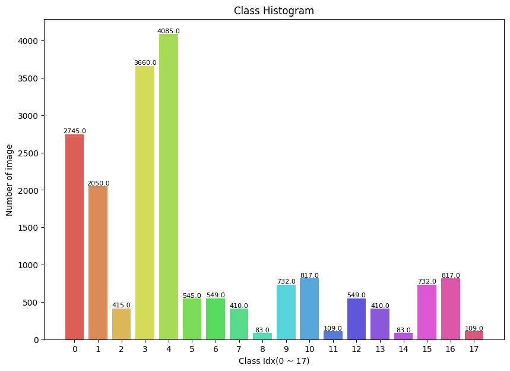
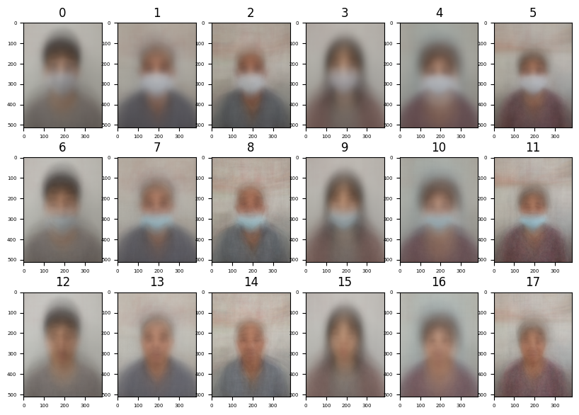
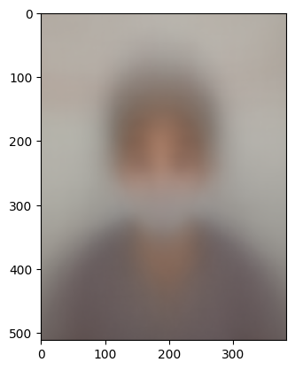
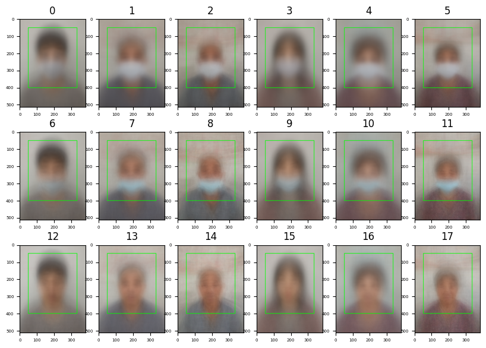
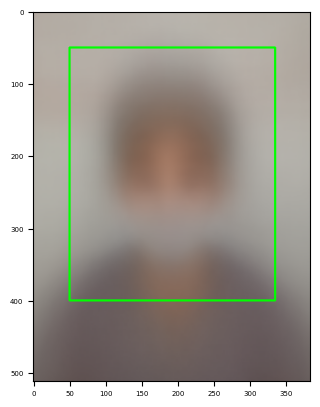

AI Stages - 마스크 착용 상태 분류 대회
Age-Gender-MaskStatus 한번에 예측하기 #1
기존에 Age, Gender, Mask Train을 위해 만든 자원을 활용, 다시 코드를 짜서 train을 시켜보려고 했다.
Basemodel은 다른 대외에서 준수한 성능을 보여주었단 EfficientNet B4를 사용했다.
-
Output
Namespace(batch_size=32, csv_path='../train_i.csv', device='cuda', epochs=20, img_size=380, lr=0.0004, save_name='weights_all_efb4_v0.tar', save_path='../models/checkpoint/', seed=41, step_gamma=1.0, step_size=10, target_model='EfficientnetB4()', validation_ratio=0.2) 100%|███████████████████████████████████████████| 473/473 [08:20<00:00, 1.06s/it] 100%|███████████████████████████████████████████| 119/119 [00:38<00:00, 3.08it/s] Epoch [1] / Train Loss : [0.51088] / Val Loss : [4.52802] / F1 : [0.16130] * New Best Model -> Epoch [1] / best_score : [0.16130] -> The model has been saved at ../models/checkpoint/weights_all_efb4_v0.tar 100%|███████████████████████████████████████████| 473/473 [08:17<00:00, 1.05s/it] 100%|███████████████████████████████████████████| 119/119 [00:37<00:00, 3.14it/s] Epoch [2] / Train Loss : [0.23640] / Val Loss : [4.87189] / F1 : [0.16493] * New Best Model -> Epoch [2] / best_score : [0.16493] -> The model has been saved at ../models/checkpoint/weights_all_efb4_v0.tar 100%|███████████████████████████████████████████| 473/473 [08:11<00:00, 1.04s/it] 100%|███████████████████████████████████████████| 119/119 [00:37<00:00, 3.16it/s] Epoch [3] / Train Loss : [0.15332] / Val Loss : [5.03418] / F1 : [0.17144] * New Best Model -> Epoch [3] / best_score : [0.17144] -> The model has been saved at ../models/checkpoint/weights_all_efb4_v0.tar 100%|███████████████████████████████████████████| 473/473 [08:12<00:00, 1.04s/it] 100%|███████████████████████████████████████████| 119/119 [00:39<00:00, 3.05it/s] Epoch [4] / Train Loss : [0.12163] / Val Loss : [5.47039] / F1 : [0.16459] 100%|███████████████████████████████████████████| 473/473 [08:12<00:00, 1.04s/it] 100%|███████████████████████████████████████████| 119/119 [00:37<00:00, 3.15it/s] Epoch [5] / Train Loss : [0.09997] / Val Loss : [6.38236] / F1 : [0.16500] 100%|███████████████████████████████████████████| 473/473 [08:10<00:00, 1.04s/it] 100%|███████████████████████████████████████████| 119/119 [00:37<00:00, 3.19it/s] Epoch [6] / Train Loss : [0.09601] / Val Loss : [6.03461] / F1 : [0.17007] 100%|███████████████████████████████████████████| 473/473 [08:09<00:00, 1.04s/it] 100%|███████████████████████████████████████████| 119/119 [00:38<00:00, 3.13it/s] Epoch [7] / Train Loss : [0.08823] / Val Loss : [6.99676] / F1 : [0.16531] 100%|███████████████████████████████████████████| 473/473 [08:13<00:00, 1.04s/it] 100%|███████████████████████████████████████████| 119/119 [00:37<00:00, 3.15it/s] Epoch [8] / Train Loss : [0.06689] / Val Loss : [7.06806] / F1 : [0.17427] * New Best Model -> Epoch [8] / best_score : [0.17427] -> The model has been saved at ../models/checkpoint/weights_all_efb4_v0.tar 100%|███████████████████████████████████████████| 473/473 [08:14<00:00, 1.04s/it] 100%|███████████████████████████████████████████| 119/119 [00:38<00:00, 3.06it/s] Epoch [9] / Train Loss : [0.06878] / Val Loss : [7.18693] / F1 : [0.17101] 100%|███████████████████████████████████████████| 473/473 [08:11<00:00, 1.04s/it] 100%|███████████████████████████████████████████| 119/119 [00:38<00:00, 3.11it/s] Epoch [10] / Train Loss : [0.06150] / Val Loss : [7.87434] / F1 : [0.16583] 100%|███████████████████████████████████████████| 473/473 [08:10<00:00, 1.04s/it] 100%|███████████████████████████████████████████| 119/119 [00:38<00:00, 3.11it/s] Epoch [11] / Train Loss : [0.06174] / Val Loss : [7.73951] / F1 : [0.17413] 100%|███████████████████████████████████████████| 473/473 [08:12<00:00, 1.04s/it] 100%|███████████████████████████████████████████| 119/119 [00:38<00:00, 3.12it/s] Epoch [12] / Train Loss : [0.05296] / Val Loss : [7.74434] / F1 : [0.17096] 100%|███████████████████████████████████████████| 473/473 [08:12<00:00, 1.04s/it] 100%|███████████████████████████████████████████| 119/119 [00:37<00:00, 3.14it/s] Epoch [13] / Train Loss : [0.05569] / Val Loss : [7.90913] / F1 : [0.17755] * New Best Model -> Epoch [13] / best_score : [0.17755] -> The model has been saved at ../models/checkpoint/weights_all_efb4_v0.tar 100%|███████████████████████████████████████████| 473/473 [08:13<00:00, 1.04s/it] 100%|███████████████████████████████████████████| 119/119 [00:38<00:00, 3.13it/s] Epoch [14] / Train Loss : [0.05386] / Val Loss : [7.90242] / F1 : [0.16470] 100%|███████████████████████████████████████████| 473/473 [08:10<00:00, 1.04s/it] 100%|███████████████████████████████████████████| 119/119 [00:37<00:00, 3.20it/s] Epoch [15] / Train Loss : [0.05038] / Val Loss : [8.74257] / F1 : [0.17196] 100%|███████████████████████████████████████████| 473/473 [08:09<00:00, 1.03s/it] 100%|███████████████████████████████████████████| 119/119 [00:37<00:00, 3.16it/s] Epoch [16] / Train Loss : [0.05482] / Val Loss : [8.96333] / F1 : [0.16495] 100%|███████████████████████████████████████████| 473/473 [08:10<00:00, 1.04s/it] 100%|███████████████████████████████████████████| 119/119 [00:37<00:00, 3.15it/s] Epoch [17] / Train Loss : [0.04385] / Val Loss : [8.56864] / F1 : [0.17062] 100%|███████████████████████████████████████████| 473/473 [08:10<00:00, 1.04s/it] 100%|███████████████████████████████████████████| 119/119 [00:37<00:00, 3.15it/s] Epoch [18] / Train Loss : [0.04033] / Val Loss : [8.51767] / F1 : [0.16381] 100%|███████████████████████████████████████████| 473/473 [08:11<00:00, 1.04s/it] 100%|███████████████████████████████████████████| 119/119 [00:38<00:00, 3.08it/s] Epoch [19] / Train Loss : [0.03861] / Val Loss : [9.03492] / F1 : [0.16623] 100%|███████████████████████████████████████████| 473/473 [08:12<00:00, 1.04s/it] 100%|███████████████████████████████████████████| 119/119 [00:37<00:00, 3.15it/s] Epoch [20] / Train Loss : [0.04452] / Val Loss : [9.04841] / F1 : [0.16245]
결과, 성능이 나오질 않았다.
Train Loss는 지속적으로 감소했지만, Validation Loss는 증가했다.
Learning Rate의 문제라고 생각하여 1e-2 ~1e-5까지 0.1배로 테스트를 진행했으나 달라진 점이 보이지 않았다.
원인 분석
-
Learning Rate를 잘못 설정해서 훈련 자체가 안되는 것일까?
- 우선, TrainLoss는 감소하므로 훈련이 아에 안되는 상황은 아닐 것이다.
-
Data Argmentation을 너무 과하게 한 것인가?
-
결과
train_transform = A.Compose([ # A.Resize(args.img_size, args.img_size), A.RandomResizedCrop( args.img_size, args.img_size, scale=(0.8, 1.0)), A.RandomBrightnessContrast(p=0.3), A.RandomGamma(p=0.3), A.RandomFog(), A.RandomToneCurve(), A.HorizontalFlip(p=0.5), A.Normalize(mean=(0.485, 0.456, 0.406), std=( 0.229, 0.224, 0.225), max_pixel_value=255.0, always_apply=False, p=1.0), ToTensorV2() ]) test_transform = A.Compose([ A.Resize(args.img_size, args.img_size), A.Normalize(mean=(0.485, 0.456, 0.406), std=(0.229, 0.224, 0.225), max_pixel_value=255.0, always_apply=False, p=1.0), ToTensorV2() ]) -
Gender 분류 모델에 넣은 Argmentation을 그대로 사용했기 때문에 가능성이 있다.
-
원복 및 재실행 결과
Namespace(batch_size=32, csv_path='../train_i.csv', device='cuda', epochs=20, img_size=380, lr=0.0004, save_name='MGAWeight_EfficientnetB4.tar', save_path='../models/checkpoint/', seed=41, step_gamma=1.0, step_size=10, target_model='EfficientnetB4()', validation_ratio=0.2) 100%|███████████████████████████████████| 473/473 [06:37<00:00, 1.19it/s] 100%|████████████████████████████████████████████████████████████████████████████████████████████████████████████████████████████████████████████████████████████████████████████████████████████████████████████████████████████████████████████████████████████████████| 119/119 [00:39<00:00, 2.99it/s] Epoch [1] / Train Loss : [0.41027] / Val Loss : [4.48446] / F1 : [0.16489] * New Best Model -> Epoch [1] / best_score : [0.16489] -> The model has been saved at ../models/checkpoint/MGAWeight_EfficientnetB4.tar 100%|████████████████████████████████████████████████████████████████████████████████████████████████████████████████████████████████████████████████████████████████████████████████████████████████████████████████████████████████████████████████████████████████████| 473/473 [06:34<00:00, 1.20it/s] 100%|████████████████████████████████████████████████████████████████████████████████████████████████████████████████████████████████████████████████████████████████████████████████████████████████████████████████████████████████████████████████████████████████████| 119/119 [00:39<00:00, 3.04it/s] Epoch [2] / Train Loss : [0.12687] / Val Loss : [5.51019] / F1 : [0.17274] * New Best Model -> Epoch [2] / best_score : [0.17274] -> The model has been saved at ../models/checkpoint/MGAWeight_EfficientnetB4.tar 100%|████████████████████████████████████████████████████████████████████████████████████████████████████████████████████████████████████████████████████████████████████████████████████████████████████████████████████████████████████████████████████████████████████| 473/473 [06:33<00:00, 1.20it/s] 100%|████████████████████████████████████████████████████████████████████████████████████████████████████████████████████████████████████████████████████████████████████████████████████████████████████████████████████████████████████████████████████████████████████| 119/119 [00:38<00:00, 3.05it/s] Epoch [3] / Train Loss : [0.10025] / Val Loss : [5.66333] / F1 : [0.17255] 100%|████████████████████████████████████████████████████████████████████████████████████████████████████████████████████████████████████████████████████████████████████████████████████████████████████████████████████████████████████████████████████████████████████| 473/473 [06:35<00:00, 1.20it/s] 100%|████████████████████████████████████████████████████████████████████████████████████████████████████████████████████████████████████████████████████████████████████████████████████████████████████████████████████████████████████████████████████████████████████| 119/119 [00:39<00:00, 3.04it/s] Epoch [4] / Train Loss : [0.06157] / Val Loss : [6.57190] / F1 : [0.16740] 100%|████████████████████████████████████████████████████████████████████████████████████████████████████████████████████████████████████████████████████████████████████████████████████████████████████████████████████████████████████████████████████████████████████| 473/473 [06:34<00:00, 1.20it/s] 100%|████████████████████████████████████████████████████████████████████████████████████████████████████████████████████████████████████████████████████████████████████████████████████████████████████████████████████████████████████████████████████████████████████| 119/119 [00:39<00:00, 3.03it/s] Epoch [5] / Train Loss : [0.07978] / Val Loss : [6.40279] / F1 : [0.17934] * New Best Model -> Epoch [5] / best_score : [0.17934] -> The model has been saved at ../models/checkpoint/MGAWeight_EfficientnetB4.tar 100%|████████████████████████████████████████████████████████████████████████████████████████████████████████████████████████████████████████████████████████████████████████████████████████████████████████████████████████████████████████████████████████████████████| 473/473 [06:35<00:00, 1.20it/s] 100%|████████████████████████████████████████████████████████████████████████████████████████████████████████████████████████████████████████████████████████████████████████████████████████████████████████████████████████████████████████████████████████████████████| 119/119 [00:39<00:00, 3.04it/s] Epoch [6] / Train Loss : [0.04555] / Val Loss : [6.41356] / F1 : [0.17498] 100%|████████████████████████████████████████████████████████████████████████████████████████████████████████████████████████████████████████████████████████████████████████████████████████████████████████████████████████████████████████████████████████████████████| 473/473 [06:33<00:00, 1.20it/s] 100%|████████████████████████████████████████████████████████████████████████████████████████████████████████████████████████████████████████████████████████████████████████████████████████████████████████████████████████████████████████████████████████████████████| 119/119 [00:38<00:00, 3.09it/s] Epoch [7] / Train Loss : [0.03668] / Val Loss : [7.69871] / F1 : [0.16752] 100%|████████████████████████████████████████████████████████████████████████████████████████████████████████████████████████████████████████████████████████████████████████████████████████████████████████████████████████████████████████████████████████████████████| 473/473 [06:36<00:00, 1.19it/s] 100%|████████████████████████████████████████████████████████████████████████████████████████████████████████████████████████████████████████████████████████████████████████████████████████████████████████████████████████████████████████████████████████████████████| 119/119 [00:38<00:00, 3.07it/s] Epoch [8] / Train Loss : [0.03775] / Val Loss : [7.32922] / F1 : [0.16793] 100%|████████████████████████████████████████████████████████████████████████████████████████████████████████████████████████████████████████████████████████████████████████████████████████████████████████████████████████████████████████████████████████████████████| 473/473 [06:35<00:00, 1.20it/s] 100%|████████████████████████████████████████████████████████████████████████████████████████████████████████████████████████████████████████████████████████████████████████████████████████████████████████████████████████████████████████████████████████████████████| 119/119 [00:39<00:00, 3.04it/s] Epoch [9] / Train Loss : [0.05067] / Val Loss : [7.42311] / F1 : [0.16720] 100%|████████████████████████████████████████████████████████████████████████████████████████████████████████████████████████████████████████████████████████████████████████████████████████████████████████████████████████████████████████████████████████████████████| 473/473 [06:32<00:00, 1.21it/s] 100%|████████████████████████████████████████████████████████████████████████████████████████████████████████████████████████████████████████████████████████████████████████████████████████████████████████████████████████████████████████████████████████████████████| 119/119 [00:38<00:00, 3.08it/s] Epoch [10] / Train Loss : [0.05210] / Val Loss : [7.89588] / F1 : [0.17300] 100%|████████████████████████████████████████████████████████████████████████████████████████████████████████████████████████████████████████████████████████████████████████████████████████████████████████████████████████████████████████████████████████████████████| 473/473 [06:30<00:00, 1.21it/s] 100%|████████████████████████████████████████████████████████████████████████████████████████████████████████████████████████████████████████████████████████████████████████████████████████████████████████████████████████████████████████████████████████████████████| 119/119 [00:37<00:00, 3.13it/s] Epoch [11] / Train Loss : [0.02483] / Val Loss : [7.87729] / F1 : [0.16588] 100%|████████████████████████████████████████████████████████████████████████████████████████████████████████████████████████████████████████████████████████████████████████████████████████████████████████████████████████████████████████████████████████████████████| 473/473 [06:31<00:00, 1.21it/s] 100%|████████████████████████████████████████████████████████████████████████████████████████████████████████████████████████████████████████████████████████████████████████████████████████████████████████████████████████████████████████████████████████████████████| 119/119 [00:38<00:00, 3.09it/s] Epoch [12] / Train Loss : [0.04351] / Val Loss : [8.21418] / F1 : [0.16275] 100%|████████████████████████████████████████████████████████████████████████████████████████████████████████████████████████████████████████████████████████████████████████████████████████████████████████████████████████████████████████████████████████████████████| 473/473 [06:31<00:00, 1.21it/s] 100%|████████████████████████████████████████████████████████████████████████████████████████████████████████████████████████████████████████████████████████████████████████████████████████████████████████████████████████████████████████████████████████████████████| 119/119 [00:38<00:00, 3.12it/s] Epoch [13] / Train Loss : [0.02155] / Val Loss : [8.29829] / F1 : [0.16369] 100%|████████████████████████████████████████████████████████████████████████████████████████████████████████████████████████████████████████████████████████████████████████████████████████████████████████████████████████████████████████████████████████████████████| 473/473 [06:30<00:00, 1.21it/s] 100%|████████████████████████████████████████████████████████████████████████████████████████████████████████████████████████████████████████████████████████████████████████████████████████████████████████████████████████████████████████████████████████████████████| 119/119 [00:37<00:00, 3.19it/s] Epoch [14] / Train Loss : [0.02002] / Val Loss : [8.14832] / F1 : [0.15482] 100%|████████████████████████████████████████████████████████████████████████████████████████████████████████████████████████████████████████████████████████████████████████████████████████████████████████████████████████████████████████████████████████████████████| 473/473 [06:30<00:00, 1.21it/s] 100%|████████████████████████████████████████████████████████████████████████████████████████████████████████████████████████████████████████████████████████████████████████████████████████████████████████████████████████████████████████████████████████████████████| 119/119 [00:38<00:00, 3.09it/s] Epoch [15] / Train Loss : [0.03869] / Val Loss : [9.19703] / F1 : [0.16264] 100%|████████████████████████████████████████████████████████████████████████████████████████████████████████████████████████████████████████████████████████████████████████████████████████████████████████████████████████████████████████████████████████████████████| 473/473 [06:29<00:00, 1.21it/s] 100%|████████████████████████████████████████████████████████████████████████████████████████████████████████████████████████████████████████████████████████████████████████████████████████████████████████████████████████████████████████████████████████████████████| 119/119 [00:38<00:00, 3.09it/s] Epoch [16] / Train Loss : [0.02364] / Val Loss : [8.64021] / F1 : [0.16931] 100%|████████████████████████████████████████████████████████████████████████████████████████████████████████████████████████████████████████████████████████████████████████████████████████████████████████████████████████████████████████████████████████████████████| 473/473 [06:30<00:00, 1.21it/s] 100%|████████████████████████████████████████████████████████████████████████████████████████████████████████████████████████████████████████████████████████████████████████████████████████████████████████████████████████████████████████████████████████████████████| 119/119 [00:38<00:00, 3.08it/s] Epoch [17] / Train Loss : [0.02183] / Val Loss : [9.18431] / F1 : [0.17084] 100%|████████████████████████████████████████████████████████████████████████████████████████████████████████████████████████████████████████████████████████████████████████████████████████████████████████████████████████████████████████████████████████████████████| 473/473 [06:30<00:00, 1.21it/s] 100%|████████████████████████████████████████████████████████████████████████████████████████████████████████████████████████████████████████████████████████████████████████████████████████████████████████████████████████████████████████████████████████████████████| 119/119 [00:40<00:00, 2.95it/s] Epoch [18] / Train Loss : [0.03817] / Val Loss : [8.90696] / F1 : [0.16667] 100%|████████████████████████████████████████████████████████████████████████████████████████████████████████████████████████████████████████████████████████████████████████████████████████████████████████████████████████████████████████████████████████████████████| 473/473 [06:30<00:00, 1.21it/s] 100%|████████████████████████████████████████████████████████████████████████████████████████████████████████████████████████████████████████████████████████████████████████████████████████████████████████████████████████████████████████████████████████████████████| 119/119 [00:38<00:00, 3.10it/s] Epoch [19] / Train Loss : [0.03505] / Val Loss : [9.06653] / F1 : [0.16512] 100%|████████████████████████████████████████████████████████████████████████████████████████████████████████████████████████████████████████████████████████████████████████████████████████████████████████████████████████████████████████████████████████████████████| 473/473 [06:30<00:00, 1.21it/s] 100%|████████████████████████████████████████████████████████████████████████████████████████████████████████████████████████████████████████████████████████████████████████████████████████████████████████████████████████████████████████████████████████████████████| 119/119 [00:37<00:00, 3.14it/s] Epoch [20] / Train Loss : [0.01673] / Val Loss : [8.40525] / F1 : [0.16786]
-
팀원들과 논의
방향을 잡기 어려워 팀원들에게 도움을 요청했다. 리더보드에서 가장 높은 성적은 거둔 팀원은 timm의 vit를 사용했다고 한다.
==ViT로 Classification 하기==
ViT를 사용해서 Classification을 하려면 어떻게 해야 할까?
인터넷의 블로그에서 예제코드를 찾았다.
import timm
num_classes = 120
model = timm.create_model('vit_base_patch16_224', pretrained=True, num_classes=num_classes)timm이라는 library를 사용해서 모델을 로드하고 파라미터로 num_classes를 넘겨준다
하지만 이래서는 blackbox여서 내부 구조를 알 수 없다
print를 사용해 내부를 확인해보았다.
-
기본 구조(for 1000 classes)
VisionTransformer( (patch_embed): PatchEmbed( (proj): Conv2d(3, 768, kernel_size=(16, 16), stride=(16, 16)) (norm): Identity() ) (pos_drop): Dropout(p=0.0, inplace=False) (norm_pre): Identity() (blocks): Sequential( (0): Block( (norm1): LayerNorm((768,), eps=1e-06, elementwise_affine=True) (attn): Attention( (qkv): Linear(in_features=768, out_features=2304, bias=True) (attn_drop): Dropout(p=0.0, inplace=False) (proj): Linear(in_features=768, out_features=768, bias=True) (proj_drop): Dropout(p=0.0, inplace=False) ) (ls1): Identity() (drop_path1): Identity() (norm2): LayerNorm((768,), eps=1e-06, elementwise_affine=True) (mlp): Mlp( (fc1): Linear(in_features=768, out_features=3072, bias=True) (act): GELU(approximate=none) (drop1): Dropout(p=0.0, inplace=False) (fc2): Linear(in_features=3072, out_features=768, bias=True) (drop2): Dropout(p=0.0, inplace=False) ) (ls2): Identity() (drop_path2): Identity() ) (1): Block( (norm1): LayerNorm((768,), eps=1e-06, elementwise_affine=True) (attn): Attention( (qkv): Linear(in_features=768, out_features=2304, bias=True) (attn_drop): Dropout(p=0.0, inplace=False) (proj): Linear(in_features=768, out_features=768, bias=True) (proj_drop): Dropout(p=0.0, inplace=False) ) (ls1): Identity() (drop_path1): Identity() (norm2): LayerNorm((768,), eps=1e-06, elementwise_affine=True) (mlp): Mlp( (fc1): Linear(in_features=768, out_features=3072, bias=True) (act): GELU(approximate=none) (drop1): Dropout(p=0.0, inplace=False) (fc2): Linear(in_features=3072, out_features=768, bias=True) (drop2): Dropout(p=0.0, inplace=False) ) (ls2): Identity() (drop_path2): Identity() ) (2): Block( (norm1): LayerNorm((768,), eps=1e-06, elementwise_affine=True) (attn): Attention( (qkv): Linear(in_features=768, out_features=2304, bias=True) (attn_drop): Dropout(p=0.0, inplace=False) (proj): Linear(in_features=768, out_features=768, bias=True) (proj_drop): Dropout(p=0.0, inplace=False) ) (ls1): Identity() (drop_path1): Identity() (norm2): LayerNorm((768,), eps=1e-06, elementwise_affine=True) (mlp): Mlp( (fc1): Linear(in_features=768, out_features=3072, bias=True) (act): GELU(approximate=none) (drop1): Dropout(p=0.0, inplace=False) (fc2): Linear(in_features=3072, out_features=768, bias=True) (drop2): Dropout(p=0.0, inplace=False) ) (ls2): Identity() (drop_path2): Identity() ) (3): Block( (norm1): LayerNorm((768,), eps=1e-06, elementwise_affine=True) (attn): Attention( (qkv): Linear(in_features=768, out_features=2304, bias=True) (attn_drop): Dropout(p=0.0, inplace=False) (proj): Linear(in_features=768, out_features=768, bias=True) (proj_drop): Dropout(p=0.0, inplace=False) ) (ls1): Identity() (drop_path1): Identity() (norm2): LayerNorm((768,), eps=1e-06, elementwise_affine=True) (mlp): Mlp( (fc1): Linear(in_features=768, out_features=3072, bias=True) (act): GELU(approximate=none) (drop1): Dropout(p=0.0, inplace=False) (fc2): Linear(in_features=3072, out_features=768, bias=True) (drop2): Dropout(p=0.0, inplace=False) ) (ls2): Identity() (drop_path2): Identity() ) (4): Block( (norm1): LayerNorm((768,), eps=1e-06, elementwise_affine=True) (attn): Attention( (qkv): Linear(in_features=768, out_features=2304, bias=True) (attn_drop): Dropout(p=0.0, inplace=False) (proj): Linear(in_features=768, out_features=768, bias=True) (proj_drop): Dropout(p=0.0, inplace=False) ) (ls1): Identity() (drop_path1): Identity() (norm2): LayerNorm((768,), eps=1e-06, elementwise_affine=True) (mlp): Mlp( (fc1): Linear(in_features=768, out_features=3072, bias=True) (act): GELU(approximate=none) (drop1): Dropout(p=0.0, inplace=False) (fc2): Linear(in_features=3072, out_features=768, bias=True) (drop2): Dropout(p=0.0, inplace=False) ) (ls2): Identity() (drop_path2): Identity() ) (5): Block( (norm1): LayerNorm((768,), eps=1e-06, elementwise_affine=True) (attn): Attention( (qkv): Linear(in_features=768, out_features=2304, bias=True) (attn_drop): Dropout(p=0.0, inplace=False) (proj): Linear(in_features=768, out_features=768, bias=True) (proj_drop): Dropout(p=0.0, inplace=False) ) (ls1): Identity() (drop_path1): Identity() (norm2): LayerNorm((768,), eps=1e-06, elementwise_affine=True) (mlp): Mlp( (fc1): Linear(in_features=768, out_features=3072, bias=True) (act): GELU(approximate=none) (drop1): Dropout(p=0.0, inplace=False) (fc2): Linear(in_features=3072, out_features=768, bias=True) (drop2): Dropout(p=0.0, inplace=False) ) (ls2): Identity() (drop_path2): Identity() ) (6): Block( (norm1): LayerNorm((768,), eps=1e-06, elementwise_affine=True) (attn): Attention( (qkv): Linear(in_features=768, out_features=2304, bias=True) (attn_drop): Dropout(p=0.0, inplace=False) (proj): Linear(in_features=768, out_features=768, bias=True) (proj_drop): Dropout(p=0.0, inplace=False) ) (ls1): Identity() (drop_path1): Identity() (norm2): LayerNorm((768,), eps=1e-06, elementwise_affine=True) (mlp): Mlp( (fc1): Linear(in_features=768, out_features=3072, bias=True) (act): GELU(approximate=none) (drop1): Dropout(p=0.0, inplace=False) (fc2): Linear(in_features=3072, out_features=768, bias=True) (drop2): Dropout(p=0.0, inplace=False) ) (ls2): Identity() (drop_path2): Identity() ) (7): Block( (norm1): LayerNorm((768,), eps=1e-06, elementwise_affine=True) (attn): Attention( (qkv): Linear(in_features=768, out_features=2304, bias=True) (attn_drop): Dropout(p=0.0, inplace=False) (proj): Linear(in_features=768, out_features=768, bias=True) (proj_drop): Dropout(p=0.0, inplace=False) ) (ls1): Identity() (drop_path1): Identity() (norm2): LayerNorm((768,), eps=1e-06, elementwise_affine=True) (mlp): Mlp( (fc1): Linear(in_features=768, out_features=3072, bias=True) (act): GELU(approximate=none) (drop1): Dropout(p=0.0, inplace=False) (fc2): Linear(in_features=3072, out_features=768, bias=True) (drop2): Dropout(p=0.0, inplace=False) ) (ls2): Identity() (drop_path2): Identity() ) (8): Block( (norm1): LayerNorm((768,), eps=1e-06, elementwise_affine=True) (attn): Attention( (qkv): Linear(in_features=768, out_features=2304, bias=True) (attn_drop): Dropout(p=0.0, inplace=False) (proj): Linear(in_features=768, out_features=768, bias=True) (proj_drop): Dropout(p=0.0, inplace=False) ) (ls1): Identity() (drop_path1): Identity() (norm2): LayerNorm((768,), eps=1e-06, elementwise_affine=True) (mlp): Mlp( (fc1): Linear(in_features=768, out_features=3072, bias=True) (act): GELU(approximate=none) (drop1): Dropout(p=0.0, inplace=False) (fc2): Linear(in_features=3072, out_features=768, bias=True) (drop2): Dropout(p=0.0, inplace=False) ) (ls2): Identity() (drop_path2): Identity() ) (9): Block( (norm1): LayerNorm((768,), eps=1e-06, elementwise_affine=True) (attn): Attention( (qkv): Linear(in_features=768, out_features=2304, bias=True) (attn_drop): Dropout(p=0.0, inplace=False) (proj): Linear(in_features=768, out_features=768, bias=True) (proj_drop): Dropout(p=0.0, inplace=False) ) (ls1): Identity() (drop_path1): Identity() (norm2): LayerNorm((768,), eps=1e-06, elementwise_affine=True) (mlp): Mlp( (fc1): Linear(in_features=768, out_features=3072, bias=True) (act): GELU(approximate=none) (drop1): Dropout(p=0.0, inplace=False) (fc2): Linear(in_features=3072, out_features=768, bias=True) (drop2): Dropout(p=0.0, inplace=False) ) (ls2): Identity() (drop_path2): Identity() ) (10): Block( (norm1): LayerNorm((768,), eps=1e-06, elementwise_affine=True) (attn): Attention( (qkv): Linear(in_features=768, out_features=2304, bias=True) (attn_drop): Dropout(p=0.0, inplace=False) (proj): Linear(in_features=768, out_features=768, bias=True) (proj_drop): Dropout(p=0.0, inplace=False) ) (ls1): Identity() (drop_path1): Identity() (norm2): LayerNorm((768,), eps=1e-06, elementwise_affine=True) (mlp): Mlp( (fc1): Linear(in_features=768, out_features=3072, bias=True) (act): GELU(approximate=none) (drop1): Dropout(p=0.0, inplace=False) (fc2): Linear(in_features=3072, out_features=768, bias=True) (drop2): Dropout(p=0.0, inplace=False) ) (ls2): Identity() (drop_path2): Identity() ) (11): Block( (norm1): LayerNorm((768,), eps=1e-06, elementwise_affine=True) (attn): Attention( (qkv): Linear(in_features=768, out_features=2304, bias=True) (attn_drop): Dropout(p=0.0, inplace=False) (proj): Linear(in_features=768, out_features=768, bias=True) (proj_drop): Dropout(p=0.0, inplace=False) ) (ls1): Identity() (drop_path1): Identity() (norm2): LayerNorm((768,), eps=1e-06, elementwise_affine=True) (mlp): Mlp( (fc1): Linear(in_features=768, out_features=3072, bias=True) (act): GELU(approximate=none) (drop1): Dropout(p=0.0, inplace=False) (fc2): Linear(in_features=3072, out_features=768, bias=True) (drop2): Dropout(p=0.0, inplace=False) ) (ls2): Identity() (drop_path2): Identity() ) ) (norm): LayerNorm((768,), eps=1e-06, elementwise_affine=True) (fc_norm): Identity() (head): Linear(in_features=768, out_features=1000, bias=True) ) -
변경 구조(for 18 classes)
VisionTransformer( (patch_embed): PatchEmbed( (proj): Conv2d(3, 768, kernel_size=(16, 16), stride=(16, 16)) (norm): Identity() ) (pos_drop): Dropout(p=0.0, inplace=False) (norm_pre): Identity() (blocks): Sequential( (0): Block( (norm1): LayerNorm((768,), eps=1e-06, elementwise_affine=True) (attn): Attention( (qkv): Linear(in_features=768, out_features=2304, bias=True) (attn_drop): Dropout(p=0.0, inplace=False) (proj): Linear(in_features=768, out_features=768, bias=True) (proj_drop): Dropout(p=0.0, inplace=False) ) (ls1): Identity() (drop_path1): Identity() (norm2): LayerNorm((768,), eps=1e-06, elementwise_affine=True) (mlp): Mlp( (fc1): Linear(in_features=768, out_features=3072, bias=True) (act): GELU(approximate=none) (drop1): Dropout(p=0.0, inplace=False) (fc2): Linear(in_features=3072, out_features=768, bias=True) (drop2): Dropout(p=0.0, inplace=False) ) (ls2): Identity() (drop_path2): Identity() ) (1): Block( (norm1): LayerNorm((768,), eps=1e-06, elementwise_affine=True) (attn): Attention( (qkv): Linear(in_features=768, out_features=2304, bias=True) (attn_drop): Dropout(p=0.0, inplace=False) (proj): Linear(in_features=768, out_features=768, bias=True) (proj_drop): Dropout(p=0.0, inplace=False) ) (ls1): Identity() (drop_path1): Identity() (norm2): LayerNorm((768,), eps=1e-06, elementwise_affine=True) (mlp): Mlp( (fc1): Linear(in_features=768, out_features=3072, bias=True) (act): GELU(approximate=none) (drop1): Dropout(p=0.0, inplace=False) (fc2): Linear(in_features=3072, out_features=768, bias=True) (drop2): Dropout(p=0.0, inplace=False) ) (ls2): Identity() (drop_path2): Identity() ) (2): Block( (norm1): LayerNorm((768,), eps=1e-06, elementwise_affine=True) (attn): Attention( (qkv): Linear(in_features=768, out_features=2304, bias=True) (attn_drop): Dropout(p=0.0, inplace=False) (proj): Linear(in_features=768, out_features=768, bias=True) (proj_drop): Dropout(p=0.0, inplace=False) ) (ls1): Identity() (drop_path1): Identity() (norm2): LayerNorm((768,), eps=1e-06, elementwise_affine=True) (mlp): Mlp( (fc1): Linear(in_features=768, out_features=3072, bias=True) (act): GELU(approximate=none) (drop1): Dropout(p=0.0, inplace=False) (fc2): Linear(in_features=3072, out_features=768, bias=True) (drop2): Dropout(p=0.0, inplace=False) ) (ls2): Identity() (drop_path2): Identity() ) (3): Block( (norm1): LayerNorm((768,), eps=1e-06, elementwise_affine=True) (attn): Attention( (qkv): Linear(in_features=768, out_features=2304, bias=True) (attn_drop): Dropout(p=0.0, inplace=False) (proj): Linear(in_features=768, out_features=768, bias=True) (proj_drop): Dropout(p=0.0, inplace=False) ) (ls1): Identity() (drop_path1): Identity() (norm2): LayerNorm((768,), eps=1e-06, elementwise_affine=True) (mlp): Mlp( (fc1): Linear(in_features=768, out_features=3072, bias=True) (act): GELU(approximate=none) (drop1): Dropout(p=0.0, inplace=False) (fc2): Linear(in_features=3072, out_features=768, bias=True) (drop2): Dropout(p=0.0, inplace=False) ) (ls2): Identity() (drop_path2): Identity() ) (4): Block( (norm1): LayerNorm((768,), eps=1e-06, elementwise_affine=True) (attn): Attention( (qkv): Linear(in_features=768, out_features=2304, bias=True) (attn_drop): Dropout(p=0.0, inplace=False) (proj): Linear(in_features=768, out_features=768, bias=True) (proj_drop): Dropout(p=0.0, inplace=False) ) (ls1): Identity() (drop_path1): Identity() (norm2): LayerNorm((768,), eps=1e-06, elementwise_affine=True) (mlp): Mlp( (fc1): Linear(in_features=768, out_features=3072, bias=True) (act): GELU(approximate=none) (drop1): Dropout(p=0.0, inplace=False) (fc2): Linear(in_features=3072, out_features=768, bias=True) (drop2): Dropout(p=0.0, inplace=False) ) (ls2): Identity() (drop_path2): Identity() ) (5): Block( (norm1): LayerNorm((768,), eps=1e-06, elementwise_affine=True) (attn): Attention( (qkv): Linear(in_features=768, out_features=2304, bias=True) (attn_drop): Dropout(p=0.0, inplace=False) (proj): Linear(in_features=768, out_features=768, bias=True) (proj_drop): Dropout(p=0.0, inplace=False) ) (ls1): Identity() (drop_path1): Identity() (norm2): LayerNorm((768,), eps=1e-06, elementwise_affine=True) (mlp): Mlp( (fc1): Linear(in_features=768, out_features=3072, bias=True) (act): GELU(approximate=none) (drop1): Dropout(p=0.0, inplace=False) (fc2): Linear(in_features=3072, out_features=768, bias=True) (drop2): Dropout(p=0.0, inplace=False) ) (ls2): Identity() (drop_path2): Identity() ) (6): Block( (norm1): LayerNorm((768,), eps=1e-06, elementwise_affine=True) (attn): Attention( (qkv): Linear(in_features=768, out_features=2304, bias=True) (attn_drop): Dropout(p=0.0, inplace=False) (proj): Linear(in_features=768, out_features=768, bias=True) (proj_drop): Dropout(p=0.0, inplace=False) ) (ls1): Identity() (drop_path1): Identity() (norm2): LayerNorm((768,), eps=1e-06, elementwise_affine=True) (mlp): Mlp( (fc1): Linear(in_features=768, out_features=3072, bias=True) (act): GELU(approximate=none) (drop1): Dropout(p=0.0, inplace=False) (fc2): Linear(in_features=3072, out_features=768, bias=True) (drop2): Dropout(p=0.0, inplace=False) ) (ls2): Identity() (drop_path2): Identity() ) (7): Block( (norm1): LayerNorm((768,), eps=1e-06, elementwise_affine=True) (attn): Attention( (qkv): Linear(in_features=768, out_features=2304, bias=True) (attn_drop): Dropout(p=0.0, inplace=False) (proj): Linear(in_features=768, out_features=768, bias=True) (proj_drop): Dropout(p=0.0, inplace=False) ) (ls1): Identity() (drop_path1): Identity() (norm2): LayerNorm((768,), eps=1e-06, elementwise_affine=True) (mlp): Mlp( (fc1): Linear(in_features=768, out_features=3072, bias=True) (act): GELU(approximate=none) (drop1): Dropout(p=0.0, inplace=False) (fc2): Linear(in_features=3072, out_features=768, bias=True) (drop2): Dropout(p=0.0, inplace=False) ) (ls2): Identity() (drop_path2): Identity() ) (8): Block( (norm1): LayerNorm((768,), eps=1e-06, elementwise_affine=True) (attn): Attention( (qkv): Linear(in_features=768, out_features=2304, bias=True) (attn_drop): Dropout(p=0.0, inplace=False) (proj): Linear(in_features=768, out_features=768, bias=True) (proj_drop): Dropout(p=0.0, inplace=False) ) (ls1): Identity() (drop_path1): Identity() (norm2): LayerNorm((768,), eps=1e-06, elementwise_affine=True) (mlp): Mlp( (fc1): Linear(in_features=768, out_features=3072, bias=True) (act): GELU(approximate=none) (drop1): Dropout(p=0.0, inplace=False) (fc2): Linear(in_features=3072, out_features=768, bias=True) (drop2): Dropout(p=0.0, inplace=False) ) (ls2): Identity() (drop_path2): Identity() ) (9): Block( (norm1): LayerNorm((768,), eps=1e-06, elementwise_affine=True) (attn): Attention( (qkv): Linear(in_features=768, out_features=2304, bias=True) (attn_drop): Dropout(p=0.0, inplace=False) (proj): Linear(in_features=768, out_features=768, bias=True) (proj_drop): Dropout(p=0.0, inplace=False) ) (ls1): Identity() (drop_path1): Identity() (norm2): LayerNorm((768,), eps=1e-06, elementwise_affine=True) (mlp): Mlp( (fc1): Linear(in_features=768, out_features=3072, bias=True) (act): GELU(approximate=none) (drop1): Dropout(p=0.0, inplace=False) (fc2): Linear(in_features=3072, out_features=768, bias=True) (drop2): Dropout(p=0.0, inplace=False) ) (ls2): Identity() (drop_path2): Identity() ) (10): Block( (norm1): LayerNorm((768,), eps=1e-06, elementwise_affine=True) (attn): Attention( (qkv): Linear(in_features=768, out_features=2304, bias=True) (attn_drop): Dropout(p=0.0, inplace=False) (proj): Linear(in_features=768, out_features=768, bias=True) (proj_drop): Dropout(p=0.0, inplace=False) ) (ls1): Identity() (drop_path1): Identity() (norm2): LayerNorm((768,), eps=1e-06, elementwise_affine=True) (mlp): Mlp( (fc1): Linear(in_features=768, out_features=3072, bias=True) (act): GELU(approximate=none) (drop1): Dropout(p=0.0, inplace=False) (fc2): Linear(in_features=3072, out_features=768, bias=True) (drop2): Dropout(p=0.0, inplace=False) ) (ls2): Identity() (drop_path2): Identity() ) (11): Block( (norm1): LayerNorm((768,), eps=1e-06, elementwise_affine=True) (attn): Attention( (qkv): Linear(in_features=768, out_features=2304, bias=True) (attn_drop): Dropout(p=0.0, inplace=False) (proj): Linear(in_features=768, out_features=768, bias=True) (proj_drop): Dropout(p=0.0, inplace=False) ) (ls1): Identity() (drop_path1): Identity() (norm2): LayerNorm((768,), eps=1e-06, elementwise_affine=True) (mlp): Mlp( (fc1): Linear(in_features=768, out_features=3072, bias=True) (act): GELU(approximate=none) (drop1): Dropout(p=0.0, inplace=False) (fc2): Linear(in_features=3072, out_features=768, bias=True) (drop2): Dropout(p=0.0, inplace=False) ) (ls2): Identity() (drop_path2): Identity() ) ) (norm): LayerNorm((768,), eps=1e-06, elementwise_affine=True) (fc_norm): Identity() (head): Linear(in_features=768, out_features=18, bias=True) )
기본적으로 patch_embed → encoder block → head 구조로 되어있다
class parameter 변경 시, head 부분의 out_features가 변경된다
torchvision.models에도 vit가 존재한다
-
torchvision.models
VisionTransformer( (conv_proj): Conv2d(3, 768, kernel_size=(32, 32), stride=(32, 32)) (encoder): Encoder( (dropout): Dropout(p=0.0, inplace=False) (layers): Sequential( (encoder_layer_0): EncoderBlock( (ln_1): LayerNorm((768,), eps=1e-06, elementwise_affine=True) (self_attention): MultiheadAttention( (out_proj): NonDynamicallyQuantizableLinear(in_features=768, out_features=768, bias=True) ) (dropout): Dropout(p=0.0, inplace=False) (ln_2): LayerNorm((768,), eps=1e-06, elementwise_affine=True) (mlp): MLPBlock( (0): Linear(in_features=768, out_features=3072, bias=True) (1): GELU(approximate=none) (2): Dropout(p=0.0, inplace=False) (3): Linear(in_features=3072, out_features=768, bias=True) (4): Dropout(p=0.0, inplace=False) ) ) (encoder_layer_1): EncoderBlock( (ln_1): LayerNorm((768,), eps=1e-06, elementwise_affine=True) (self_attention): MultiheadAttention( (out_proj): NonDynamicallyQuantizableLinear(in_features=768, out_features=768, bias=True) ) (dropout): Dropout(p=0.0, inplace=False) (ln_2): LayerNorm((768,), eps=1e-06, elementwise_affine=True) (mlp): MLPBlock( (0): Linear(in_features=768, out_features=3072, bias=True) (1): GELU(approximate=none) (2): Dropout(p=0.0, inplace=False) (3): Linear(in_features=3072, out_features=768, bias=True) (4): Dropout(p=0.0, inplace=False) ) ) (encoder_layer_2): EncoderBlock( (ln_1): LayerNorm((768,), eps=1e-06, elementwise_affine=True) (self_attention): MultiheadAttention( (out_proj): NonDynamicallyQuantizableLinear(in_features=768, out_features=768, bias=True) ) (dropout): Dropout(p=0.0, inplace=False) (ln_2): LayerNorm((768,), eps=1e-06, elementwise_affine=True) (mlp): MLPBlock( (0): Linear(in_features=768, out_features=3072, bias=True) (1): GELU(approximate=none) (2): Dropout(p=0.0, inplace=False) (3): Linear(in_features=3072, out_features=768, bias=True) (4): Dropout(p=0.0, inplace=False) ) ) (encoder_layer_3): EncoderBlock( (ln_1): LayerNorm((768,), eps=1e-06, elementwise_affine=True) (self_attention): MultiheadAttention( (out_proj): NonDynamicallyQuantizableLinear(in_features=768, out_features=768, bias=True) ) (dropout): Dropout(p=0.0, inplace=False) (ln_2): LayerNorm((768,), eps=1e-06, elementwise_affine=True) (mlp): MLPBlock( (0): Linear(in_features=768, out_features=3072, bias=True) (1): GELU(approximate=none) (2): Dropout(p=0.0, inplace=False) (3): Linear(in_features=3072, out_features=768, bias=True) (4): Dropout(p=0.0, inplace=False) ) ) (encoder_layer_4): EncoderBlock( (ln_1): LayerNorm((768,), eps=1e-06, elementwise_affine=True) (self_attention): MultiheadAttention( (out_proj): NonDynamicallyQuantizableLinear(in_features=768, out_features=768, bias=True) ) (dropout): Dropout(p=0.0, inplace=False) (ln_2): LayerNorm((768,), eps=1e-06, elementwise_affine=True) (mlp): MLPBlock( (0): Linear(in_features=768, out_features=3072, bias=True) (1): GELU(approximate=none) (2): Dropout(p=0.0, inplace=False) (3): Linear(in_features=3072, out_features=768, bias=True) (4): Dropout(p=0.0, inplace=False) ) ) (encoder_layer_5): EncoderBlock( (ln_1): LayerNorm((768,), eps=1e-06, elementwise_affine=True) (self_attention): MultiheadAttention( (out_proj): NonDynamicallyQuantizableLinear(in_features=768, out_features=768, bias=True) ) (dropout): Dropout(p=0.0, inplace=False) (ln_2): LayerNorm((768,), eps=1e-06, elementwise_affine=True) (mlp): MLPBlock( (0): Linear(in_features=768, out_features=3072, bias=True) (1): GELU(approximate=none) (2): Dropout(p=0.0, inplace=False) (3): Linear(in_features=3072, out_features=768, bias=True) (4): Dropout(p=0.0, inplace=False) ) ) (encoder_layer_6): EncoderBlock( (ln_1): LayerNorm((768,), eps=1e-06, elementwise_affine=True) (self_attention): MultiheadAttention( (out_proj): NonDynamicallyQuantizableLinear(in_features=768, out_features=768, bias=True) ) (dropout): Dropout(p=0.0, inplace=False) (ln_2): LayerNorm((768,), eps=1e-06, elementwise_affine=True) (mlp): MLPBlock( (0): Linear(in_features=768, out_features=3072, bias=True) (1): GELU(approximate=none) (2): Dropout(p=0.0, inplace=False) (3): Linear(in_features=3072, out_features=768, bias=True) (4): Dropout(p=0.0, inplace=False) ) ) (encoder_layer_7): EncoderBlock( (ln_1): LayerNorm((768,), eps=1e-06, elementwise_affine=True) (self_attention): MultiheadAttention( (out_proj): NonDynamicallyQuantizableLinear(in_features=768, out_features=768, bias=True) ) (dropout): Dropout(p=0.0, inplace=False) (ln_2): LayerNorm((768,), eps=1e-06, elementwise_affine=True) (mlp): MLPBlock( (0): Linear(in_features=768, out_features=3072, bias=True) (1): GELU(approximate=none) (2): Dropout(p=0.0, inplace=False) (3): Linear(in_features=3072, out_features=768, bias=True) (4): Dropout(p=0.0, inplace=False) ) ) (encoder_layer_8): EncoderBlock( (ln_1): LayerNorm((768,), eps=1e-06, elementwise_affine=True) (self_attention): MultiheadAttention( (out_proj): NonDynamicallyQuantizableLinear(in_features=768, out_features=768, bias=True) ) (dropout): Dropout(p=0.0, inplace=False) (ln_2): LayerNorm((768,), eps=1e-06, elementwise_affine=True) (mlp): MLPBlock( (0): Linear(in_features=768, out_features=3072, bias=True) (1): GELU(approximate=none) (2): Dropout(p=0.0, inplace=False) (3): Linear(in_features=3072, out_features=768, bias=True) (4): Dropout(p=0.0, inplace=False) ) ) (encoder_layer_9): EncoderBlock( (ln_1): LayerNorm((768,), eps=1e-06, elementwise_affine=True) (self_attention): MultiheadAttention( (out_proj): NonDynamicallyQuantizableLinear(in_features=768, out_features=768, bias=True) ) (dropout): Dropout(p=0.0, inplace=False) (ln_2): LayerNorm((768,), eps=1e-06, elementwise_affine=True) (mlp): MLPBlock( (0): Linear(in_features=768, out_features=3072, bias=True) (1): GELU(approximate=none) (2): Dropout(p=0.0, inplace=False) (3): Linear(in_features=3072, out_features=768, bias=True) (4): Dropout(p=0.0, inplace=False) ) ) (encoder_layer_10): EncoderBlock( (ln_1): LayerNorm((768,), eps=1e-06, elementwise_affine=True) (self_attention): MultiheadAttention( (out_proj): NonDynamicallyQuantizableLinear(in_features=768, out_features=768, bias=True) ) (dropout): Dropout(p=0.0, inplace=False) (ln_2): LayerNorm((768,), eps=1e-06, elementwise_affine=True) (mlp): MLPBlock( (0): Linear(in_features=768, out_features=3072, bias=True) (1): GELU(approximate=none) (2): Dropout(p=0.0, inplace=False) (3): Linear(in_features=3072, out_features=768, bias=True) (4): Dropout(p=0.0, inplace=False) ) ) (encoder_layer_11): EncoderBlock( (ln_1): LayerNorm((768,), eps=1e-06, elementwise_affine=True) (self_attention): MultiheadAttention( (out_proj): NonDynamicallyQuantizableLinear(in_features=768, out_features=768, bias=True) ) (dropout): Dropout(p=0.0, inplace=False) (ln_2): LayerNorm((768,), eps=1e-06, elementwise_affine=True) (mlp): MLPBlock( (0): Linear(in_features=768, out_features=3072, bias=True) (1): GELU(approximate=none) (2): Dropout(p=0.0, inplace=False) (3): Linear(in_features=3072, out_features=768, bias=True) (4): Dropout(p=0.0, inplace=False) ) ) ) (ln): LayerNorm((768,), eps=1e-06, elementwise_affine=True) ) (heads): Sequential( (head): Linear(in_features=768, out_features=1000, bias=True) ) )
MultiheadAttention Block 내부가 print로 노출되지 않는 점을 제외하고는 동일한 구조를 가지고 있으므로 TorchVision의 ViT를 사용해서 모델을 구성했다.
-
Model Code
import torch import torch.nn as nn import torch.optim as optim import torch.nn.functional as F import torchvision.models as models class VIT_V0_KHS(nn.Module): def __init__(self, is_freeze:bool = True): super(VIT_V0_KHS, self).__init__() self.backborn = models.vit_b_16(weights = models.ViT_B_16_Weights.IMAGENET1K_V1) if(is_freeze == True): for p in self.backborn.parameters(): p.requires_grad = False self.backborn.heads = nn.Sequential(nn.Linear(768, 18)) def forward(self, x): x = self.backborn(x) return x
결과, 마찬가지로 훈련이 되지 않았다
-
출력(도중에 취소)
(lv1_imageclassification_cv02) (base) root@536ffaebb1ec:~/repos/lv1_imageclassification_cv02/train# python trainALL.py Namespace(batch_size=32, csv_path='../data/train_i.csv', device='cuda', epochs=20, img_size=224, lr=0.001, save_name='Weight_VIT_V0_KHS.tar', save_path='../models/checkpoint/', seed=41, step_gamma=1.0, step_size=10, target_model='VIT_V0_KHS()', validation_ratio=0.2) 100%|██████████████████████████████████████████████████████████████████████████████████████████████████████| 473/473 [01:57<00:00, 4.04it/s] 100%|██████████████████████████████████████████████████████████████████████████████████████████████████████| 119/119 [00:28<00:00, 4.22it/s] Epoch [1] / Train Loss : [0.90020] / Val Loss : [2.79555] / F1 : [0.16190] * New Best Model -> Epoch [1] / best_score : [0.16190] -> The model has been saved at ../models/checkpoint/Weight_VIT_V0_KHS.tar 100%|██████████████████████████████████████████████████████████████████████████████████████████████████████| 473/473 [01:53<00:00, 4.19it/s] 100%|██████████████████████████████████████████████████████████████████████████████████████████████████████| 119/119 [00:26<00:00, 4.48it/s] Epoch [2] / Train Loss : [0.54853] / Val Loss : [3.16076] / F1 : [0.16314] * New Best Model -> Epoch [2] / best_score : [0.16314] -> The model has been saved at ../models/checkpoint/Weight_VIT_V0_KHS.tar 100%|██████████████████████████████████████████████████████████████████████████████████████████████████████| 473/473 [01:54<00:00, 4.12it/s] 100%|██████████████████████████████████████████████████████████████████████████████████████████████████████| 119/119 [00:26<00:00, 4.45it/s] Epoch [3] / Train Loss : [0.46461] / Val Loss : [3.36511] / F1 : [0.16870] * New Best Model -> Epoch [3] / best_score : [0.16870] -> The model has been saved at ../models/checkpoint/Weight_VIT_V0_KHS.tar 100%|██████████████████████████████████████████████████████████████████████████████████████████████████████| 473/473 [01:55<00:00, 4.08it/s] 100%|██████████████████████████████████████████████████████████████████████████████████████████████████████| 119/119 [00:27<00:00, 4.39it/s] Epoch [4] / Train Loss : [0.41091] / Val Loss : [3.66533] / F1 : [0.16694]
내가 직접 짠 코드의 코드의 문제일까?(train, validation 오류 or loss의 잘못된 사용, … etc)
baseline code를 가져와 다시 세팅을 시작했다
baselinecode에 vit를 돌려본 결과, 된다…
-
출력(required_grad = true)
Namespace(augmentation='BaseAugmentation', batch_size=64, criterion='cross_entropy', data_dir='/opt/ml/repos/lv1_imageclassification_cv02/data/train/images', dataset='MaskBaseDataset', epochs=10, log_interval=20, lr=0.001, lr_decay_step=20, model='MyModel', model_dir='/opt/ml/repos/lv1_imageclassification_cv02/local/v2/model', name='exp', optimizer='SGD', resize=[224, 224], seed=42, val_ratio=0.2, valid_batch_size=1000) save_dir is /opt/ml/repos/lv1_imageclassification_cv02/local/v2/model/exp /opt/ml/.local/share/virtualenvs/lv1_imageclassification_cv02-bp8_CroY/lib/python3.8/site-packages/torchvision/transforms/transforms.py:332: UserWarning: Argument 'interpolation' of type int is deprecated since 0.13 and will be removed in 0.15. Please use InterpolationMode enum. warnings.warn( Epoch[0/10](20/236) || training loss 2.663 || training accuracy 16.64% || lr 0.001 Epoch[0/10](40/236) || training loss 2.311 || training accuracy 28.20% || lr 0.001 Epoch[0/10](60/236) || training loss 2.185 || training accuracy 33.75% || lr 0.001 Epoch[0/10](80/236) || training loss 2.066 || training accuracy 34.45% || lr 0.001 Epoch[0/10](100/236) || training loss 1.981 || training accuracy 37.73% || lr 0.001 Epoch[0/10](120/236) || training loss 1.88 || training accuracy 42.34% || lr 0.001 Epoch[0/10](140/236) || training loss 1.826 || training accuracy 45.47% || lr 0.001 Epoch[0/10](160/236) || training loss 1.77 || training accuracy 48.91% || lr 0.001 Epoch[0/10](180/236) || training loss 1.716 || training accuracy 50.00% || lr 0.001 Epoch[0/10](200/236) || training loss 1.68 || training accuracy 50.62% || lr 0.001 Epoch[0/10](220/236) || training loss 1.571 || training accuracy 54.53% || lr 0.001 Calculating validation results... New best model for val accuracy : 46.69%! saving the best model.. [Val] acc : 46.69%, loss: 1.5 || best acc : 46.69%, best loss: 1.5 Epoch[1/10](20/236) || training loss 1.464 || training accuracy 59.14% || lr 0.001 Epoch[1/10](40/236) || training loss 1.425 || training accuracy 58.52% || lr 0.001 Epoch[1/10](60/236) || training loss 1.434 || training accuracy 58.75% || lr 0.001 Epoch[1/10](80/236) || training loss 1.39 || training accuracy 59.84% || lr 0.001 Epoch[1/10](100/236) || training loss 1.33 || training accuracy 63.44% || lr 0.001 Epoch[1/10](120/236) || training loss 1.243 || training accuracy 65.47% || lr 0.001 Epoch[1/10](140/236) || training loss 1.243 || training accuracy 65.47% || lr 0.001 Epoch[1/10](160/236) || training loss 1.204 || training accuracy 66.41% || lr 0.001 Epoch[1/10](180/236) || training loss 1.173 || training accuracy 67.03% || lr 0.001 Epoch[1/10](200/236) || training loss 1.165 || training accuracy 68.59% || lr 0.001 Epoch[1/10](220/236) || training loss 1.145 || training accuracy 68.05% || lr 0.001 Calculating validation results... New best model for val accuracy : 54.92%! saving the best model.. [Val] acc : 54.92%, loss: 1.1 || best acc : 54.92%, best loss: 1.1 Epoch[2/10](20/236) || training loss 1.083 || training accuracy 69.69% || lr 0.001 Epoch[2/10](40/236) || training loss 0.9979 || training accuracy 72.42% || lr 0.001 Epoch[2/10](60/236) || training loss 1.025 || training accuracy 71.17% || lr 0.001 Epoch[2/10](80/236) || training loss 0.9999 || training accuracy 72.42% || lr 0.001 Epoch[2/10](100/236) || training loss 0.9508 || training accuracy 73.59% || lr 0.001 Epoch[2/10](120/236) || training loss 0.9475 || training accuracy 74.38% || lr 0.001 Epoch[2/10](140/236) || training loss 0.858 || training accuracy 77.81% || lr 0.001 Epoch[2/10](160/236) || training loss 0.8918 || training accuracy 75.78% || lr 0.001 Epoch[2/10](180/236) || training loss 0.8423 || training accuracy 77.03% || lr 0.001 Epoch[2/10](200/236) || training loss 0.8633 || training accuracy 75.08% || lr 0.001 Epoch[2/10](220/236) || training loss 0.7923 || training accuracy 78.98% || lr 0.001 Calculating validation results... New best model for val accuracy : 61.35%! saving the best model.. [Val] acc : 61.35%, loss: 0.83 || best acc : 61.35%, best loss: 0.83 Epoch[3/10](20/236) || training loss 0.7954 || training accuracy 78.12% || lr 0.001 Epoch[3/10](40/236) || training loss 0.7668 || training accuracy 80.16% || lr 0.001 Epoch[3/10](60/236) || training loss 0.7573 || training accuracy 79.84% || lr 0.001 Epoch[3/10](80/236) || training loss 0.7483 || training accuracy 79.84% || lr 0.001 Epoch[3/10](100/236) || training loss 0.7233 || training accuracy 80.94% || lr 0.001 Epoch[3/10](120/236) || training loss 0.7215 || training accuracy 80.55% || lr 0.001 Epoch[3/10](140/236) || training loss 0.6908 || training accuracy 80.78% || lr 0.001 Epoch[3/10](160/236) || training loss 0.6719 || training accuracy 81.25% || lr 0.001 Epoch[3/10](180/236) || training loss 0.6898 || training accuracy 82.66% || lr 0.001 Epoch[3/10](200/236) || training loss 0.6436 || training accuracy 82.73% || lr 0.001 Epoch[3/10](220/236) || training loss 0.6389 || training accuracy 84.22% || lr 0.001 Calculating validation results... New best model for val accuracy : 64.71%! saving the best model.. [Val] acc : 64.71%, loss: 0.67 || best acc : 64.71%, best loss: 0.67 Epoch[4/10](20/236) || training loss 0.583 || training accuracy 86.02% || lr 0.001 Epoch[4/10](40/236) || training loss 0.5989 || training accuracy 84.06% || lr 0.001 Epoch[4/10](60/236) || training loss 0.5982 || training accuracy 84.30% || lr 0.001 Epoch[4/10](80/236) || training loss 0.5952 || training accuracy 83.44% || lr 0.001 Epoch[4/10](100/236) || training loss 0.594 || training accuracy 84.69% || lr 0.001 Epoch[4/10](120/236) || training loss 0.5895 || training accuracy 83.91% || lr 0.001 Epoch[4/10](140/236) || training loss 0.5601 || training accuracy 84.92% || lr 0.001 Epoch[4/10](160/236) || training loss 0.5484 || training accuracy 84.69% || lr 0.001 Epoch[4/10](180/236) || training loss 0.5619 || training accuracy 84.06% || lr 0.001 Epoch[4/10](200/236) || training loss 0.5694 || training accuracy 84.14% || lr 0.001 Epoch[4/10](220/236) || training loss 0.5262 || training accuracy 85.70% || lr 0.001 Calculating validation results... New best model for val accuracy : 66.30%! saving the best model.. [Val] acc : 66.30%, loss: 0.57 || best acc : 66.30%, best loss: 0.57 Epoch[5/10](20/236) || training loss 0.4774 || training accuracy 87.50% || lr 0.001 Epoch[5/10](40/236) || training loss 0.534 || training accuracy 84.38% || lr 0.001 Epoch[5/10](60/236) || training loss 0.4892 || training accuracy 86.64% || lr 0.001 Epoch[5/10](80/236) || training loss 0.5108 || training accuracy 86.33% || lr 0.001 Epoch[5/10](100/236) || training loss 0.4871 || training accuracy 86.09% || lr 0.001 Epoch[5/10](120/236) || training loss 0.5371 || training accuracy 84.61% || lr 0.001 Epoch[5/10](140/236) || training loss 0.501 || training accuracy 86.48% || lr 0.001 Epoch[5/10](160/236) || training loss 0.464 || training accuracy 87.66% || lr 0.001 Epoch[5/10](180/236) || training loss 0.4492 || training accuracy 87.89% || lr 0.001 Epoch[5/10](200/236) || training loss 0.4843 || training accuracy 87.42% || lr 0.001 Epoch[5/10](220/236) || training loss 0.4314 || training accuracy 87.58% || lr 0.001 Calculating validation results... New best model for val accuracy : 68.20%! saving the best model.. [Val] acc : 68.20%, loss: 0.5 || best acc : 68.20%, best loss: 0.5 Epoch[6/10](20/236) || training loss 0.4387 || training accuracy 87.81% || lr 0.001 Epoch[6/10](40/236) || training loss 0.4259 || training accuracy 88.52% || lr 0.001 Epoch[6/10](60/236) || training loss 0.4104 || training accuracy 89.53% || lr 0.001 Epoch[6/10](80/236) || training loss 0.4057 || training accuracy 87.73% || lr 0.001 Epoch[6/10](100/236) || training loss 0.4395 || training accuracy 87.42% || lr 0.001 Epoch[6/10](120/236) || training loss 0.4188 || training accuracy 88.20% || lr 0.001 Epoch[6/10](140/236) || training loss 0.3998 || training accuracy 89.22% || lr 0.001 Epoch[6/10](160/236) || training loss 0.4294 || training accuracy 88.12% || lr 0.001 Epoch[6/10](180/236) || training loss 0.3973 || training accuracy 90.08% || lr 0.001 Epoch[6/10](200/236) || training loss 0.379 || training accuracy 90.23% || lr 0.001 Epoch[6/10](220/236) || training loss 0.4163 || training accuracy 87.27% || lr 0.001 Calculating validation results... New best model for val accuracy : 68.84%! saving the best model.. [Val] acc : 68.84%, loss: 0.45 || best acc : 68.84%, best loss: 0.45 Epoch[7/10](20/236) || training loss 0.343 || training accuracy 91.17% || lr 0.001 Epoch[7/10](40/236) || training loss 0.3674 || training accuracy 90.00% || lr 0.001 Epoch[7/10](60/236) || training loss 0.3756 || training accuracy 90.39% || lr 0.001 Epoch[7/10](80/236) || training loss 0.3744 || training accuracy 88.91% || lr 0.001 Epoch[7/10](100/236) || training loss 0.3935 || training accuracy 89.14% || lr 0.001 Epoch[7/10](120/236) || training loss 0.3587 || training accuracy 90.62% || lr 0.001 Epoch[7/10](140/236) || training loss 0.3971 || training accuracy 88.52% || lr 0.001 Epoch[7/10](160/236) || training loss 0.3804 || training accuracy 90.00% || lr 0.001 Epoch[7/10](180/236) || training loss 0.3774 || training accuracy 89.06% || lr 0.001 Epoch[7/10](200/236) || training loss 0.3152 || training accuracy 91.09% || lr 0.001 Epoch[7/10](220/236) || training loss 0.3563 || training accuracy 89.61% || lr 0.001 Calculating validation results... New best model for val accuracy : 69.05%! saving the best model.. [Val] acc : 69.05%, loss: 0.42 || best acc : 69.05%, best loss: 0.42 Epoch[8/10](20/236) || training loss 0.3367 || training accuracy 90.55% || lr 0.001 Epoch[8/10](40/236) || training loss 0.3338 || training accuracy 91.09% || lr 0.001 Epoch[8/10](60/236) || training loss 0.3573 || training accuracy 89.38% || lr 0.001 Epoch[8/10](80/236) || training loss 0.3324 || training accuracy 90.62% || lr 0.001 Epoch[8/10](100/236) || training loss 0.33 || training accuracy 90.78% || lr 0.001 Epoch[8/10](120/236) || training loss 0.3303 || training accuracy 91.09% || lr 0.001 Epoch[8/10](140/236) || training loss 0.294 || training accuracy 92.34% || lr 0.001 Epoch[8/10](160/236) || training loss 0.3216 || training accuracy 91.09% || lr 0.001 Epoch[8/10](180/236) || training loss 0.3058 || training accuracy 91.80% || lr 0.001 Epoch[8/10](200/236) || training loss 0.3355 || training accuracy 91.02% || lr 0.001 Epoch[8/10](220/236) || training loss 0.3109 || training accuracy 90.94% || lr 0.001 Calculating validation results... New best model for val accuracy : 69.44%! saving the best model.. [Val] acc : 69.44%, loss: 0.38 || best acc : 69.44%, best loss: 0.38 Epoch[9/10](20/236) || training loss 0.29 || training accuracy 92.66% || lr 0.001 Epoch[9/10](40/236) || training loss 0.3052 || training accuracy 91.09% || lr 0.001 Epoch[9/10](60/236) || training loss 0.2971 || training accuracy 91.02% || lr 0.001 Epoch[9/10](80/236) || training loss 0.317 || training accuracy 91.02% || lr 0.001 Epoch[9/10](100/236) || training loss 0.3074 || training accuracy 91.41% || lr 0.001 Epoch[9/10](120/236) || training loss 0.2781 || training accuracy 91.72% || lr 0.001 Epoch[9/10](140/236) || training loss 0.2847 || training accuracy 91.80% || lr 0.001 Epoch[9/10](160/236) || training loss 0.2853 || training accuracy 92.19% || lr 0.001 Epoch[9/10](180/236) || training loss 0.3097 || training accuracy 91.17% || lr 0.001 Epoch[9/10](200/236) || training loss 0.2889 || training accuracy 91.95% || lr 0.001 Epoch[9/10](220/236) || training loss 0.275 || training accuracy 93.59% || lr 0.001 Calculating validation results... New best model for val accuracy : 69.63%! saving the best model.. [Val] acc : 69.63%, loss: 0.37 || best acc : 69.63%, best loss: 0.37 -
출력(required_grad = false)
Namespace(augmentation='BaseAugmentation', batch_size=64, criterion='cross_entropy', data_dir='/opt/ml/repos/lv1_imageclassification_cv02/data/train/images', dataset='MaskBaseDataset', epochs=10, log_interval=20, lr=0.001, lr_decay_step=20, model='MyModel', model_dir='/opt/ml/repos/lv1_imageclassification_cv02/local/v2/model', name='exp', optimizer='SGD', resize=[224, 224], seed=42, val_ratio=0.2, valid_batch_size=1000) save_dir is /opt/ml/repos/lv1_imageclassification_cv02/local/v2/model/exp2 /opt/ml/.local/share/virtualenvs/lv1_imageclassification_cv02-bp8_CroY/lib/python3.8/site-packages/torchvision/transforms/transforms.py:332: UserWarning: Argument 'interpolation' of type int is deprecated since 0.13 and will be removed in 0.15. Please use InterpolationMode enum. warnings.warn( Epoch[0/10](20/236) || training loss 2.801 || training accuracy 10.16% || lr 0.001 Epoch[0/10](40/236) || training loss 2.536 || training accuracy 20.62% || lr 0.001 Epoch[0/10](60/236) || training loss 2.401 || training accuracy 28.12% || lr 0.001 Epoch[0/10](80/236) || training loss 2.286 || training accuracy 29.53% || lr 0.001 Epoch[0/10](100/236) || training loss 2.212 || training accuracy 30.94% || lr 0.001 Epoch[0/10](120/236) || training loss 2.129 || training accuracy 35.94% || lr 0.001 Epoch[0/10](140/236) || training loss 2.098 || training accuracy 36.02% || lr 0.001 Epoch[0/10](160/236) || training loss 2.072 || training accuracy 37.19% || lr 0.001 Epoch[0/10](180/236) || training loss 2.04 || training accuracy 37.66% || lr 0.001 Epoch[0/10](200/236) || training loss 2.022 || training accuracy 37.66% || lr 0.001 Epoch[0/10](220/236) || training loss 1.961 || training accuracy 41.09% || lr 0.001 Calculating validation results... New best model for val accuracy : 34.97%! saving the best model.. [Val] acc : 34.97%, loss: 1.9 || best acc : 34.97%, best loss: 1.9 Epoch[1/10](20/236) || training loss 1.885 || training accuracy 43.75% || lr 0.001 Epoch[1/10](40/236) || training loss 1.889 || training accuracy 43.05% || lr 0.001 Epoch[1/10](60/236) || training loss 1.901 || training accuracy 42.73% || lr 0.001 Epoch[1/10](80/236) || training loss 1.878 || training accuracy 43.59% || lr 0.001 Epoch[1/10](100/236) || training loss 1.86 || training accuracy 45.16% || lr 0.001 Epoch[1/10](120/236) || training loss 1.762 || training accuracy 47.66% || lr 0.001 Epoch[1/10](140/236) || training loss 1.784 || training accuracy 48.12% || lr 0.001 Epoch[1/10](160/236) || training loss 1.774 || training accuracy 48.05% || lr 0.001 Epoch[1/10](180/236) || training loss 1.73 || training accuracy 49.77% || lr 0.001 Epoch[1/10](200/236) || training loss 1.752 || training accuracy 49.84% || lr 0.001 Epoch[1/10](220/236) || training loss 1.744 || training accuracy 49.92% || lr 0.001 Calculating validation results... New best model for val accuracy : 40.48%! saving the best model.. [Val] acc : 40.48%, loss: 1.7 || best acc : 40.48%, best loss: 1.7 Epoch[2/10](20/236) || training loss 1.722 || training accuracy 50.31% || lr 0.001 Epoch[2/10](40/236) || training loss 1.644 || training accuracy 54.14% || lr 0.001 Epoch[2/10](60/236) || training loss 1.68 || training accuracy 52.03% || lr 0.001 Epoch[2/10](80/236) || training loss 1.654 || training accuracy 52.03% || lr 0.001 Epoch[2/10](100/236) || training loss 1.615 || training accuracy 52.81% || lr 0.001 Epoch[2/10](120/236) || training loss 1.667 || training accuracy 52.50% || lr 0.001 Epoch[2/10](140/236) || training loss 1.582 || training accuracy 54.77% || lr 0.001 Epoch[2/10](160/236) || training loss 1.608 || training accuracy 54.61% || lr 0.001 Epoch[2/10](180/236) || training loss 1.552 || training accuracy 54.77% || lr 0.001 Epoch[2/10](200/236) || training loss 1.576 || training accuracy 53.83% || lr 0.001 Epoch[2/10](220/236) || training loss 1.522 || training accuracy 57.19% || lr 0.001 Calculating validation results... New best model for val accuracy : 44.60%! saving the best model.. [Val] acc : 44.60%, loss: 1.5 || best acc : 44.60%, best loss: 1.5 Epoch[3/10](20/236) || training loss 1.537 || training accuracy 55.31% || lr 0.001 Epoch[3/10](40/236) || training loss 1.521 || training accuracy 55.86% || lr 0.001 Epoch[3/10](60/236) || training loss 1.524 || training accuracy 55.31% || lr 0.001 Epoch[3/10](80/236) || training loss 1.526 || training accuracy 54.77% || lr 0.001 Epoch[3/10](100/236) || training loss 1.482 || training accuracy 55.55% || lr 0.001 Epoch[3/10](120/236) || training loss 1.479 || training accuracy 58.44% || lr 0.001 Epoch[3/10](140/236) || training loss 1.46 || training accuracy 59.14% || lr 0.001 Epoch[3/10](160/236) || training loss 1.474 || training accuracy 58.20% || lr 0.001 Epoch[3/10](180/236) || training loss 1.459 || training accuracy 58.67% || lr 0.001 Epoch[3/10](200/236) || training loss 1.466 || training accuracy 58.05% || lr 0.001 Epoch[3/10](220/236) || training loss 1.433 || training accuracy 58.98% || lr 0.001 Calculating validation results... New best model for val accuracy : 47.17%! saving the best model.. [Val] acc : 47.17%, loss: 1.4 || best acc : 47.17%, best loss: 1.4 Epoch[4/10](20/236) || training loss 1.435 || training accuracy 57.58% || lr 0.001 Epoch[4/10](40/236) || training loss 1.414 || training accuracy 58.36% || lr 0.001 Epoch[4/10](60/236) || training loss 1.418 || training accuracy 57.89% || lr 0.001 Epoch[4/10](80/236) || training loss 1.42 || training accuracy 59.22% || lr 0.001 Epoch[4/10](100/236) || training loss 1.413 || training accuracy 60.16% || lr 0.001 Epoch[4/10](120/236) || training loss 1.401 || training accuracy 58.20% || lr 0.001 Epoch[4/10](140/236) || training loss 1.369 || training accuracy 62.11% || lr 0.001 Epoch[4/10](160/236) || training loss 1.343 || training accuracy 62.03% || lr 0.001 Epoch[4/10](180/236) || training loss 1.359 || training accuracy 60.94% || lr 0.001 Epoch[4/10](200/236) || training loss 1.368 || training accuracy 60.94% || lr 0.001 Epoch[4/10](220/236) || training loss 1.384 || training accuracy 59.77% || lr 0.001 Calculating validation results... New best model for val accuracy : 48.94%! saving the best model.. [Val] acc : 48.94%, loss: 1.3 || best acc : 48.94%, best loss: 1.3 Epoch[5/10](20/236) || training loss 1.316 || training accuracy 61.48% || lr 0.001 Epoch[5/10](40/236) || training loss 1.362 || training accuracy 60.62% || lr 0.001 Epoch[5/10](60/236) || training loss 1.33 || training accuracy 63.28% || lr 0.001 Epoch[5/10](80/236) || training loss 1.322 || training accuracy 61.64% || lr 0.001 Epoch[5/10](100/236) || training loss 1.329 || training accuracy 61.17% || lr 0.001 Epoch[5/10](120/236) || training loss 1.341 || training accuracy 61.09% || lr 0.001 Epoch[5/10](140/236) || training loss 1.354 || training accuracy 59.61% || lr 0.001 Epoch[5/10](160/236) || training loss 1.306 || training accuracy 62.03% || lr 0.001 Epoch[5/10](180/236) || training loss 1.276 || training accuracy 64.61% || lr 0.001 Epoch[5/10](200/236) || training loss 1.312 || training accuracy 62.19% || lr 0.001 Epoch[5/10](220/236) || training loss 1.255 || training accuracy 62.81% || lr 0.001 Calculating validation results... New best model for val accuracy : 50.45%! saving the best model.. [Val] acc : 50.45%, loss: 1.3 || best acc : 50.45%, best loss: 1.3 Epoch[6/10](20/236) || training loss 1.293 || training accuracy 62.42% || lr 0.001 Epoch[6/10](40/236) || training loss 1.268 || training accuracy 64.22% || lr 0.001 Epoch[6/10](60/236) || training loss 1.232 || training accuracy 65.00% || lr 0.001 Epoch[6/10](80/236) || training loss 1.264 || training accuracy 63.36% || lr 0.001 Epoch[6/10](100/236) || training loss 1.278 || training accuracy 62.97% || lr 0.001 Epoch[6/10](120/236) || training loss 1.261 || training accuracy 63.20% || lr 0.001 Epoch[6/10](140/236) || training loss 1.266 || training accuracy 61.88% || lr 0.001 Epoch[6/10](160/236) || training loss 1.279 || training accuracy 62.50% || lr 0.001 Epoch[6/10](180/236) || training loss 1.215 || training accuracy 63.52% || lr 0.001 Epoch[6/10](200/236) || training loss 1.195 || training accuracy 66.80% || lr 0.001 Epoch[6/10](220/236) || training loss 1.266 || training accuracy 62.27% || lr 0.001 Calculating validation results... New best model for val accuracy : 51.48%! saving the best model.. [Val] acc : 51.48%, loss: 1.2 || best acc : 51.48%, best loss: 1.2 Epoch[7/10](20/236) || training loss 1.198 || training accuracy 65.70% || lr 0.001 Epoch[7/10](40/236) || training loss 1.226 || training accuracy 63.98% || lr 0.001 Epoch[7/10](60/236) || training loss 1.218 || training accuracy 64.22% || lr 0.001 Epoch[7/10](80/236) || training loss 1.229 || training accuracy 65.31% || lr 0.001 Epoch[7/10](100/236) || training loss 1.241 || training accuracy 62.19% || lr 0.001 Epoch[7/10](120/236) || training loss 1.198 || training accuracy 64.77% || lr 0.001 Epoch[7/10](140/236) || training loss 1.225 || training accuracy 63.12% || lr 0.001 Epoch[7/10](160/236) || training loss 1.253 || training accuracy 62.81% || lr 0.001 Epoch[7/10](180/236) || training loss 1.201 || training accuracy 65.23% || lr 0.001 Epoch[7/10](200/236) || training loss 1.137 || training accuracy 67.58% || lr 0.001 Epoch[7/10](220/236) || training loss 1.186 || training accuracy 64.22% || lr 0.001 Calculating validation results... New best model for val accuracy : 52.38%! saving the best model.. [Val] acc : 52.38%, loss: 1.2 || best acc : 52.38%, best loss: 1.2 Epoch[8/10](20/236) || training loss 1.186 || training accuracy 65.94% || lr 0.001 Epoch[8/10](40/236) || training loss 1.166 || training accuracy 66.17% || lr 0.001 Epoch[8/10](60/236) || training loss 1.208 || training accuracy 64.61% || lr 0.001 Epoch[8/10](80/236) || training loss 1.166 || training accuracy 65.47% || lr 0.001 Epoch[8/10](100/236) || training loss 1.192 || training accuracy 64.14% || lr 0.001 Epoch[8/10](120/236) || training loss 1.149 || training accuracy 66.17% || lr 0.001 Epoch[8/10](140/236) || training loss 1.128 || training accuracy 68.12% || lr 0.001 Epoch[8/10](160/236) || training loss 1.147 || training accuracy 64.92% || lr 0.001 Epoch[8/10](180/236) || training loss 1.14 || training accuracy 67.97% || lr 0.001 Epoch[8/10](200/236) || training loss 1.197 || training accuracy 63.59% || lr 0.001 Epoch[8/10](220/236) || training loss 1.171 || training accuracy 64.69% || lr 0.001 Calculating validation results... New best model for val accuracy : 52.75%! saving the best model.. [Val] acc : 52.75%, loss: 1.2 || best acc : 52.75%, best loss: 1.2 Epoch[9/10](20/236) || training loss 1.165 || training accuracy 65.55% || lr 0.001 Epoch[9/10](40/236) || training loss 1.14 || training accuracy 66.80% || lr 0.001 Epoch[9/10](60/236) || training loss 1.127 || training accuracy 65.86% || lr 0.001 Epoch[9/10](80/236) || training loss 1.182 || training accuracy 64.30% || lr 0.001 Epoch[9/10](100/236) || training loss 1.122 || training accuracy 67.58% || lr 0.001 Epoch[9/10](120/236) || training loss 1.141 || training accuracy 67.11% || lr 0.001 Epoch[9/10](140/236) || training loss 1.107 || training accuracy 67.73% || lr 0.001 Epoch[9/10](160/236) || training loss 1.127 || training accuracy 66.25% || lr 0.001 Epoch[9/10](180/236) || training loss 1.162 || training accuracy 64.06% || lr 0.001 Epoch[9/10](200/236) || training loss 1.087 || training accuracy 69.45% || lr 0.001 Epoch[9/10](220/236) || training loss 1.099 || training accuracy 68.05% || lr 0.001 Calculating validation results... New best model for val accuracy : 53.52%! saving the best model.. [Val] acc : 53.52%, loss: 1.1 || best acc : 53.52%, best loss: 1.1
Train, Validation 메소드를 baseline code에서 가져와 원래 프로젝트에 맞게 변경
→ 그래도 안된다…
원인발견
vailidation을 위한 image loader 시, val_df가 아닌 train_df을 넣어버렸다…
-
문제의 원본
train_img_paths = train_df['path'].values train_labels = [U.convertAgeGenderMaskToLabel(m, g, a) for m, g, a in zip(train_df['mask_class'].values, train_df['gender_class'].values, train_df['age_class'].values)] val_img_paths = val_df['path'].values val_labels = [U.convertAgeGenderMaskToLabel(m, g, a) for m, g, a in zip(train_df['mask_class'].values, train_df['gender_class'].values, train_df['age_class'].values)] -
변경
train_img_paths = train_df['path'].values train_labels = [U.convertAgeGenderMaskToLabel(m, g, a) for m, g, a in zip(train_df['mask_class'].values, train_df['gender_class'].values, train_df['age_class'].values)] val_img_paths = val_df['path'].values val_labels = [U.convertAgeGenderMaskToLabel(m, g, a) for m, g, a in zip(val_df['mask_class'].values, val_df['gender_class'].values, val_df['age_class'].values)]
원인 발견 후, 훈련 및 결과
-
출력 backbone not freeze, lr 0.001, batch 64, image size 224
Best : V.Acc[0.67969] / F1[0.55520]python trainALL.py --save_name=Weight_VIT_V1.KHS.tar --target_model="VIT_V0_KHS(False)" Namespace(batch_size=64, csv_path='../data/train_i.csv', device='cuda', epochs=20, img_size=224, lr=0.001, save_name='Weight_VIT_V1.KHS.tar', save_path='../models/checkpoint/', seed=41, step_enable=False, step_gamma=1.0, step_size=10, target_model='VIT_V0_KHS(False)', validation_ratio=0.2) 100%|██████████████████████████████████████████████████████████████████████████████████████████████████████| 237/237 [08:43<00:00, 2.21s/it] 100%|████████████████████████████████████████████████████████████████████████████████████████████████████████| 60/60 [01:24<00:00, 1.41s/it] Ep[1] / T.Loss[2.35598] / T.Acc[0.22917] / V.Loss[2.28715] / V.Acc[0.25859] / F1[0.03890] * New Best Model -> Epoch [1] / best_score : [0.25859] -> The model has been saved at ../models/checkpoint/Weight_VIT_V1.KHS.tar 100%|██████████████████████████████████████████████████████████████████████████████████████████████████████| 237/237 [10:06<00:00, 2.56s/it] 100%|████████████████████████████████████████████████████████████████████████████████████████████████████████| 60/60 [01:28<00:00, 1.47s/it] Ep[2] / T.Loss[2.09842] / T.Acc[0.30505] / V.Loss[1.99231] / V.Acc[0.34063] / F1[0.10350] * New Best Model -> Epoch [2] / best_score : [0.34063] -> The model has been saved at ../models/checkpoint/Weight_VIT_V1.KHS.tar 100%|██████████████████████████████████████████████████████████████████████████████████████████████████████| 237/237 [10:04<00:00, 2.55s/it] 100%|████████████████████████████████████████████████████████████████████████████████████████████████████████| 60/60 [01:16<00:00, 1.27s/it] Ep[3] / T.Loss[1.73236] / T.Acc[0.41851] / V.Loss[1.65402] / V.Acc[0.44896] / F1[0.19274] * New Best Model -> Epoch [3] / best_score : [0.44896] -> The model has been saved at ../models/checkpoint/Weight_VIT_V1.KHS.tar 100%|██████████████████████████████████████████████████████████████████████████████████████████████████████| 237/237 [10:12<00:00, 2.58s/it] 100%|████████████████████████████████████████████████████████████████████████████████████████████████████████| 60/60 [01:20<00:00, 1.35s/it] Ep[4] / T.Loss[1.35878] / T.Acc[0.54252] / V.Loss[1.29845] / V.Acc[0.55651] / F1[0.36214] * New Best Model -> Epoch [4] / best_score : [0.55651] -> The model has been saved at ../models/checkpoint/Weight_VIT_V1.KHS.tar 100%|██████████████████████████████████████████████████████████████████████████████████████████████████████| 237/237 [10:02<00:00, 2.54s/it] 100%|████████████████████████████████████████████████████████████████████████████████████████████████████████| 60/60 [01:19<00:00, 1.33s/it] Ep[5] / T.Loss[1.12199] / T.Acc[0.61617] / V.Loss[1.11763] / V.Acc[0.60781] / F1[0.39866] * New Best Model -> Epoch [5] / best_score : [0.60781] -> The model has been saved at ../models/checkpoint/Weight_VIT_V1.KHS.tar 100%|██████████████████████████████████████████████████████████████████████████████████████████████████████| 237/237 [09:59<00:00, 2.53s/it] 100%|████████████████████████████████████████████████████████████████████████████████████████████████████████| 60/60 [01:19<00:00, 1.32s/it] Ep[6] / T.Loss[0.96528] / T.Acc[0.66667] / V.Loss[1.11791] / V.Acc[0.61146] / F1[0.38909] * New Best Model -> Epoch [6] / best_score : [0.61146] -> The model has been saved at ../models/checkpoint/Weight_VIT_V1.KHS.tar 100%|██████████████████████████████████████████████████████████████████████████████████████████████████████| 237/237 [10:08<00:00, 2.57s/it] 100%|████████████████████████████████████████████████████████████████████████████████████████████████████████| 60/60 [01:20<00:00, 1.34s/it] Ep[7] / T.Loss[0.85278] / T.Acc[0.69818] / V.Loss[1.05862] / V.Acc[0.61797] / F1[0.46073] * New Best Model -> Epoch [7] / best_score : [0.61797] -> The model has been saved at ../models/checkpoint/Weight_VIT_V1.KHS.tar 100%|██████████████████████████████████████████████████████████████████████████████████████████████████████| 237/237 [10:11<00:00, 2.58s/it] 100%|████████████████████████████████████████████████████████████████████████████████████████████████████████| 60/60 [01:18<00:00, 1.31s/it] Ep[8] / T.Loss[0.76820] / T.Acc[0.72752] / V.Loss[1.04059] / V.Acc[0.63333] / F1[0.48444] * New Best Model -> Epoch [8] / best_score : [0.63333] -> The model has been saved at ../models/checkpoint/Weight_VIT_V1.KHS.tar 100%|██████████████████████████████████████████████████████████████████████████████████████████████████████| 237/237 [09:57<00:00, 2.52s/it] 100%|████████████████████████████████████████████████████████████████████████████████████████████████████████| 60/60 [01:25<00:00, 1.43s/it] Ep[9] / T.Loss[0.68204] / T.Acc[0.76035] / V.Loss[1.04405] / V.Acc[0.66224] / F1[0.49360] * New Best Model -> Epoch [9] / best_score : [0.66224] -> The model has been saved at ../models/checkpoint/Weight_VIT_V1.KHS.tar 100%|██████████████████████████████████████████████████████████████████████████████████████████████████████| 237/237 [10:14<00:00, 2.59s/it] 100%|████████████████████████████████████████████████████████████████████████████████████████████████████████| 60/60 [01:24<00:00, 1.41s/it] Ep[10] / T.Loss[0.62996] / T.Acc[0.77696] / V.Loss[1.05925] / V.Acc[0.65104] / F1[0.49769] 100%|██████████████████████████████████████████████████████████████████████████████████████████████████████| 237/237 [10:09<00:00, 2.57s/it] 100%|████████████████████████████████████████████████████████████████████████████████████████████████████████| 60/60 [01:22<00:00, 1.37s/it] Ep[11] / T.Loss[0.56258] / T.Acc[0.79971] / V.Loss[1.01786] / V.Acc[0.65026] / F1[0.49967] 100%|██████████████████████████████████████████████████████████████████████████████████████████████████████| 237/237 [10:08<00:00, 2.57s/it] 100%|████████████████████████████████████████████████████████████████████████████████████████████████████████| 60/60 [01:19<00:00, 1.32s/it] Ep[12] / T.Loss[0.50302] / T.Acc[0.82021] / V.Loss[1.00199] / V.Acc[0.66615] / F1[0.55401] * New Best Model -> Epoch [12] / best_score : [0.66615] -> The model has been saved at ../models/checkpoint/Weight_VIT_V1.KHS.tar 100%|██████████████████████████████████████████████████████████████████████████████████████████████████████| 237/237 [07:59<00:00, 2.02s/it] 100%|████████████████████████████████████████████████████████████████████████████████████████████████████████| 60/60 [00:50<00:00, 1.18it/s] Ep[13] / T.Loss[0.46993] / T.Acc[0.82964] / V.Loss[1.07661] / V.Acc[0.65964] / F1[0.49023] 100%|██████████████████████████████████████████████████████████████████████████████████████████████████████| 237/237 [06:22<00:00, 1.61s/it] 100%|████████████████████████████████████████████████████████████████████████████████████████████████████████| 60/60 [00:51<00:00, 1.17it/s] Ep[14] / T.Loss[0.42177] / T.Acc[0.84751] / V.Loss[1.18239] / V.Acc[0.66276] / F1[0.49722] 100%|██████████████████████████████████████████████████████████████████████████████████████████████████████| 237/237 [06:29<00:00, 1.64s/it] 100%|████████████████████████████████████████████████████████████████████████████████████████████████████████| 60/60 [00:49<00:00, 1.21it/s] Ep[15] / T.Loss[0.38900] / T.Acc[0.85687] / V.Loss[1.06578] / V.Acc[0.67760] / F1[0.52162] * New Best Model -> Epoch [15] / best_score : [0.67760] -> The model has been saved at ../models/checkpoint/Weight_VIT_V1.KHS.tar 100%|██████████████████████████████████████████████████████████████████████████████████████████████████████| 237/237 [06:25<00:00, 1.63s/it] 100%|████████████████████████████████████████████████████████████████████████████████████████████████████████| 60/60 [00:51<00:00, 1.16it/s] Ep[16] / T.Loss[0.35508] / T.Acc[0.86841] / V.Loss[1.10693] / V.Acc[0.67969] / F1[0.55520] * New Best Model -> Epoch [16] / best_score : [0.67969] -> The model has been saved at ../models/checkpoint/Weight_VIT_V1.KHS.tar 100%|██████████████████████████████████████████████████████████████████████████████████████████████████████| 237/237 [06:27<00:00, 1.64s/it] 100%|████████████████████████████████████████████████████████████████████████████████████████████████████████| 60/60 [00:52<00:00, 1.15it/s] Ep[17] / T.Loss[0.32741] / T.Acc[0.88205] / V.Loss[1.15547] / V.Acc[0.67161] / F1[0.53029] 100%|██████████████████████████████████████████████████████████████████████████████████████████████████████| 237/237 [06:21<00:00, 1.61s/it] 100%|████████████████████████████████████████████████████████████████████████████████████████████████████████| 60/60 [00:51<00:00, 1.17it/s] Ep[18] / T.Loss[0.30776] / T.Acc[0.88252] / V.Loss[1.12714] / V.Acc[0.67682] / F1[0.53797] 100%|██████████████████████████████████████████████████████████████████████████████████████████████████████| 237/237 [06:27<00:00, 1.64s/it] 100%|████████████████████████████████████████████████████████████████████████████████████████████████████████| 60/60 [00:51<00:00, 1.16it/s] Ep[19] / T.Loss[0.27441] / T.Acc[0.89511] / V.Loss[1.23778] / V.Acc[0.64922] / F1[0.48549] 100%|██████████████████████████████████████████████████████████████████████████████████████████████████████| 237/237 [06:29<00:00, 1.64s/it] 100%|████████████████████████████████████████████████████████████████████████████████████████████████████████| 60/60 [00:52<00:00, 1.15it/s] Ep[20] / T.Loss[0.25071] / T.Acc[0.90388] / V.Loss[1.17095] / V.Acc[0.67526] / F1[0.53311] -
출력 backbone freeze, lr 0.001, batch 64, image size 224
==Best : V.Acc[0.80156] / F1[0.68465]==python trainALL.py --save_name=Weight_VIT_V0.KHS.tar --target_model="VIT_V0_KHS(True)" Namespace(batch_size=64, csv_path='../data/train_i.csv', device='cuda', epochs=20, img_size=224, lr=0.001, save_name='Weight_VIT_V0.KHS.tar', save_path='../models/checkpoint/', seed=41, step_enable=False, step_gamma=1.0, step_size=10, target_model='VIT_V0_KHS(True)', validation_ratio=0.2) 100%|██████████████████████████████████████████████████████████████████████████████████████████████████████| 237/237 [05:42<00:00, 1.44s/it] 100%|████████████████████████████████████████████████████████████████████████████████████████████████████████| 60/60 [01:21<00:00, 1.35s/it] Ep[1] / T.Loss[1.01287] / T.Acc[0.68176] / V.Loss[0.76897] / V.Acc[0.74687] / F1[0.59991] * New Best Model -> Epoch [1] / best_score : [0.74687] -> The model has been saved at ../models/checkpoint/Weight_VIT_V0.KHS.tar 100%|██████████████████████████████████████████████████████████████████████████████████████████████████████| 237/237 [05:35<00:00, 1.42s/it] 100%|████████████████████████████████████████████████████████████████████████████████████████████████████████| 60/60 [01:26<00:00, 1.44s/it] Ep[2] / T.Loss[0.60664] / T.Acc[0.80729] / V.Loss[0.66516] / V.Acc[0.77005] / F1[0.63105] * New Best Model -> Epoch [2] / best_score : [0.77005] -> The model has been saved at ../models/checkpoint/Weight_VIT_V0.KHS.tar 100%|██████████████████████████████████████████████████████████████████████████████████████████████████████| 237/237 [05:39<00:00, 1.43s/it] 100%|████████████████████████████████████████████████████████████████████████████████████████████████████████| 60/60 [01:21<00:00, 1.36s/it] Ep[3] / T.Loss[0.51408] / T.Acc[0.83511] / V.Loss[0.62337] / V.Acc[0.78281] / F1[0.65041] * New Best Model -> Epoch [3] / best_score : [0.78281] -> The model has been saved at ../models/checkpoint/Weight_VIT_V0.KHS.tar 100%|██████████████████████████████████████████████████████████████████████████████████████████████████████| 237/237 [05:38<00:00, 1.43s/it] 100%|████████████████████████████████████████████████████████████████████████████████████████████████████████| 60/60 [01:25<00:00, 1.42s/it] Ep[4] / T.Loss[0.45651] / T.Acc[0.85476] / V.Loss[0.60633] / V.Acc[0.78281] / F1[0.64349] 100%|██████████████████████████████████████████████████████████████████████████████████████████████████████| 237/237 [05:31<00:00, 1.40s/it] 100%|████████████████████████████████████████████████████████████████████████████████████████████████████████| 60/60 [01:19<00:00, 1.32s/it] Ep[5] / T.Loss[0.41884] / T.Acc[0.86702] / V.Loss[0.58609] / V.Acc[0.79505] / F1[0.68581] * New Best Model -> Epoch [5] / best_score : [0.79505] -> The model has been saved at ../models/checkpoint/Weight_VIT_V0.KHS.tar 100%|██████████████████████████████████████████████████████████████████████████████████████████████████████| 237/237 [05:31<00:00, 1.40s/it] 100%|████████████████████████████████████████████████████████████████████████████████████████████████████████| 60/60 [01:26<00:00, 1.44s/it] Ep[6] / T.Loss[0.38804] / T.Acc[0.88014] / V.Loss[0.58559] / V.Acc[0.79245] / F1[0.67278] 100%|██████████████████████████████████████████████████████████████████████████████████████████████████████| 237/237 [05:39<00:00, 1.43s/it] 100%|████████████████████████████████████████████████████████████████████████████████████████████████████████| 60/60 [01:28<00:00, 1.48s/it] Ep[7] / T.Loss[0.36484] / T.Acc[0.88443] / V.Loss[0.57582] / V.Acc[0.79375] / F1[0.67049] 100%|██████████████████████████████████████████████████████████████████████████████████████████████████████| 237/237 [05:44<00:00, 1.45s/it] 100%|████████████████████████████████████████████████████████████████████████████████████████████████████████| 60/60 [01:24<00:00, 1.40s/it] Ep[8] / T.Loss[0.34282] / T.Acc[0.89280] / V.Loss[0.58755] / V.Acc[0.79063] / F1[0.66752] 100%|██████████████████████████████████████████████████████████████████████████████████████████████████████| 237/237 [05:31<00:00, 1.40s/it] 100%|████████████████████████████████████████████████████████████████████████████████████████████████████████| 60/60 [01:26<00:00, 1.44s/it] Ep[9] / T.Loss[0.32651] / T.Acc[0.89695] / V.Loss[0.56441] / V.Acc[0.80156] / F1[0.68465] * New Best Model -> Epoch [9] / best_score : [0.80156] -> The model has been saved at ../models/checkpoint/Weight_VIT_V0.KHS.tar 100%|██████████████████████████████████████████████████████████████████████████████████████████████████████| 237/237 [05:35<00:00, 1.42s/it] 100%|████████████████████████████████████████████████████████████████████████████████████████████████████████| 60/60 [01:21<00:00, 1.37s/it] Ep[10] / T.Loss[0.31110] / T.Acc[0.90157] / V.Loss[0.56519] / V.Acc[0.79688] / F1[0.67979] 100%|██████████████████████████████████████████████████████████████████████████████████████████████████████| 237/237 [05:38<00:00, 1.43s/it] 100%|████████████████████████████████████████████████████████████████████████████████████████████████████████| 60/60 [01:24<00:00, 1.41s/it] Ep[11] / T.Loss[0.29579] / T.Acc[0.90763] / V.Loss[0.57807] / V.Acc[0.79010] / F1[0.67123] 100%|██████████████████████████████████████████████████████████████████████████████████████████████████████| 237/237 [05:37<00:00, 1.43s/it] 100%|████████████████████████████████████████████████████████████████████████████████████████████████████████| 60/60 [01:24<00:00, 1.40s/it] Ep[12] / T.Loss[0.28497] / T.Acc[0.91390] / V.Loss[0.58366] / V.Acc[0.79036] / F1[0.67093] 100%|██████████████████████████████████████████████████████████████████████████████████████████████████████| 237/237 [05:40<00:00, 1.44s/it] 100%|████████████████████████████████████████████████████████████████████████████████████████████████████████| 60/60 [01:26<00:00, 1.44s/it] Ep[13] / T.Loss[0.27343] / T.Acc[0.91700] / V.Loss[0.56615] / V.Acc[0.79505] / F1[0.66275] 100%|██████████████████████████████████████████████████████████████████████████████████████████████████████| 237/237 [05:35<00:00, 1.42s/it] 100%|████████████████████████████████████████████████████████████████████████████████████████████████████████| 60/60 [01:26<00:00, 1.45s/it] Ep[14] / T.Loss[0.26345] / T.Acc[0.92102] / V.Loss[0.56966] / V.Acc[0.79661] / F1[0.67525] 100%|██████████████████████████████████████████████████████████████████████████████████████████████████████| 237/237 [05:35<00:00, 1.42s/it] 100%|████████████████████████████████████████████████████████████████████████████████████████████████████████| 60/60 [01:23<00:00, 1.39s/it] Ep[15] / T.Loss[0.25552] / T.Acc[0.92240] / V.Loss[0.57085] / V.Acc[0.79766] / F1[0.67867] 100%|██████████████████████████████████████████████████████████████████████████████████████████████████████| 237/237 [05:40<00:00, 1.44s/it] 100%|████████████████████████████████████████████████████████████████████████████████████████████████████████| 60/60 [01:19<00:00, 1.32s/it] Ep[16] / T.Loss[0.24716] / T.Acc[0.92491] / V.Loss[0.57247] / V.Acc[0.79609] / F1[0.67629] 100%|██████████████████████████████████████████████████████████████████████████████████████████████████████| 237/237 [05:42<00:00, 1.44s/it] 100%|████████████████████████████████████████████████████████████████████████████████████████████████████████| 60/60 [01:24<00:00, 1.41s/it] Ep[17] / T.Loss[0.23834] / T.Acc[0.92807] / V.Loss[0.57362] / V.Acc[0.79505] / F1[0.67354] 100%|██████████████████████████████████████████████████████████████████████████████████████████████████████| 237/237 [05:37<00:00, 1.43s/it] 100%|████████████████████████████████████████████████████████████████████████████████████████████████████████| 60/60 [01:20<00:00, 1.35s/it] Ep[18] / T.Loss[0.23141] / T.Acc[0.93163] / V.Loss[0.58015] / V.Acc[0.79505] / F1[0.67538] 100%|██████████████████████████████████████████████████████████████████████████████████████████████████████| 237/237 [05:32<00:00, 1.40s/it] 100%|████████████████████████████████████████████████████████████████████████████████████████████████████████| 60/60 [01:21<00:00, 1.35s/it] Ep[19] / T.Loss[0.22470] / T.Acc[0.93493] / V.Loss[0.59474] / V.Acc[0.78958] / F1[0.66586] 100%|██████████████████████████████████████████████████████████████████████████████████████████████████████| 237/237 [05:40<00:00, 1.44s/it] 100%|████████████████████████████████████████████████████████████████████████████████████████████████████████| 60/60 [01:21<00:00, 1.35s/it] Ep[20] / T.Loss[0.21834] / T.Acc[0.93440] / V.Loss[0.57225] / V.Acc[0.79818] / F1[0.68122] -
출력 backbone not freeze, lr 0.001, batch 32, image size 224
Best : V.Acc[0.68803] / F1[0.53817]python trainALL.py --save_name=Weight_VIT_V3_KHS.tar --target_model="VIT_V0_KHS(False)" --batch_size=32 Namespace(batch_size=32, csv_path='../data/train_i.csv', device='cuda', epochs=20, img_size=224, lr=0.001, save_name='Weight_VIT_V3_KHS.tar', save_path='../models/checkpoint/', seed=41, step_enable=False, step_gamma=1.0, step_size=10, target_model='VIT_V0_KHS(False)', validation_ratio=0.2) 100%|██████████████████████████████████████████████████████████████████████████████████████████████████████| 473/473 [10:18<00:00, 1.31s/it] 100%|██████████████████████████████████████████████████████████████████████████████████████████████████████| 119/119 [01:20<00:00, 1.48it/s] Ep[1] / T.Loss[2.35882] / T.Acc[0.23077] / V.Loss[2.24234] / V.Acc[0.30935] / F1[0.06268] * New Best Model -> Epoch [1] / best_score : [0.30935] -> The model has been saved at ../models/checkpoint/Weight_VIT_V3_KHS.tar 100%|██████████████████████████████████████████████████████████████████████████████████████████████████████| 473/473 [10:26<00:00, 1.32s/it] 100%|██████████████████████████████████████████████████████████████████████████████████████████████████████| 119/119 [01:21<00:00, 1.47it/s] Ep[2] / T.Loss[2.05232] / T.Acc[0.31917] / V.Loss[2.04367] / V.Acc[0.33456] / F1[0.08747] * New Best Model -> Epoch [2] / best_score : [0.33456] -> The model has been saved at ../models/checkpoint/Weight_VIT_V3_KHS.tar 100%|██████████████████████████████████████████████████████████████████████████████████████████████████████| 473/473 [10:22<00:00, 1.32s/it] 100%|██████████████████████████████████████████████████████████████████████████████████████████████████████| 119/119 [01:21<00:00, 1.46it/s] Ep[3] / T.Loss[1.70743] / T.Acc[0.43036] / V.Loss[1.55862] / V.Acc[0.46507] / F1[0.24850] * New Best Model -> Epoch [3] / best_score : [0.46507] -> The model has been saved at ../models/checkpoint/Weight_VIT_V3_KHS.tar 100%|██████████████████████████████████████████████████████████████████████████████████████████████████████| 473/473 [10:16<00:00, 1.30s/it] 100%|██████████████████████████████████████████████████████████████████████████████████████████████████████| 119/119 [01:21<00:00, 1.46it/s] Ep[4] / T.Loss[1.37479] / T.Acc[0.53621] / V.Loss[1.38156] / V.Acc[0.52048] / F1[0.35487] * New Best Model -> Epoch [4] / best_score : [0.52048] -> The model has been saved at ../models/checkpoint/Weight_VIT_V3_KHS.tar 100%|██████████████████████████████████████████████████████████████████████████████████████████████████████| 473/473 [10:26<00:00, 1.33s/it] 100%|██████████████████████████████████████████████████████████████████████████████████████████████████████| 119/119 [01:17<00:00, 1.53it/s] Ep[5] / T.Loss[1.15002] / T.Acc[0.60610] / V.Loss[1.19543] / V.Acc[0.59611] / F1[0.40237] * New Best Model -> Epoch [5] / best_score : [0.59611] -> The model has been saved at ../models/checkpoint/Weight_VIT_V3_KHS.tar 100%|██████████████████████████████████████████████████████████████████████████████████████████████████████| 473/473 [10:28<00:00, 1.33s/it] 100%|██████████████████████████████████████████████████████████████████████████████████████████████████████| 119/119 [01:19<00:00, 1.50it/s] Ep[6] / T.Loss[0.97343] / T.Acc[0.66246] / V.Loss[1.17950] / V.Acc[0.58613] / F1[0.40528] 100%|██████████████████████████████████████████████████████████████████████████████████████████████████████| 473/473 [10:21<00:00, 1.31s/it] 100%|██████████████████████████████████████████████████████████████████████████████████████████████████████| 119/119 [01:20<00:00, 1.48it/s] Ep[7] / T.Loss[0.86760] / T.Acc[0.70085] / V.Loss[1.09320] / V.Acc[0.63813] / F1[0.48825] * New Best Model -> Epoch [7] / best_score : [0.63813] -> The model has been saved at ../models/checkpoint/Weight_VIT_V3_KHS.tar 100%|██████████████████████████████████████████████████████████████████████████████████████████████████████| 473/473 [10:25<00:00, 1.32s/it] 100%|██████████████████████████████████████████████████████████████████████████████████████████████████████| 119/119 [01:25<00:00, 1.40it/s] Ep[8] / T.Loss[0.78374] / T.Acc[0.72774] / V.Loss[0.99804] / V.Acc[0.65678] / F1[0.52388] * New Best Model -> Epoch [8] / best_score : [0.65678] -> The model has been saved at ../models/checkpoint/Weight_VIT_V3_KHS.tar 100%|██████████████████████████████████████████████████████████████████████████████████████████████████████| 473/473 [10:19<00:00, 1.31s/it] 100%|██████████████████████████████████████████████████████████████████████████████████████████████████████| 119/119 [01:19<00:00, 1.49it/s] Ep[9] / T.Loss[0.70054] / T.Acc[0.75251] / V.Loss[1.04469] / V.Acc[0.65389] / F1[0.49099] 100%|██████████████████████████████████████████████████████████████████████████████████████████████████████| 473/473 [10:22<00:00, 1.32s/it] 100%|██████████████████████████████████████████████████████████████████████████████████████████████████████| 119/119 [01:22<00:00, 1.45it/s] Ep[10] / T.Loss[0.61854] / T.Acc[0.78165] / V.Loss[1.01717] / V.Acc[0.66518] / F1[0.53997] * New Best Model -> Epoch [10] / best_score : [0.66518] -> The model has been saved at ../models/checkpoint/Weight_VIT_V3_KHS.tar 100%|██████████████████████████████████████████████████████████████████████████████████████████████████████| 473/473 [10:27<00:00, 1.33s/it] 100%|██████████████████████████████████████████████████████████████████████████████████████████████████████| 119/119 [01:20<00:00, 1.47it/s] Ep[11] / T.Loss[0.56697] / T.Acc[0.79982] / V.Loss[0.95836] / V.Acc[0.67516] / F1[0.53046] * New Best Model -> Epoch [11] / best_score : [0.67516] -> The model has been saved at ../models/checkpoint/Weight_VIT_V3_KHS.tar 100%|██████████████████████████████████████████████████████████████████████████████████████████████████████| 473/473 [10:18<00:00, 1.31s/it] 100%|██████████████████████████████████████████████████████████████████████████████████████████████████████| 119/119 [01:00<00:00, 1.97it/s] Ep[12] / T.Loss[0.50977] / T.Acc[0.81488] / V.Loss[1.09090] / V.Acc[0.67201] / F1[0.53584] 100%|██████████████████████████████████████████████████████████████████████████████████████████████████████| 473/473 [06:31<00:00, 1.21it/s] 100%|██████████████████████████████████████████████████████████████████████████████████████████████████████| 119/119 [00:52<00:00, 2.27it/s] Ep[13] / T.Loss[0.46537] / T.Acc[0.83278] / V.Loss[1.00580] / V.Acc[0.68251] / F1[0.54040] * New Best Model -> Epoch [13] / best_score : [0.68251] -> The model has been saved at ../models/checkpoint/Weight_VIT_V3_KHS.tar 100%|██████████████████████████████████████████████████████████████████████████████████████████████████████| 473/473 [06:31<00:00, 1.21it/s] 100%|██████████████████████████████████████████████████████████████████████████████████████████████████████| 119/119 [00:52<00:00, 2.26it/s] Ep[14] / T.Loss[0.39941] / T.Acc[0.85485] / V.Loss[1.15871] / V.Acc[0.67647] / F1[0.52933] 100%|██████████████████████████████████████████████████████████████████████████████████████████████████████| 473/473 [06:25<00:00, 1.23it/s] 100%|██████████████████████████████████████████████████████████████████████████████████████████████████████| 119/119 [00:51<00:00, 2.31it/s] Ep[15] / T.Loss[0.38542] / T.Acc[0.86000] / V.Loss[1.15737] / V.Acc[0.68251] / F1[0.54623] 100%|██████████████████████████████████████████████████████████████████████████████████████████████████████| 473/473 [06:32<00:00, 1.20it/s] 100%|██████████████████████████████████████████████████████████████████████████████████████████████████████| 119/119 [00:49<00:00, 2.40it/s] Ep[16] / T.Loss[0.35436] / T.Acc[0.87018] / V.Loss[1.22028] / V.Acc[0.65546] / F1[0.49839] 100%|██████████████████████████████████████████████████████████████████████████████████████████████████████| 473/473 [06:32<00:00, 1.21it/s] 100%|██████████████████████████████████████████████████████████████████████████████████████████████████████| 119/119 [00:51<00:00, 2.31it/s] Ep[17] / T.Loss[0.32017] / T.Acc[0.88293] / V.Loss[1.31025] / V.Acc[0.68803] / F1[0.53817] * New Best Model -> Epoch [17] / best_score : [0.68803] -> The model has been saved at ../models/checkpoint/Weight_VIT_V3_KHS.tar 100%|██████████████████████████████████████████████████████████████████████████████████████████████████████| 473/473 [06:29<00:00, 1.22it/s] 100%|██████████████████████████████████████████████████████████████████████████████████████████████████████| 119/119 [00:52<00:00, 2.26it/s] Ep[18] / T.Loss[0.28085] / T.Acc[0.89984] / V.Loss[1.26609] / V.Acc[0.68277] / F1[0.56806] 100%|██████████████████████████████████████████████████████████████████████████████████████████████████████| 473/473 [06:31<00:00, 1.21it/s] 100%|██████████████████████████████████████████████████████████████████████████████████████████████████████| 119/119 [00:45<00:00, 2.63it/s] Ep[19] / T.Loss[0.25701] / T.Acc[0.90684] / V.Loss[1.28518] / V.Acc[0.68409] / F1[0.50869] 100%|██████████████████████████████████████████████████████████████████████████████████████████████████████| 473/473 [05:06<00:00, 1.54it/s] 100%|██████████████████████████████████████████████████████████████████████████████████████████████████████| 119/119 [00:28<00:00, 4.12it/s] Ep[20] / T.Loss[0.23210] / T.Acc[0.91788] / V.Loss[1.37192] / V.Acc[0.66833] / F1[0.52610] -
출력 backbone freeze, lr 0.001, batch 32, image size 224
Best : V.Acc[0.80672] / F1[0.67891]python trainALL.py --save_name=Weight_VIT_V4_KHS.tar --target_model="VIT_V0_KHS(True)" --batch_size=32 Namespace(batch_size=32, csv_path='../data/train_i.csv', device='cuda', epochs=20, img_size=224, lr=0.001, save_name='Weight_VIT_V4_KHS.tar', save_path='../models/checkpoint/', seed=41, step_enable=False, step_gamma=1.0, step_size=10, target_model='VIT_V0_KHS(True)', validation_ratio=0.2) 100%|██████████████████████████████████████████████████████████████████████████████████████████████████████| 473/473 [05:43<00:00, 1.38it/s] 100%|██████████████████████████████████████████████████████████████████████████████████████████████████████| 119/119 [01:22<00:00, 1.45it/s] Ep[1] / T.Loss[0.90020] / T.Acc[0.71545] / V.Loss[0.70784] / V.Acc[0.76628] / F1[0.61103] * New Best Model -> Epoch [1] / best_score : [0.76628] -> The model has been saved at ../models/checkpoint/Weight_VIT_V4_KHS.tar 100%|██████████████████████████████████████████████████████████████████████████████████████████████████████| 473/473 [05:40<00:00, 1.39it/s] 100%|██████████████████████████████████████████████████████████████████████████████████████████████████████| 119/119 [01:23<00:00, 1.42it/s] Ep[2] / T.Loss[0.54853] / T.Acc[0.82426] / V.Loss[0.63471] / V.Acc[0.78755] / F1[0.64693] * New Best Model -> Epoch [2] / best_score : [0.78755] -> The model has been saved at ../models/checkpoint/Weight_VIT_V4_KHS.tar 100%|██████████████████████████████████████████████████████████████████████████████████████████████████████| 473/473 [05:39<00:00, 1.39it/s] 100%|██████████████████████████████████████████████████████████████████████████████████████████████████████| 119/119 [01:21<00:00, 1.46it/s] Ep[3] / T.Loss[0.46461] / T.Acc[0.85016] / V.Loss[0.60170] / V.Acc[0.79123] / F1[0.64586] * New Best Model -> Epoch [3] / best_score : [0.79123] -> The model has been saved at ../models/checkpoint/Weight_VIT_V4_KHS.tar 100%|██████████████████████████████████████████████████████████████████████████████████████████████████████| 473/473 [05:36<00:00, 1.41it/s] 100%|██████████████████████████████████████████████████████████████████████████████████████████████████████| 119/119 [01:24<00:00, 1.41it/s] Ep[4] / T.Loss[0.41091] / T.Acc[0.86853] / V.Loss[0.60359] / V.Acc[0.78493] / F1[0.65325] 100%|██████████████████████████████████████████████████████████████████████████████████████████████████████| 473/473 [05:38<00:00, 1.40it/s] 100%|██████████████████████████████████████████████████████████████████████████████████████████████████████| 119/119 [01:21<00:00, 1.47it/s] Ep[5] / T.Loss[0.37491] / T.Acc[0.88062] / V.Loss[0.58578] / V.Acc[0.79412] / F1[0.66977] * New Best Model -> Epoch [5] / best_score : [0.79412] -> The model has been saved at ../models/checkpoint/Weight_VIT_V4_KHS.tar 100%|██████████████████████████████████████████████████████████████████████████████████████████████████████| 473/473 [05:34<00:00, 1.41it/s] 100%|██████████████████████████████████████████████████████████████████████████████████████████████████████| 119/119 [01:24<00:00, 1.40it/s] Ep[6] / T.Loss[0.34709] / T.Acc[0.89072] / V.Loss[0.58770] / V.Acc[0.80042] / F1[0.67648] * New Best Model -> Epoch [6] / best_score : [0.80042] -> The model has been saved at ../models/checkpoint/Weight_VIT_V4_KHS.tar 100%|██████████████████████████████████████████████████████████████████████████████████████████████████████| 473/473 [05:31<00:00, 1.42it/s] 100%|██████████████████████████████████████████████████████████████████████████████████████████████████████| 119/119 [01:24<00:00, 1.40it/s] Ep[7] / T.Loss[0.32333] / T.Acc[0.89859] / V.Loss[0.58049] / V.Acc[0.80173] / F1[0.67949] * New Best Model -> Epoch [7] / best_score : [0.80173] -> The model has been saved at ../models/checkpoint/Weight_VIT_V4_KHS.tar 100%|██████████████████████████████████████████████████████████████████████████████████████████████████████| 473/473 [05:39<00:00, 1.39it/s] 100%|██████████████████████████████████████████████████████████████████████████████████████████████████████| 119/119 [01:21<00:00, 1.45it/s] Ep[8] / T.Loss[0.30371] / T.Acc[0.90817] / V.Loss[0.59278] / V.Acc[0.79779] / F1[0.66623] 100%|██████████████████████████████████████████████████████████████████████████████████████████████████████| 473/473 [05:35<00:00, 1.41it/s] 100%|██████████████████████████████████████████████████████████████████████████████████████████████████████| 119/119 [01:23<00:00, 1.43it/s] Ep[9] / T.Loss[0.28532] / T.Acc[0.91385] / V.Loss[0.58300] / V.Acc[0.80593] / F1[0.68009] * New Best Model -> Epoch [9] / best_score : [0.80593] -> The model has been saved at ../models/checkpoint/Weight_VIT_V4_KHS.tar 100%|██████████████████████████████████████████████████████████████████████████████████████████████████████| 473/473 [05:37<00:00, 1.40it/s] 100%|██████████████████████████████████████████████████████████████████████████████████████████████████████| 119/119 [01:21<00:00, 1.47it/s] Ep[10] / T.Loss[0.27151] / T.Acc[0.91801] / V.Loss[0.57586] / V.Acc[0.80095] / F1[0.67977] 100%|██████████████████████████████████████████████████████████████████████████████████████████████████████| 473/473 [05:43<00:00, 1.38it/s] 100%|██████████████████████████████████████████████████████████████████████████████████████████████████████| 119/119 [01:23<00:00, 1.43it/s] Ep[11] / T.Loss[0.25854] / T.Acc[0.92065] / V.Loss[0.58382] / V.Acc[0.79701] / F1[0.67650] 100%|██████████████████████████████████████████████████████████████████████████████████████████████████████| 473/473 [05:32<00:00, 1.42it/s] 100%|██████████████████████████████████████████████████████████████████████████████████████████████████████| 119/119 [01:23<00:00, 1.43it/s] Ep[12] / T.Loss[0.24652] / T.Acc[0.92548] / V.Loss[0.60004] / V.Acc[0.79727] / F1[0.66746] 100%|██████████████████████████████████████████████████████████████████████████████████████████████████████| 473/473 [05:40<00:00, 1.39it/s] 100%|██████████████████████████████████████████████████████████████████████████████████████████████████████| 119/119 [01:24<00:00, 1.41it/s] Ep[13] / T.Loss[0.23740] / T.Acc[0.92845] / V.Loss[0.58483] / V.Acc[0.80042] / F1[0.67031] 100%|██████████████████████████████████████████████████████████████████████████████████████████████████████| 473/473 [05:36<00:00, 1.40it/s] 100%|██████████████████████████████████████████████████████████████████████████████████████████████████████| 119/119 [01:25<00:00, 1.40it/s] Ep[14] / T.Loss[0.22740] / T.Acc[0.93281] / V.Loss[0.59447] / V.Acc[0.79727] / F1[0.66578] 100%|██████████████████████████████████████████████████████████████████████████████████████████████████████| 473/473 [05:34<00:00, 1.41it/s] 100%|██████████████████████████████████████████████████████████████████████████████████████████████████████| 119/119 [01:24<00:00, 1.41it/s] Ep[15] / T.Loss[0.21846] / T.Acc[0.93605] / V.Loss[0.59572] / V.Acc[0.79727] / F1[0.67786] 100%|██████████████████████████████████████████████████████████████████████████████████████████████████████| 473/473 [05:43<00:00, 1.38it/s] 100%|██████████████████████████████████████████████████████████████████████████████████████████████████████| 119/119 [01:25<00:00, 1.39it/s] Ep[16] / T.Loss[0.20956] / T.Acc[0.93856] / V.Loss[0.58916] / V.Acc[0.80672] / F1[0.67891] * New Best Model -> Epoch [16] / best_score : [0.80672] -> The model has been saved at ../models/checkpoint/Weight_VIT_V4_KHS.tar 100%|██████████████████████████████████████████████████████████████████████████████████████████████████████| 473/473 [05:38<00:00, 1.40it/s] 100%|██████████████████████████████████████████████████████████████████████████████████████████████████████| 119/119 [01:24<00:00, 1.42it/s] Ep[17] / T.Loss[0.20336] / T.Acc[0.94146] / V.Loss[0.61937] / V.Acc[0.79254] / F1[0.66284] 100%|██████████████████████████████████████████████████████████████████████████████████████████████████████| 473/473 [05:40<00:00, 1.39it/s] 100%|██████████████████████████████████████████████████████████████████████████████████████████████████████| 119/119 [01:23<00:00, 1.43it/s] Ep[18] / T.Loss[0.19630] / T.Acc[0.94279] / V.Loss[0.60255] / V.Acc[0.80226] / F1[0.68113] 100%|██████████████████████████████████████████████████████████████████████████████████████████████████████| 473/473 [05:39<00:00, 1.39it/s] 100%|██████████████████████████████████████████████████████████████████████████████████████████████████████| 119/119 [01:24<00:00, 1.40it/s] Ep[19] / T.Loss[0.19012] / T.Acc[0.94391] / V.Loss[0.62428] / V.Acc[0.79858] / F1[0.66664] 100%|██████████████████████████████████████████████████████████████████████████████████████████████████████| 473/473 [05:35<00:00, 1.41it/s] 100%|██████████████████████████████████████████████████████████████████████████████████████████████████████| 119/119 [01:17<00:00, 1.53it/s] Ep[20] / T.Loss[0.18292] / T.Acc[0.94642] / V.Loss[0.59904] / V.Acc[0.80252] / F1[0.68419]
기본적으로 backbone을 freeze한 것이 성능이 더 좋다
다음으로는 Best Case를 도출한 Hyper Parameter 기준으로 Argmentation 적용해보았다
기존 : A.Resize -> A.Normalize -> ToTensorV2
변경 : A.RandomResizedCrop -> A.RandomBrightnessContrast(p=0.3)
-> A.RandomGamma(p=0.3) -> A.RandomToneCurve()
-> A.HorizontalFlip(p=0.5) -> A.Normalize
-> ToTensorV2-
출력 backbone freeze, lr 0.001, batch 64, image size 224 + Argmentation
Best : V.Acc[0.79870] / F1[0.68489]
python trainALL.py --save_name=Weight_VIT_V5.KHS.tar --target_model="VIT_V0_KHS(True)" Namespace(batch_size=64, csv_path='../data/train_i.csv', device='cuda', epochs=20, img_size=224, lr=0.001, save_name='Weight_VIT_V5.KHS.tar', save_path='../models/checkpoint/', seed=41, step_enable=False, step_gamma=1.0, step_size=10, target_model='VIT_V0_KHS(True)', validation_ratio=0.2) 100%|██████████████████████████████████████████████████████████████████████████████████████████████████████| 237/237 [02:12<00:00, 1.79it/s] 100%|████████████████████████████████████████████████████████████████████████████████████████████████████████| 60/60 [00:28<00:00, 2.13it/s] Ep[1] / T.Loss[1.01179] / T.Acc[0.68348] / V.Loss[0.77707] / V.Acc[0.73932] / F1[0.59065] * New Best Model -> Epoch [1] / best_score : [0.73932] -> The model has been saved at ../models/checkpoint/Weight_VIT_V5.KHS.tar 100%|██████████████████████████████████████████████████████████████████████████████████████████████████████| 237/237 [03:10<00:00, 1.25it/s] 100%|████████████████████████████████████████████████████████████████████████████████████████████████████████| 60/60 [00:50<00:00, 1.19it/s] Ep[2] / T.Loss[0.61161] / T.Acc[0.80406] / V.Loss[0.66892] / V.Acc[0.76745] / F1[0.63043] * New Best Model -> Epoch [2] / best_score : [0.76745] -> The model has been saved at ../models/checkpoint/Weight_VIT_V5.KHS.tar 100%|██████████████████████████████████████████████████████████████████████████████████████████████████████| 237/237 [03:41<00:00, 1.07it/s] 100%|████████████████████████████████████████████████████████████████████████████████████████████████████████| 60/60 [00:50<00:00, 1.20it/s] Ep[3] / T.Loss[0.52576] / T.Acc[0.82555] / V.Loss[0.63488] / V.Acc[0.78151] / F1[0.64378] * New Best Model -> Epoch [3] / best_score : [0.78151] -> The model has been saved at ../models/checkpoint/Weight_VIT_V5.KHS.tar 100%|██████████████████████████████████████████████████████████████████████████████████████████████████████| 237/237 [03:40<00:00, 1.07it/s] 100%|████████████████████████████████████████████████████████████████████████████████████████████████████████| 60/60 [00:49<00:00, 1.20it/s] Ep[4] / T.Loss[0.47068] / T.Acc[0.84909] / V.Loss[0.61181] / V.Acc[0.77656] / F1[0.64096] 100%|██████████████████████████████████████████████████████████████████████████████████████████████████████| 237/237 [03:38<00:00, 1.08it/s] 100%|████████████████████████████████████████████████████████████████████████████████████████████████████████| 60/60 [00:49<00:00, 1.21it/s] Ep[5] / T.Loss[0.43788] / T.Acc[0.85278] / V.Loss[0.58862] / V.Acc[0.79349] / F1[0.67686] * New Best Model -> Epoch [5] / best_score : [0.79349] -> The model has been saved at ../models/checkpoint/Weight_VIT_V5.KHS.tar 100%|██████████████████████████████████████████████████████████████████████████████████████████████████████| 237/237 [03:41<00:00, 1.07it/s] 100%|████████████████████████████████████████████████████████████████████████████████████████████████████████| 60/60 [00:51<00:00, 1.16it/s] Ep[6] / T.Loss[0.41271] / T.Acc[0.86313] / V.Loss[0.58636] / V.Acc[0.79141] / F1[0.66837] 100%|██████████████████████████████████████████████████████████████████████████████████████████████████████| 237/237 [03:44<00:00, 1.05it/s] 100%|████████████████████████████████████████████████████████████████████████████████████████████████████████| 60/60 [00:50<00:00, 1.19it/s] Ep[7] / T.Loss[0.38895] / T.Acc[0.87118] / V.Loss[0.58156] / V.Acc[0.78906] / F1[0.66444] 100%|██████████████████████████████████████████████████████████████████████████████████████████████████████| 237/237 [03:37<00:00, 1.09it/s] 100%|████████████████████████████████████████████████████████████████████████████████████████████████████████| 60/60 [00:50<00:00, 1.18it/s] Ep[8] / T.Loss[0.36667] / T.Acc[0.87658] / V.Loss[0.57438] / V.Acc[0.79115] / F1[0.65924] 100%|██████████████████████████████████████████████████████████████████████████████████████████████████████| 237/237 [03:41<00:00, 1.07it/s] 100%|████████████████████████████████████████████████████████████████████████████████████████████████████████| 60/60 [00:50<00:00, 1.20it/s] Ep[9] / T.Loss[0.35887] / T.Acc[0.87836] / V.Loss[0.56909] / V.Acc[0.79844] / F1[0.68349] * New Best Model -> Epoch [9] / best_score : [0.79844] -> The model has been saved at ../models/checkpoint/Weight_VIT_V5.KHS.tar 100%|██████████████████████████████████████████████████████████████████████████████████████████████████████| 237/237 [03:39<00:00, 1.08it/s] 100%|████████████████████████████████████████████████████████████████████████████████████████████████████████| 60/60 [00:51<00:00, 1.16it/s] Ep[10] / T.Loss[0.35002] / T.Acc[0.87915] / V.Loss[0.56809] / V.Acc[0.78984] / F1[0.67526] 100%|██████████████████████████████████████████████████████████████████████████████████████████████████████| 237/237 [03:42<00:00, 1.07it/s] 100%|████████████████████████████████████████████████████████████████████████████████████████████████████████| 60/60 [00:51<00:00, 1.17it/s] Ep[11] / T.Loss[0.33657] / T.Acc[0.88726] / V.Loss[0.56813] / V.Acc[0.78776] / F1[0.67163] 100%|██████████████████████████████████████████████████████████████████████████████████████████████████████| 237/237 [03:41<00:00, 1.07it/s] 100%|████████████████████████████████████████████████████████████████████████████████████████████████████████| 60/60 [00:49<00:00, 1.22it/s] Ep[12] / T.Loss[0.32434] / T.Acc[0.89016] / V.Loss[0.57840] / V.Acc[0.78594] / F1[0.67011] 100%|██████████████████████████████████████████████████████████████████████████████████████████████████████| 237/237 [03:43<00:00, 1.06it/s] 100%|████████████████████████████████████████████████████████████████████████████████████████████████████████| 60/60 [00:50<00:00, 1.18it/s] Ep[13] / T.Loss[0.31700] / T.Acc[0.89300] / V.Loss[0.56339] / V.Acc[0.79557] / F1[0.68140] 100%|██████████████████████████████████████████████████████████████████████████████████████████████████████| 237/237 [03:39<00:00, 1.08it/s] 100%|████████████████████████████████████████████████████████████████████████████████████████████████████████| 60/60 [00:53<00:00, 1.12it/s] Ep[14] / T.Loss[0.30919] / T.Acc[0.89623] / V.Loss[0.56173] / V.Acc[0.79870] / F1[0.68489] * New Best Model -> Epoch [14] / best_score : [0.79870] -> The model has been saved at ../models/checkpoint/Weight_VIT_V5.KHS.tar 100%|██████████████████████████████████████████████████████████████████████████████████████████████████████| 237/237 [03:44<00:00, 1.06it/s] 100%|████████████████████████████████████████████████████████████████████████████████████████████████████████| 60/60 [00:50<00:00, 1.20it/s] Ep[15] / T.Loss[0.30300] / T.Acc[0.89768] / V.Loss[0.56118] / V.Acc[0.79297] / F1[0.67191] 100%|██████████████████████████████████████████████████████████████████████████████████████████████████████| 237/237 [03:44<00:00, 1.06it/s] 100%|████████████████████████████████████████████████████████████████████████████████████████████████████████| 60/60 [00:51<00:00, 1.16it/s] Ep[16] / T.Loss[0.29778] / T.Acc[0.89827] / V.Loss[0.55687] / V.Acc[0.79583] / F1[0.68419] 100%|██████████████████████████████████████████████████████████████████████████████████████████████████████| 237/237 [03:41<00:00, 1.07it/s] 100%|████████████████████████████████████████████████████████████████████████████████████████████████████████| 60/60 [00:51<00:00, 1.17it/s] Ep[17] / T.Loss[0.29262] / T.Acc[0.90045] / V.Loss[0.55521] / V.Acc[0.79818] / F1[0.68579] 100%|██████████████████████████████████████████████████████████████████████████████████████████████████████| 237/237 [03:42<00:00, 1.06it/s] 100%|████████████████████████████████████████████████████████████████████████████████████████████████████████| 60/60 [00:51<00:00, 1.17it/s] Ep[18] / T.Loss[0.28258] / T.Acc[0.90691] / V.Loss[0.55916] / V.Acc[0.79609] / F1[0.68550] 100%|██████████████████████████████████████████████████████████████████████████████████████████████████████| 237/237 [03:42<00:00, 1.07it/s] 100%|████████████████████████████████████████████████████████████████████████████████████████████████████████| 60/60 [00:52<00:00, 1.15it/s] Ep[19] / T.Loss[0.28178] / T.Acc[0.90493] / V.Loss[0.58251] / V.Acc[0.78750] / F1[0.67331] 100%|██████████████████████████████████████████████████████████████████████████████████████████████████████| 237/237 [03:47<00:00, 1.04it/s] 100%|████████████████████████████████████████████████████████████████████████████████████████████████████████| 60/60 [00:53<00:00, 1.11it/s] Ep[20] / T.Loss[0.27821] / T.Acc[0.90520] / V.Loss[0.55727] / V.Acc[0.79792] / F1[0.68210]
생각보다 성능이 별로다 model의 complexity가 부족한걸까?
더 큰 image size를 사용하는 weight를 적용해보았고, 매우 큰 성능 향상이 일어났다
기존 : IMAGENET1K_V1 (input size : 224x224)
변경 : IMAGENET1K_SWAG_E2E_V1 (input size : 384x384)-
출력 backbone freeze, lr 0.001, batch 64, image size 384 + Argmentation
Best : V.Acc[0.84792] / F1[0.76518]
==제출 : Finished f1 : 0.6365 / acc: 69.1746==python trainALL.py --save_name=Weight_VIT_V6.KHS.tar --target_model="VIT_V1_KHS(True)" --img_size=384 Namespace(batch_size=64, csv_path='../data/train_i.csv', device='cuda', epochs=20, img_size=384, lr=0.001, save_name='Weight_VIT_V6.KHS.tar', save_path='../models/checkpoint/', seed=41, step_enable=False, step_gamma=1.0, step_size=10, target_model='VIT_V1_KHS(True)', validation_ratio=0.2) Downloading: "https://download.pytorch.org/models/vit_b_16_swag-9ac1b537.pth" to /opt/ml/.cache/torch/hub/checkpoints/vit_b_16_swag-9ac1b537.pth 100%|██████████████████████████████████████████████████████████████████████████████████████████████████████| 331M/331M [00:02<00:00, 132MB/s] 100%|██████████████████████████████████████████████████████████████████████████████████████████████████████| 237/237 [06:55<00:00, 1.75s/it] 100%|████████████████████████████████████████████████████████████████████████████████████████████████████████| 60/60 [01:36<00:00, 1.60s/it] Ep[1] / T.Loss[0.75290] / T.Acc[0.76490] / V.Loss[0.49472] / V.Acc[0.82266] / F1[0.71996] * New Best Model -> Epoch [1] / best_score : [0.82266] -> The model has been saved at ../models/checkpoint/Weight_VIT_V6.KHS.tar 100%|██████████████████████████████████████████████████████████████████████████████████████████████████████| 237/237 [06:55<00:00, 1.75s/it] 100%|████████████████████████████████████████████████████████████████████████████████████████████████████████| 60/60 [01:37<00:00, 1.62s/it] Ep[2] / T.Loss[0.42801] / T.Acc[0.85581] / V.Loss[0.45157] / V.Acc[0.83151] / F1[0.72053] * New Best Model -> Epoch [2] / best_score : [0.83151] -> The model has been saved at ../models/checkpoint/Weight_VIT_V6.KHS.tar 100%|██████████████████████████████████████████████████████████████████████████████████████████████████████| 237/237 [06:59<00:00, 1.77s/it] 100%|████████████████████████████████████████████████████████████████████████████████████████████████████████| 60/60 [01:38<00:00, 1.64s/it] Ep[3] / T.Loss[0.36666] / T.Acc[0.87355] / V.Loss[0.44778] / V.Acc[0.83255] / F1[0.70651] * New Best Model -> Epoch [3] / best_score : [0.83255] -> The model has been saved at ../models/checkpoint/Weight_VIT_V6.KHS.tar 100%|██████████████████████████████████████████████████████████████████████████████████████████████████████| 237/237 [06:55<00:00, 1.75s/it] 100%|████████████████████████████████████████████████████████████████████████████████████████████████████████| 60/60 [01:37<00:00, 1.63s/it] Ep[4] / T.Loss[0.32939] / T.Acc[0.88641] / V.Loss[0.42136] / V.Acc[0.84219] / F1[0.75506] * New Best Model -> Epoch [4] / best_score : [0.84219] -> The model has been saved at ../models/checkpoint/Weight_VIT_V6.KHS.tar 100%|██████████████████████████████████████████████████████████████████████████████████████████████████████| 237/237 [06:54<00:00, 1.75s/it] 100%|████████████████████████████████████████████████████████████████████████████████████████████████████████| 60/60 [01:36<00:00, 1.61s/it] Ep[5] / T.Loss[0.30715] / T.Acc[0.89089] / V.Loss[0.41402] / V.Acc[0.84115] / F1[0.72825] 100%|██████████████████████████████████████████████████████████████████████████████████████████████████████| 237/237 [06:56<00:00, 1.76s/it] 100%|████████████████████████████████████████████████████████████████████████████████████████████████████████| 60/60 [01:37<00:00, 1.63s/it] Ep[6] / T.Loss[0.28671] / T.Acc[0.90005] / V.Loss[0.42921] / V.Acc[0.83047] / F1[0.73401] 100%|██████████████████████████████████████████████████████████████████████████████████████████████████████| 237/237 [06:57<00:00, 1.76s/it] 100%|████████████████████████████████████████████████████████████████████████████████████████████████████████| 60/60 [01:38<00:00, 1.65s/it] Ep[7] / T.Loss[0.26758] / T.Acc[0.90447] / V.Loss[0.40914] / V.Acc[0.84792] / F1[0.76518] * New Best Model -> Epoch [7] / best_score : [0.84792] -> The model has been saved at ../models/checkpoint/Weight_VIT_V6.KHS.tar 100%|██████████████████████████████████████████████████████████████████████████████████████████████████████| 237/237 [06:59<00:00, 1.77s/it] 100%|████████████████████████████████████████████████████████████████████████████████████████████████████████| 60/60 [01:36<00:00, 1.61s/it] Ep[8] / T.Loss[0.25894] / T.Acc[0.90665] / V.Loss[0.40105] / V.Acc[0.84427] / F1[0.74449] 100%|██████████████████████████████████████████████████████████████████████████████████████████████████████| 237/237 [07:00<00:00, 1.77s/it] 100%|████████████████████████████████████████████████████████████████████████████████████████████████████████| 60/60 [01:37<00:00, 1.62s/it] Ep[9] / T.Loss[0.25316] / T.Acc[0.90803] / V.Loss[0.39724] / V.Acc[0.84531] / F1[0.75330] 100%|██████████████████████████████████████████████████████████████████████████████████████████████████████| 237/237 [06:58<00:00, 1.76s/it] 100%|████████████████████████████████████████████████████████████████████████████████████████████████████████| 60/60 [01:25<00:00, 1.43s/it] Ep[10] / T.Loss[0.23876] / T.Acc[0.91568] / V.Loss[0.42472] / V.Acc[0.83359] / F1[0.73190] 100%|██████████████████████████████████████████████████████████████████████████████████████████████████████| 237/237 [04:46<00:00, 1.21s/it] 100%|████████████████████████████████████████████████████████████████████████████████████████████████████████| 60/60 [01:04<00:00, 1.08s/it] Ep[11] / T.Loss[0.23479] / T.Acc[0.91653] / V.Loss[0.42066] / V.Acc[0.83724] / F1[0.74352] 100%|██████████████████████████████████████████████████████████████████████████████████████████████████████| 237/237 [04:46<00:00, 1.21s/it] 100%|████████████████████████████████████████████████████████████████████████████████████████████████████████| 60/60 [01:06<00:00, 1.11s/it] Ep[12] / T.Loss[0.23051] / T.Acc[0.91634] / V.Loss[0.41568] / V.Acc[0.84401] / F1[0.76051] 100%|██████████████████████████████████████████████████████████████████████████████████████████████████████| 237/237 [04:48<00:00, 1.22s/it] 100%|████████████████████████████████████████████████████████████████████████████████████████████████████████| 60/60 [01:06<00:00, 1.11s/it] Ep[13] / T.Loss[0.22216] / T.Acc[0.91983] / V.Loss[0.41315] / V.Acc[0.84323] / F1[0.74415] 100%|██████████████████████████████████████████████████████████████████████████████████████████████████████| 237/237 [04:46<00:00, 1.21s/it] 100%|████████████████████████████████████████████████████████████████████████████████████████████████████████| 60/60 [01:06<00:00, 1.10s/it] Ep[14] / T.Loss[0.22216] / T.Acc[0.92023] / V.Loss[0.41681] / V.Acc[0.84167] / F1[0.74784] 100%|██████████████████████████████████████████████████████████████████████████████████████████████████████| 237/237 [04:46<00:00, 1.21s/it] 100%|████████████████████████████████████████████████████████████████████████████████████████████████████████| 60/60 [01:08<00:00, 1.14s/it] Ep[15] / T.Loss[0.21173] / T.Acc[0.92412] / V.Loss[0.41928] / V.Acc[0.84609] / F1[0.73804] 100%|██████████████████████████████████████████████████████████████████████████████████████████████████████| 237/237 [07:07<00:00, 1.80s/it] 100%|████████████████████████████████████████████████████████████████████████████████████████████████████████| 60/60 [01:46<00:00, 1.77s/it] Ep[16] / T.Loss[0.20711] / T.Acc[0.92616] / V.Loss[0.45866] / V.Acc[0.83203] / F1[0.72702] 100%|██████████████████████████████████████████████████████████████████████████████████████████████████████| 237/237 [07:52<00:00, 2.00s/it] 40%|█████████████████████████████████████████▌ 42%|███████████████████████████████████████████▎ 43%|█████████████████████████████████████████████ 45%|██████████████████████████████████████████████▊ | 27/60 [00:48<01:01, 47%|████████████████████████████████████████████████▌ | 28/60 [00:51<01:01, 48%|██████████████████████████████████████████████████▎ | 29/60 [00:52<00:57, 50%|████████████████████████████████████████████████████ | 30/60 [00:54<00:52, 52%|█████████████████████████████████████████████████████▋ | 31/60 [00:56<00:51, 53%|███████████████████████████████████████████████████████▍ | 32/60 [00:58<00:52, 55%|█████████████████████████████████████████████████████████▏ | 33/60 [01:00<00:54, 57%|██████████████████████████████████████████████████████████▉ | 34/60 [01:02<00:53, 58%|████████████████████████████████████████████████████████████▋ | 35/60 [01:04<00:48, 60%|██████████████████████████████████████████████████████████████▍ | 36/60 [01:05<00:43, 62%|████████████████████████████████████████████████████████████████▏ | 37/60 [01:07<00:40, 63%|█████████████████████████████████████████████████████████████████▊ | 38/60 [01:09<00:39, 65%|███████████████████████████████████████████████████████████████████▌ | 39/60 [01:11<00:41, 67%|█████████████████████████████████████████████████████████████████████▎ | 40/60 [01:13<00:39, 68%|███████████████████████████████████████████████████████████████████████ | 41/60 [01:15<00:37, 70%|████████████████████████████████████████████████████████████████████████▊ | 42/60 [01:17<00:33, 72%|██████████████████████████████████████████████████████████████████████████▌ | 43/60 [01:18<00:30, 73%|████████████████████████████████████████████████████████████████████████████▎ | 44/60 [01:20<00:28, 75%|██████████████████████████████████████████████████████████████████████████████ | 45/60 [01:22<00:25, 77%|███████████████████████████████████████████████████████████████████████████████▋ | 46/60 [01:24<00:25, 78%|█████████████████████████████████████████████████████████████████████████████████▍ | 47/60 [01:26<00:24, 80%|███████████████████████████████████████████████████████████████████████████████████▏ | 48/60 [01:28<00:24, 82%|████████████████████████████████████████████████████████████████████████████████████▉ | 49/60 [01:30<00:22, 83%|██████████████████████████████████████████████████████████████████████████████████████▋ | 50/60 [01:32<00:20, 85%|████████████████████████████████████████████████████████████████████████████████████████▍ | 51/60 [01:35<00:18, 87%|██████████████████████████████████████████████████████████████████████████████████████████▏ | 52/60 [01:36<00:15, 88%|███████████████████████████████████████████████████████████████████████████████████████████▊ | 53/60 [01:38<00:12, 90%|█████████████████████████████████████████████████████████████████████████████████████████████▌ | 54/60 [01:39<00:10, 92%|███████████████████████████████████████████████████████████████████████████████████████████████▎ | 55/60 [01:42<00:09, 93%|█████████████████████████████████████████████████████████████████████████████████████████████████ | 56/60 [01:44<00:08, 95%|██████████████████████████████████████████████████████████████████████████████████████████████████▊ | 57/60 [01:46<00:06, 97%|████████████████████████████████████████████████████████████████████████████████████████████████████▌ | 58/60 [01:48<00:03, 98%|██████████████████████████████████████████████████████████████████████████████████████████████████████▎ | 59/60 [01:49<00:01, 100%|████████████████████████████████████████████████████████████████████████████████████████████████████████| 60/60 [01:49<00:00, 1.83s/it] Ep[17] / T.Loss[0.20190] / T.Acc[0.92570] / V.Loss[0.40630] / V.Acc[0.84141] / F1[0.73352] 100%|████████████████████████████████████████████████████████████████████████████████████████████| 237/237 [07:50<00:00, 1.99s/it] 100%|████████████████████████████████████████████████████████████████████████████████████████████████████████| 60/60 [01:55<00:00, 1.92s/it] Ep[18] / T.Loss[0.20074] / T.Acc[0.92675] / V.Loss[0.40801] / V.Acc[0.84583] / F1[0.75911] 100%|██████████████████████████████████████████████████████████████████████████████████████████████████████| 237/237 [07:52<00:00, 1.99s/it] 100%|████████████████████████████████████████████████████████████████████████████████████████████████████████| 60/60 [01:48<00:00, 1.81s/it] Ep[19] / T.Loss[0.19480] / T.Acc[0.92820] / V.Loss[0.42851] / V.Acc[0.84531] / F1[0.72476] 100%|██████████████████████████████████████████████████████████████████████████████████████████████████████| 237/237 [07:56<00:00, 2.01s/it] 100%|████████████████████████████████████████████████████████████████████████████████████████████████████████| 60/60 [01:48<00:00, 1.81s/it] Ep[20] / T.Loss[0.19190] / T.Acc[0.93183] / V.Loss[0.41594] / V.Acc[0.84557] / F1[0.76164]
그렇다면 같은 작은 입력크기지만 parameter가 더 큰 타입을 써보면 어떨까?
-
출력backbone freeze, lr 0.001, batch 64, image size 224 + Argmentation
Best : V.Acc[0.85026] / F1[0.73974]
==제출 : Finished f1 : 0.6365 / acc: 71.8889==python trainALL.py --save_name=Weight_VIT_V7.KHS.tar --target_model="VIT_V2_KHS(True)" --img_size=224 Namespace(batch_size=64, csv_path='../data/train_i.csv', device='cuda', epochs=20, img_size=224, lr=0.001, save_name='Weight_VIT_V7.KHS.tar', save_path='../models/checkpoint/', seed=41, step_enable=False, step_gamma=1.0, step_size=10, target_model='VIT_V2_KHS(True)', validation_ratio=0.2) 100%|██████████████████████████████████████████████████████████████████████████████████████████████████████| 237/237 [06:54<00:00, 1.75s/it] 100%|████████████████████████████████████████████████████████████████████████████████████████████████████████| 60/60 [01:36<00:00, 1.60s/it] Ep[1] / T.Loss[0.77953] / T.Acc[0.75514] / V.Loss[0.57383] / V.Acc[0.79896] / F1[0.61356] * New Best Model -> Epoch [1] / best_score : [0.79896] -> The model has been saved at ../models/checkpoint/Weight_VIT_V7.KHS.tar 100%|██████████████████████████████████████████████████████████████████████████████████████████████████████| 237/237 [06:51<00:00, 1.74s/it] 35%|████████████████████████████████████▍ 37%|██████████████████████████████████████▏ 38%|███████████████████████████████████████▊ 40%|█████████████████████████████████████████▌ | 24/60 [00:38<00:54, 42%|███████████████████████████████████████████▎ | 25/60 [00:40<00:56, 43%|█████████████████████████████████████████████ | 26/60 [00:42<00:57, 45%|██████████████████████████████████████████████▊ | 27/60 [00:43<00:52, 47%|████████████████████████████████████████████████▌ | 28/60 [00:44<00:49, 48%|██████████████████████████████████████████████████▎ | 29/60 [00:46<00:45, 50%|████████████████████████████████████████████████████ | 30/60 [00:47<00:43, 52%|█████████████████████████████████████████████████████▋ | 31/60 [00:49<00:46, 53%|███████████████████████████████████████████████████████▍ | 32/60 [00:51<00:49, 55%|█████████████████████████████████████████████████████████▏ | 33/60 [00:53<00:50, 57%|██████████████████████████████████████████████████████████▉ | 34/60 [00:55<00:44, 58%|████████████████████████████████████████████████████████████▋ | 35/60 [00:56<00:39, 60%|██████████████████████████████████████████████████████████████▍ | 36/60 [00:57<00:35, 62%|████████████████████████████████████████████████████████████████▏ | 37/60 [00:59<00:33, 63%|█████████████████████████████████████████████████████████████████▊ | 38/60 [01:00<00:33, 65%|███████████████████████████████████████████████████████████████████▌ | 39/60 [01:02<00:35, 67%|█████████████████████████████████████████████████████████████████████▎ | 40/60 [01:04<00:34, 68%|███████████████████████████████████████████████████████████████████████ | 41/60 [01:06<00:33, 70%|████████████████████████████████████████████████████████████████████████▊ | 42/60 [01:07<00:28, 72%|██████████████████████████████████████████████████████████████████████████▌ | 43/60 [01:09<00:25, 73%|████████████████████████████████████████████████████████████████████████████▎ | 44/60 [01:10<00:23, 75%|██████████████████████████████████████████████████████████████████████████████ | 45/60 [01:12<00:23, 77%|███████████████████████████████████████████████████████████████████████████████▋ | 46/60 [01:13<00:21, 78%|█████████████████████████████████████████████████████████████████████████████████▍ | 47/60 [01:15<00:21, 80%|███████████████████████████████████████████████████████████████████████████████████▏ | 48/60 [01:17<00:21, 82%|████████████████████████████████████████████████████████████████████████████████████▉ | 49/60 [01:19<00:21, 83%|██████████████████████████████████████████████████████████████████████████████████████▋ | 50/60 [01:22<00:19, 85%|████████████████████████████████████████████████████████████████████████████████████████▍ | 51/60 [01:23<00:17, 87%|██████████████████████████████████████████████████████████████████████████████████████████▏ | 52/60 [01:25<00:15, 88%|███████████████████████████████████████████████████████████████████████████████████████████▊ | 53/60 [01:27<00:12, 90%|█████████████████████████████████████████████████████████████████████████████████████████████▌ | 54/60 [01:28<00:10, 92%|███████████████████████████████████████████████████████████████████████████████████████████████▎ | 55/60 [01:30<00:07, 93%|█████████████████████████████████████████████████████████████████████████████████████████████████ | 56/60 [01:31<00:06, 95%|██████████████████████████████████████████████████████████████████████████████████████████████████▊ | 57/60 [01:33<00:04, 97%|████████████████████████████████████████████████████████████████████████████████████████████████████▌ | 58/60 [01:35<00:03, 98%|██████████████████████████████████████████████████████████████████████████████████████████████████████▎ | 59/60 [01:37<00:01, 100%|████████████████████████████████████████████████████████████████████████████████████████████████████████| 60/60 [01:38<00:00, 100%|████████████████████████████████████████████████████████████████████████████████████████████████████████| 60/60 [01:38<00:00, 1.63s/it] Ep[2] / T.Loss[0.47517] / T.Acc[0.84171] / V.Loss[0.49324] / V.Acc[0.81979] / F1[0.65554] * New Best Model -> Epoch [2] / best_score : [0.81979] -> The model has been saved at ../models/checkpoint/Weight_VIT_V7.KHS.tar 100%|████████████████████████████████████████████████████████████████████████████████████████████| 237/237 [06:54<00:00, 1.75s/it] 100%|████████████████████████████████████████████████████████████████████████████████████████████████████████| 60/60 [01:38<00:00, 1.64s/it] Ep[3] / T.Loss[0.41909] / T.Acc[0.85522] / V.Loss[0.47600] / V.Acc[0.81953] / F1[0.68702] 100%|██████████████████████████████████████████████████████████████████████████████████████████████████████| 237/237 [06:59<00:00, 1.77s/it] 100%|████████████████████████████████████████████████████████████████████████████████████████████████████████| 60/60 [01:38<00:00, 1.63s/it] Ep[4] / T.Loss[0.36425] / T.Acc[0.87599] / V.Loss[0.44738] / V.Acc[0.83672] / F1[0.71814] * New Best Model -> Epoch [4] / best_score : [0.83672] -> The model has been saved at ../models/checkpoint/Weight_VIT_V7.KHS.tar 100%|██████████████████████████████████████████████████████████████████████████████████████████████████████| 237/237 [06:55<00:00, 1.75s/it] 100%|████████████████████████████████████████████████████████████████████████████████████████████████████████| 60/60 [01:35<00:00, 1.59s/it] Ep[5] / T.Loss[0.34096] / T.Acc[0.87922] / V.Loss[0.45111] / V.Acc[0.83307] / F1[0.70400] 100%|██████████████████████████████████████████████████████████████████████████████████████████████████████| 237/237 [05:25<00:00, 1.37s/it] 100%|████████████████████████████████████████████████████████████████████████████████████████████████████████| 60/60 [00:56<00:00, 1.06it/s] Ep[6] / T.Loss[0.32696] / T.Acc[0.88423] / V.Loss[0.45945] / V.Acc[0.82734] / F1[0.69541] 100%|██████████████████████████████████████████████████████████████████████████████████████████████████████| 237/237 [04:02<00:00, 1.02s/it] 100%|████████████████████████████████████████████████████████████████████████████████████████████████████████| 60/60 [00:56<00:00, 1.07it/s] Ep[7] / T.Loss[0.30602] / T.Acc[0.89260] / V.Loss[0.45552] / V.Acc[0.83437] / F1[0.68316] 100%|██████████████████████████████████████████████████████████████████████████████████████████████████████| 237/237 [04:05<00:00, 1.04s/it] 100%|████████████████████████████████████████████████████████████████████████████████████████████████████████| 60/60 [00:54<00:00, 1.10it/s] Ep[8] / T.Loss[0.28945] / T.Acc[0.89913] / V.Loss[0.45325] / V.Acc[0.83698] / F1[0.70789] * New Best Model -> Epoch [8] / best_score : [0.83698] -> The model has been saved at ../models/checkpoint/Weight_VIT_V7.KHS.tar 100%|██████████████████████████████████████████████████████████████████████████████████████████████████████| 237/237 [04:53<00:00, 1.24s/it] 100%|████████████████████████████████████████████████████████████████████████████████████████████████████████| 60/60 [01:55<00:00, 1.93s/it] Ep[9] / T.Loss[0.28267] / T.Acc[0.90282] / V.Loss[0.42905] / V.Acc[0.84297] / F1[0.73575] * New Best Model -> Epoch [9] / best_score : [0.84297] -> The model has been saved at ../models/checkpoint/Weight_VIT_V7.KHS.tar 100%|██████████████████████████████████████████████████████████████████████████████████████████████████████| 237/237 [08:08<00:00, 2.06s/it] 100%|████████████████████████████████████████████████████████████████████████████████████████████████████████| 60/60 [01:55<00:00, 1.93s/it] Ep[10] / T.Loss[0.27318] / T.Acc[0.90381] / V.Loss[0.43089] / V.Acc[0.83802] / F1[0.71885] 100%|██████████████████████████████████████████████████████████████████████████████████████████████████████| 237/237 [08:13<00:00, 2.08s/it] 100%|████████████████████████████████████████████████████████████████████████████████████████████████████████| 60/60 [01:55<00:00, 1.93s/it] Ep[11] / T.Loss[0.26326] / T.Acc[0.90454] / V.Loss[0.41700] / V.Acc[0.84870] / F1[0.73673] * New Best Model -> Epoch [11] / best_score : [0.84870] -> The model has been saved at ../models/checkpoint/Weight_VIT_V7.KHS.tar 100%|██████████████████████████████████████████████████████████████████████████████████████████████████████| 237/237 [08:05<00:00, 2.05s/it] 100%|████████████████████████████████████████████████████████████████████████████████████████████████████████| 60/60 [01:55<00:00, 1.93s/it] Ep[12] / T.Loss[0.25318] / T.Acc[0.91001] / V.Loss[0.44166] / V.Acc[0.83750] / F1[0.72551] 100%|██████████████████████████████████████████████████████████████████████████████████████████████████████| 237/237 [08:06<00:00, 2.05s/it] 100%|████████████████████████████████████████████████████████████████████████████████████████████████████████| 60/60 [01:54<00:00, 1.90s/it] Ep[13] / T.Loss[0.25543] / T.Acc[0.90816] / V.Loss[0.42322] / V.Acc[0.84844] / F1[0.73197] 100%|██████████████████████████████████████████████████████████████████████████████████████████████████████| 237/237 [08:06<00:00, 2.05s/it] 100%|████████████████████████████████████████████████████████████████████████████████████████████████████████| 60/60 [01:56<00:00, 1.95s/it] Ep[14] / T.Loss[0.24292] / T.Acc[0.91357] / V.Loss[0.42808] / V.Acc[0.84505] / F1[0.74298] 100%|██████████████████████████████████████████████████████████████████████████████████████████████████████| 237/237 [08:11<00:00, 2.07s/it] 100%|████████████████████████████████████████████████████████████████████████████████████████████████████████| 60/60 [01:56<00:00, 1.94s/it] Ep[15] / T.Loss[0.24305] / T.Acc[0.91304] / V.Loss[0.41805] / V.Acc[0.85026] / F1[0.73974] * New Best Model -> Epoch [15] / best_score : [0.85026] -> The model has been saved at ../models/checkpoint/Weight_VIT_V7.KHS.tar 100%|██████████████████████████████████████████████████████████████████████████████████████████████████████| 237/237 [08:13<00:00, 2.08s/it] 100%|████████████████████████████████████████████████████████████████████████████████████████████████████████| 60/60 [01:55<00:00, 1.93s/it] Ep[16] / T.Loss[0.23123] / T.Acc[0.91851] / V.Loss[0.43814] / V.Acc[0.84635] / F1[0.73798] 100%|██████████████████████████████████████████████████████████████████████████████████████████████████████| 237/237 [08:10<00:00, 2.07s/it] 100%|████████████████████████████████████████████████████████████████████████████████████████████████████████| 60/60 [01:56<00:00, 1.93s/it] Ep[17] / T.Loss[0.22616] / T.Acc[0.91957] / V.Loss[0.45303] / V.Acc[0.83307] / F1[0.71838] 100%|██████████████████████████████████████████████████████████████████████████████████████████████████████| 237/237 [08:02<00:00, 2.03s/it] 100%|████████████████████████████████████████████████████████████████████████████████████████████████████████| 60/60 [01:55<00:00, 1.92s/it] Ep[18] / T.Loss[0.22559] / T.Acc[0.91733] / V.Loss[0.44956] / V.Acc[0.84089] / F1[0.72816] 100%|██████████████████████████████████████████████████████████████████████████████████████████████████████| 237/237 [08:08<00:00, 2.06s/it] 100%|████████████████████████████████████████████████████████████████████████████████████████████████████████| 60/60 [01:57<00:00, 1.95s/it] Ep[19] / T.Loss[0.22509] / T.Acc[0.91805] / V.Loss[0.44156] / V.Acc[0.83698] / F1[0.72255] 100%|██████████████████████████████████████████████████████████████████████████████████████████████████████| 237/237 [08:11<00:00, 2.08s/it] 100%|████████████████████████████████████████████████████████████████████████████████████████████████████████| 60/60 [01:56<00:00, 1.95s/it] Ep[20] / T.Loss[0.21347] / T.Acc[0.92418] / V.Loss[0.42967] / V.Acc[0.84349] / F1[0.74568]
정확도가 조금 더 올라갔지만, F1 Score는 떨어졌다
모델의 Complexity가 단순히 크다고 성능이 올라가는 것이 아니었다
또한 제출결과, 두 모델의 f1 score는 같았다
그렇다면 더 큰 입력을 받는 vit 모델을 사용해보면 어떨까?
-
출력backbone freeze, lr 0.001, batch 64, image size 512 + Argmentation
Best : V.Acc[0.85625] / F1[0.77284] (시간이 너무 오래걸려 중도 취소)
==제출 : Finished f1 : 0.6996 / acc: 77.2698==python trainALL.py --save_name=Weight_VIT_V8.KHS.tar --target_model="VIT_V3_KHS(True)" --img_size=512 Namespace(batch_size=64, csv_path='../data/train_i.csv', device='cuda', epochs=20, img_size=512, lr=0.001, save_name='Weight_VIT_V8.KHS.tar', save_path='../models/checkpoint/', seed=41, step_enable=False, step_gamma=1.0, step_size=10, target_model='VIT_V3_KHS(True)', validation_ratio=0.2) Downloading: "https://download.pytorch.org/models/vit_l_16_swag-4f3808c9.pth" to /opt/ml/.cache/torch/hub/checkpoints/vit_l_16_swag-4f3808c9.pth 100%|███████████████████████████████████████████████████████████████████████████████████████████████████| 1.14G/1.14G [01:02<00:00, 19.6MB/s] 100%|██████████████████████████████████████████████████████████████████████████████████████████████████████| 237/237 [35:14<00:00, 8.92s/it] 100%|████████████████████████████████████████████████████████████████████████████████████████████████████████| 60/60 [08:13<00:00, 8.23s/it] Ep[1] / T.Loss[0.80442] / T.Acc[0.75738] / V.Loss[0.51355] / V.Acc[0.81380] / F1[0.60947] * New Best Model -> Epoch [1] / best_score : [0.81380] -> The model has been saved at ../models/checkpoint/Weight_VIT_V8.KHS.tar 100%|██████████████████████████████████████████████████████████████████████████████████████████████████████| 237/237 [35:16<00:00, 8.93s/it] 100%|████████████████████████████████████████████████████████████████████████████████████████████████████████| 60/60 [08:15<00:00, 8.26s/it] Ep[2] / T.Loss[0.44198] / T.Acc[0.86208] / V.Loss[0.42709] / V.Acc[0.84115] / F1[0.72250] * New Best Model -> Epoch [2] / best_score : [0.84115] -> The model has been saved at ../models/checkpoint/Weight_VIT_V8.KHS.tar 100%|██████████████████████████████████████████████████████████████████████████████████████████████████████| 237/237 [32:11<00:00, 8.15s/it] 100%|████████████████████████████████████████████████████████████████████████████████████████████████████████| 60/60 [04:49<00:00, 4.83s/it] Ep[3] / T.Loss[0.36728] / T.Acc[0.88001] / V.Loss[0.39352] / V.Acc[0.84896] / F1[0.72509] * New Best Model -> Epoch [3] / best_score : [0.84896] -> The model has been saved at ../models/checkpoint/Weight_VIT_V8.KHS.tar 100%|██████████████████████████████████████████████████████████████████████████████████████████████████████| 237/237 [26:13<00:00, 6.64s/it] 100%|████████████████████████████████████████████████████████████████████████████████████████████████████████| 60/60 [04:52<00:00, 4.87s/it] Ep[4] / T.Loss[0.33172] / T.Acc[0.88957] / V.Loss[0.38783] / V.Acc[0.84974] / F1[0.74419] * New Best Model -> Epoch [4] / best_score : [0.84974] -> The model has been saved at ../models/checkpoint/Weight_VIT_V8.KHS.tar 100%|██████████████████████████████████████████████████████████████████████████████████████████████████████| 237/237 [23:24<00:00, 5.92s/it] 100%|████████████████████████████████████████████████████████████████████████████████████████████████████████| 60/60 [04:52<00:00, 4.87s/it] Ep[5] / T.Loss[0.30828] / T.Acc[0.89616] / V.Loss[0.36456] / V.Acc[0.85625] / F1[0.77284] * New Best Model -> Epoch [5] / best_score : [0.85625] -> The model has been saved at ../models/checkpoint/Weight_VIT_V8.KHS.tar 100%|██████████████████████████████████████████████████████████████████████████████████████████████████████| 237/237 [20:40<00:00, 5.23s/it] 100%|████████████████████████████████████████████████████████████████████████████████████████████████████████| 60/60 [04:51<00:00, 4.85s/it] Ep[6] / T.Loss[0.29063] / T.Acc[0.90289] / V.Loss[0.39297] / V.Acc[0.84297] / F1[0.72794] 100%|██████████████████████████████████████████████████████████████████████████████████████████████████████| 237/237 [20:33<00:00, 5.20s/it] 100%|████████████████████████████████████████████████████████████████████████████████████████████████████████| 60/60 [04:49<00:00, 4.83s/it] Ep[7] / T.Loss[0.27253] / T.Acc[0.90638] / V.Loss[0.37759] / V.Acc[0.84870] / F1[0.72398] 22%|██████████████████████▏
피어세션 시간에 팀원들과 다시 상의해본 결과, 가장 결과가 잘 나온 팀원은 Baseline 코드를 사용했는데, 내 코드와의 차이점은 Adam대신 SGD를 사용하고, Scheduler를 사용했다는 점이다.
Optimizer와 Scheduler를 동일하게 해서 다시 돌려보았다
기존(V.Acc[0.67969] / F1[0.55520])대비 향상된 결과를 얻었다
그러나 향상된 결과의 f1 score도 기존 case와 값과 크게 다르지 않다
-
출력backbone not freeze, lr 0.001, batch 64, image size 224 + Argmentation
Best : V.Acc[0.86016] / F1[0.74706]
==제출 : Finished f1 : 0.6275 / acc: 72.0476==python trainALL.py Namespace(batch_size=64, csv_path='../data/train_i.csv', device='cuda', epochs=20, img_size=224, lr=0.001, save_name='Weight_VIT_V0_KHS_SGD.tar', save_path='../models/checkpoint/', seed=41, step_enable=True, step_gamma=1.0, step_size=10, target_model='VIT_V0_KHS(False)', validation_ratio=0.2) 100%|██████████████████████████████████████████████████████████████████████████████████████████████████████| 237/237 [03:50<00:00, 1.03it/s] 100%|████████████████████████████████████████████████████████████████████████████████████████████████████████| 60/60 [00:27<00:00, 2.21it/s] Ep[1] / T.Loss[1.93595] / T.Acc[0.41377] / V.Loss[1.52286] / V.Acc[0.56536] / F1[0.27258] * New Best Model -> Epoch [1] / best_score : [0.27258] -> The model has been saved at ../models/checkpoint/Weight_VIT_V0_KHS_SGD.tar 100%|██████████████████████████████████████████████████████████████████████████████████████████████████████| 237/237 [03:50<00:00, 1.03it/s] 100%|████████████████████████████████████████████████████████████████████████████████████████████████████████| 60/60 [00:29<00:00, 2.06it/s] Ep[2] / T.Loss[1.22550] / T.Acc[0.66172] / V.Loss[1.07307] / V.Acc[0.68802] / F1[0.40309] * New Best Model -> Epoch [2] / best_score : [0.40309] -> The model has been saved at ../models/checkpoint/Weight_VIT_V0_KHS_SGD.tar 100%|██████████████████████████████████████████████████████████████████████████████████████████████████████| 237/237 [03:47<00:00, 1.04it/s] 100%|████████████████████████████████████████████████████████████████████████████████████████████████████████| 60/60 [00:27<00:00, 2.20it/s] Ep[3] / T.Loss[0.88808] / T.Acc[0.75461] / V.Loss[0.84355] / V.Acc[0.75365] / F1[0.49735] * New Best Model -> Epoch [3] / best_score : [0.49735] -> The model has been saved at ../models/checkpoint/Weight_VIT_V0_KHS_SGD.tar 100%|██████████████████████████████████████████████████████████████████████████████████████████████████████| 237/237 [03:48<00:00, 1.04it/s] 100%|████████████████████████████████████████████████████████████████████████████████████████████████████████| 60/60 [00:27<00:00, 2.15it/s] Ep[4] / T.Loss[0.69466] / T.Acc[0.80861] / V.Loss[0.69515] / V.Acc[0.79453] / F1[0.54780] * New Best Model -> Epoch [4] / best_score : [0.54780] -> The model has been saved at ../models/checkpoint/Weight_VIT_V0_KHS_SGD.tar 100%|██████████████████████████████████████████████████████████████████████████████████████████████████████| 237/237 [03:53<00:00, 1.01it/s] 100%|████████████████████████████████████████████████████████████████████████████████████████████████████████| 60/60 [00:28<00:00, 2.10it/s] Ep[5] / T.Loss[0.57230] / T.Acc[0.83966] / V.Loss[0.61124] / V.Acc[0.80859] / F1[0.56861] * New Best Model -> Epoch [5] / best_score : [0.56861] -> The model has been saved at ../models/checkpoint/Weight_VIT_V0_KHS_SGD.tar 100%|██████████████████████████████████████████████████████████████████████████████████████████████████████| 237/237 [03:49<00:00, 1.03it/s] 100%|████████████████████████████████████████████████████████████████████████████████████████████████████████| 60/60 [00:29<00:00, 2.05it/s] Ep[6] / T.Loss[0.49565] / T.Acc[0.85746] / V.Loss[0.55649] / V.Acc[0.81641] / F1[0.58890] * New Best Model -> Epoch [6] / best_score : [0.58890] -> The model has been saved at ../models/checkpoint/Weight_VIT_V0_KHS_SGD.tar 100%|██████████████████████████████████████████████████████████████████████████████████████████████████████| 237/237 [03:49<00:00, 1.03it/s] 100%|████████████████████████████████████████████████████████████████████████████████████████████████████████| 60/60 [00:28<00:00, 2.13it/s] Ep[7] / T.Loss[0.43692] / T.Acc[0.87144] / V.Loss[0.56076] / V.Acc[0.82005] / F1[0.60620] * New Best Model -> Epoch [7] / best_score : [0.60620] -> The model has been saved at ../models/checkpoint/Weight_VIT_V0_KHS_SGD.tar 100%|██████████████████████████████████████████████████████████████████████████████████████████████████████| 237/237 [03:48<00:00, 1.04it/s] 100%|████████████████████████████████████████████████████████████████████████████████████████████████████████| 60/60 [00:28<00:00, 2.09it/s] Ep[8] / T.Loss[0.39887] / T.Acc[0.87816] / V.Loss[0.48795] / V.Acc[0.82786] / F1[0.61825] * New Best Model -> Epoch [8] / best_score : [0.61825] -> The model has been saved at ../models/checkpoint/Weight_VIT_V0_KHS_SGD.tar 100%|██████████████████████████████████████████████████████████████████████████████████████████████████████| 237/237 [03:51<00:00, 1.02it/s] 100%|████████████████████████████████████████████████████████████████████████████████████████████████████████| 60/60 [00:28<00:00, 2.08it/s] Ep[9] / T.Loss[0.36532] / T.Acc[0.88832] / V.Loss[0.46459] / V.Acc[0.83542] / F1[0.63643] * New Best Model -> Epoch [9] / best_score : [0.63643] -> The model has been saved at ../models/checkpoint/Weight_VIT_V0_KHS_SGD.tar 100%|██████████████████████████████████████████████████████████████████████████████████████████████████████| 237/237 [03:51<00:00, 1.03it/s] 100%|████████████████████████████████████████████████████████████████████████████████████████████████████████| 60/60 [00:27<00:00, 2.18it/s] Ep[10] / T.Loss[0.34100] / T.Acc[0.89326] / V.Loss[0.47769] / V.Acc[0.83307] / F1[0.66169] * New Best Model -> Epoch [10] / best_score : [0.66169] -> The model has been saved at ../models/checkpoint/Weight_VIT_V0_KHS_SGD.tar 100%|██████████████████████████████████████████████████████████████████████████████████████████████████████| 237/237 [03:50<00:00, 1.03it/s] 100%|████████████████████████████████████████████████████████████████████████████████████████████████████████| 60/60 [00:28<00:00, 2.13it/s] Ep[11] / T.Loss[0.31711] / T.Acc[0.90144] / V.Loss[0.44010] / V.Acc[0.83880] / F1[0.65670] 100%|██████████████████████████████████████████████████████████████████████████████████████████████████████| 237/237 [03:51<00:00, 1.03it/s] 100%|████████████████████████████████████████████████████████████████████████████████████████████████████████| 60/60 [00:27<00:00, 2.19it/s] Ep[12] / T.Loss[0.29949] / T.Acc[0.90447] / V.Loss[0.42319] / V.Acc[0.84688] / F1[0.68023] * New Best Model -> Epoch [12] / best_score : [0.68023] -> The model has been saved at ../models/checkpoint/Weight_VIT_V0_KHS_SGD.tar 100%|██████████████████████████████████████████████████████████████████████████████████████████████████████| 237/237 [03:52<00:00, 1.02it/s] 100%|████████████████████████████████████████████████████████████████████████████████████████████████████████| 60/60 [00:28<00:00, 2.13it/s] Ep[13] / T.Loss[0.28249] / T.Acc[0.90843] / V.Loss[0.43525] / V.Acc[0.84089] / F1[0.66333] 100%|██████████████████████████████████████████████████████████████████████████████████████████████████████| 237/237 [03:49<00:00, 1.03it/s] 100%|████████████████████████████████████████████████████████████████████████████████████████████████████████| 60/60 [00:27<00:00, 2.17it/s] Ep[14] / T.Loss[0.26582] / T.Acc[0.91535] / V.Loss[0.41765] / V.Acc[0.84583] / F1[0.68537] * New Best Model -> Epoch [14] / best_score : [0.68537] -> The model has been saved at ../models/checkpoint/Weight_VIT_V0_KHS_SGD.tar 100%|██████████████████████████████████████████████████████████████████████████████████████████████████████| 237/237 [03:52<00:00, 1.02it/s] 100%|████████████████████████████████████████████████████████████████████████████████████████████████████████| 60/60 [00:28<00:00, 2.11it/s] Ep[15] / T.Loss[0.25331] / T.Acc[0.91924] / V.Loss[0.47107] / V.Acc[0.83203] / F1[0.69194] * New Best Model -> Epoch [15] / best_score : [0.69194] -> The model has been saved at ../models/checkpoint/Weight_VIT_V0_KHS_SGD.tar 100%|██████████████████████████████████████████████████████████████████████████████████████████████████████| 237/237 [03:50<00:00, 1.03it/s] 100%|████████████████████████████████████████████████████████████████████████████████████████████████████████| 60/60 [00:28<00:00, 2.12it/s] Ep[16] / T.Loss[0.23658] / T.Acc[0.92346] / V.Loss[0.53544] / V.Acc[0.80990] / F1[0.70046] * New Best Model -> Epoch [16] / best_score : [0.70046] -> The model has been saved at ../models/checkpoint/Weight_VIT_V0_KHS_SGD.tar 100%|██████████████████████████████████████████████████████████████████████████████████████████████████████| 237/237 [03:48<00:00, 1.04it/s] 100%|████████████████████████████████████████████████████████████████████████████████████████████████████████| 60/60 [00:28<00:00, 2.14it/s] Ep[17] / T.Loss[0.22975] / T.Acc[0.92517] / V.Loss[0.44945] / V.Acc[0.84036] / F1[0.73061] * New Best Model -> Epoch [17] / best_score : [0.73061] -> The model has been saved at ../models/checkpoint/Weight_VIT_V0_KHS_SGD.tar 100%|██████████████████████████████████████████████████████████████████████████████████████████████████████| 237/237 [03:49<00:00, 1.03it/s] 100%|████████████████████████████████████████████████████████████████████████████████████████████████████████| 60/60 [00:27<00:00, 2.19it/s] Ep[18] / T.Loss[0.21803] / T.Acc[0.92985] / V.Loss[0.38858] / V.Acc[0.85495] / F1[0.74456] * New Best Model -> Epoch [18] / best_score : [0.74456] -> The model has been saved at ../models/checkpoint/Weight_VIT_V0_KHS_SGD.tar 100%|██████████████████████████████████████████████████████████████████████████████████████████████████████| 237/237 [03:49<00:00, 1.03it/s] 100%|████████████████████████████████████████████████████████████████████████████████████████████████████████| 60/60 [00:28<00:00, 2.13it/s] Ep[19] / T.Loss[0.20869] / T.Acc[0.93440] / V.Loss[0.39791] / V.Acc[0.85651] / F1[0.73926] 100%|██████████████████████████████████████████████████████████████████████████████████████████████████████| 237/237 [03:51<00:00, 1.02it/s] 100%|████████████████████████████████████████████████████████████████████████████████████████████████████████| 60/60 [00:28<00:00, 2.12it/s] Ep[20] / T.Loss[0.19833] / T.Acc[0.93625] / V.Loss[0.38119] / V.Acc[0.86016] / F1[0.74706] * New Best Model -> Epoch [20] / best_score : [0.74706] -> The model has been saved at ../models/checkpoint/Weight_VIT_V0_KHS_SGD.tar
고민해본 결과, 224 x 224로 이미지를 압축하는데, 이는 이미지의 feature를 담기에 충분하지 않은 것이 아닐까 추측됬다
원본 이미지의 경우, 사람의 얼굴만 담겨있는 것이 아니라 상체, 배경 등이 모두 찍혀있다
따라서 입력 이미지의 크기를 키워주거나 불필요한 배경 영역을 crop을 통해 줄여줄 수 있다면 정확도를 더 올릴 수 있을 것이라도 추측했다
입력 이미지 크기를 키우고, SGD를 적용, 더 향상된 결과를 얻었다
-
출력backbone not freeze, lr 0.001, batch 64, image size 384
Best : V.Acc[0.90152] / F1[0.82868]
==제출 : Finished f1 : 0.7156 / acc: 78.3333==python trainALL.py Namespace(batch_size=32, csv_path='../data/train_i.csv', device='cuda', epochs=20, img_size=384, lr=0.001, save_name='Weight_VIT_V1_KHS_SGD.tar', save_path='../models/checkpoint/', seed=41, step_enable=True, step_gamma=0.5, step_size=10, target_model='VIT_V1_KHS(False)', validation_ratio=0.2) 100%|██████████████████████████████████████████████████████████████████████████████████████████████████████| 473/473 [10:06<00:00, 1.28s/it] 100%|██████████████████████████████████████████████████████████████████████████████████████████████████████| 119/119 [01:02<00:00, 1.89it/s] Ep[1] / T.Loss[0.48437] / T.Acc[0.85267] / V.Loss[0.30058] / V.Acc[0.88944] / F1[0.77559] * New Best Model -> Epoch [1] / best_score : [0.77559] -> The model has been saved at ../models/checkpoint/Weight_VIT_V1_KHS_SGD.tar 100%|██████████████████████████████████████████████████████████████████████████████████████████████████████| 473/473 [10:01<00:00, 1.27s/it] 100%|██████████████████████████████████████████████████████████████████████████████████████████████████████| 119/119 [01:03<00:00, 1.87it/s] Ep[2] / T.Loss[0.16489] / T.Acc[0.94364] / V.Loss[0.31616] / V.Acc[0.88997] / F1[0.75934] 100%|██████████████████████████████████████████████████████████████████████████████████████████████████████| 473/473 [10:02<00:00, 1.27s/it] 100%|██████████████████████████████████████████████████████████████████████████████████████████████████████| 119/119 [01:04<00:00, 1.84it/s] Ep[3] / T.Loss[0.08276] / T.Acc[0.97298] / V.Loss[0.32128] / V.Acc[0.88524] / F1[0.80838] * New Best Model -> Epoch [3] / best_score : [0.80838] -> The model has been saved at ../models/checkpoint/Weight_VIT_V1_KHS_SGD.tar 100%|██████████████████████████████████████████████████████████████████████████████████████████████████████| 473/473 [10:06<00:00, 1.28s/it] 100%|██████████████████████████████████████████████████████████████████████████████████████████████████████| 119/119 [01:03<00:00, 1.87it/s] Ep[4] / T.Loss[0.03709] / T.Acc[0.99009] / V.Loss[0.36563] / V.Acc[0.90021] / F1[0.81112] * New Best Model -> Epoch [4] / best_score : [0.81112] -> The model has been saved at ../models/checkpoint/Weight_VIT_V1_KHS_SGD.tar 100%|██████████████████████████████████████████████████████████████████████████████████████████████████████| 473/473 [10:05<00:00, 1.28s/it] 100%|██████████████████████████████████████████████████████████████████████████████████████████████████████| 119/119 [01:03<00:00, 1.87it/s] Ep[5] / T.Loss[0.01758] / T.Acc[0.99584] / V.Loss[0.37122] / V.Acc[0.89942] / F1[0.82090] * New Best Model -> Epoch [5] / best_score : [0.82090] -> The model has been saved at ../models/checkpoint/Weight_VIT_V1_KHS_SGD.tar 100%|██████████████████████████████████████████████████████████████████████████████████████████████████████| 473/473 [10:05<00:00, 1.28s/it] 100%|██████████████████████████████████████████████████████████████████████████████████████████████████████| 119/119 [01:03<00:00, 1.86it/s] Ep[6] / T.Loss[0.00972] / T.Acc[0.99782] / V.Loss[0.39228] / V.Acc[0.89233] / F1[0.80634] 100%|██████████████████████████████████████████████████████████████████████████████████████████████████████| 473/473 [10:18<00:00, 1.31s/it] 100%|██████████████████████████████████████████████████████████████████████████████████████████████████████| 119/119 [01:05<00:00, 1.81it/s] Ep[7] / T.Loss[0.00583] / T.Acc[0.99848] / V.Loss[0.40954] / V.Acc[0.90310] / F1[0.82603] * New Best Model -> Epoch [7] / best_score : [0.82603] -> The model has been saved at ../models/checkpoint/Weight_VIT_V1_KHS_SGD.tar 100%|██████████████████████████████████████████████████████████████████████████████████████████████████████| 473/473 [10:22<00:00, 1.32s/it] 100%|██████████████████████████████████████████████████████████████████████████████████████████████████████| 119/119 [01:04<00:00, 1.84it/s] Ep[8] / T.Loss[0.00394] / T.Acc[0.99874] / V.Loss[0.41472] / V.Acc[0.90047] / F1[0.82537] 100%|██████████████████████████████████████████████████████████████████████████████████████████████████████| 473/473 [10:14<00:00, 1.30s/it] 100%|██████████████████████████████████████████████████████████████████████████████████████████████████████| 119/119 [01:03<00:00, 1.89it/s] Ep[9] / T.Loss[0.00314] / T.Acc[0.99868] / V.Loss[0.42522] / V.Acc[0.89916] / F1[0.82081] 100%|██████████████████████████████████████████████████████████████████████████████████████████████████████| 473/473 [10:07<00:00, 1.28s/it] 100%|██████████████████████████████████████████████████████████████████████████████████████████████████████| 119/119 [01:03<00:00, 1.86it/s] Ep[10] / T.Loss[0.00240] / T.Acc[0.99894] / V.Loss[0.42924] / V.Acc[0.90152] / F1[0.82868] * New Best Model -> Epoch [10] / best_score : [0.82868] -> The model has been saved at ../models/checkpoint/Weight_VIT_V1_KHS_SGD.tar
Class 별 Image Analysis
작은 input_size를 유지하면서 최대한의 feature를 전달하기 위해서는 최대한 얼굴 영역만 넣어주는 것이 필요하다
버려도 되는 영역이 있는지 확인하기 위해 train image에 있는 모든 이미지를 불러와 평균 이미지를 만들었다
Class별 분포

Class별 평균 이미지

전체 평균 이미지

Crop Area 정의 및 시각화
눈으로 보았을 때, y축의 경우 050, 400500 구간은 불필요해보였다
x축의 경우 050, 334384 구간은 불필요해보였다


기존 이미지의 크기(HxW)는 512x384 = 196608이다
Crop 후 이미지의 크기(HxW)는 350x284=99400이다
input image는 보통 이보다 더 작기 때문에 down sizing이 필요하지만 feature의 정보를 잃게 한다
그러나 Crop한 이미지는 기존 이미지보다 약 50% 감소한 넓이를 가지고 있기 때문에
down sizing 시 더 적게 feature 정보 잃어버릴 것이라고 기대할 수 있다
Age-Gender-MaskStatus 한번에 예측하기 #2
Crop 후 다시 Train 진행
-
출력backbone not freeze, lr 0.001, batch 64, image size 384
Best : V.Acc[0.90100] / F1[0.82616]
==제출 : Finished f1 : 0.74706 / acc: 79.74706==python trainALL_temp.py Namespace(batch_size=32, csv_path='../data/train_i.csv', device='cuda', epochs=20, img_size=384, lr=0.001, save_name='Weight_VIT_V1_KHS_SGD_C.tar', save_path='../models/checkpoint/', seed=41, step_enable=True, step_gamma=0.5, step_size=5, target_model='VIT_V1_KHS(False)', validation_ratio=0.2) 100%|██████████████████████████████████████████████████████████████████████████████████████████████████████| 473/473 [16:59<00:00, 2.15s/it] 100%|██████████████████████████████████████████████████████████████████████████████████████████████████████| 119/119 [01:41<00:00, 1.17it/s] Ep[1] / T.Loss[0.47756] / T.Acc[0.85690] / V.Loss[0.32220] / V.Acc[0.87684] / F1[0.78062] * New Best Model -> Epoch [1] / best_score : [0.78062] -> The model has been saved at ../models/checkpoint/Weight_VIT_V1_KHS_SGD_C.tar 100%|██████████████████████████████████████████████████████████████████████████████████████████████████████| 473/473 [17:03<00:00, 2.16s/it] 100%|██████████████████████████████████████████████████████████████████████████████████████████████████████| 119/119 [01:50<00:00, 1.08it/s] Ep[2] / T.Loss[0.16756] / T.Acc[0.94285] / V.Loss[0.31923] / V.Acc[0.88577] / F1[0.75986] 100%|██████████████████████████████████████████████████████████████████████████████████████████████████████| 473/473 [16:58<00:00, 2.15s/it] 100%|██████████████████████████████████████████████████████████████████████████████████████████████████████| 119/119 [01:49<00:00, 1.08it/s] Ep[3] / T.Loss[0.08937] / T.Acc[0.97139] / V.Loss[0.30343] / V.Acc[0.89601] / F1[0.81500] * New Best Model -> Epoch [3] / best_score : [0.81500] -> The model has been saved at ../models/checkpoint/Weight_VIT_V1_KHS_SGD_C.tar 100%|██████████████████████████████████████████████████████████████████████████████████████████████████████| 473/473 [17:01<00:00, 2.16s/it] 100%|██████████████████████████████████████████████████████████████████████████████████████████████████████| 119/119 [01:42<00:00, 1.17it/s] Ep[4] / T.Loss[0.04302] / T.Acc[0.98837] / V.Loss[0.44436] / V.Acc[0.86843] / F1[0.79183] 100%|██████████████████████████████████████████████████████████████████████████████████████████████████████| 473/473 [17:00<00:00, 2.16s/it] 100%|██████████████████████████████████████████████████████████████████████████████████████████████████████| 119/119 [01:48<00:00, 1.10it/s] Ep[5] / T.Loss[0.02137] / T.Acc[0.99491] / V.Loss[0.35330] / V.Acc[0.90100] / F1[0.80714] 100%|██████████████████████████████████████████████████████████████████████████████████████████████████████| 473/473 [16:53<00:00, 2.14s/it] 100%|██████████████████████████████████████████████████████████████████████████████████████████████████████| 119/119 [01:50<00:00, 1.08it/s] Ep[6] / T.Loss[0.01106] / T.Acc[0.99769] / V.Loss[0.36034] / V.Acc[0.89653] / F1[0.81579] * New Best Model -> Epoch [6] / best_score : [0.81579] -> The model has been saved at ../models/checkpoint/Weight_VIT_V1_KHS_SGD_C.tar 100%|██████████████████████████████████████████████████████████████████████████████████████████████████████| 473/473 [16:58<00:00, 2.15s/it] 100%|██████████████████████████████████████████████████████████████████████████████████████████████████████| 119/119 [01:43<00:00, 1.15it/s] Ep[7] / T.Loss[0.00811] / T.Acc[0.99835] / V.Loss[0.36717] / V.Acc[0.90047] / F1[0.82211] * New Best Model -> Epoch [7] / best_score : [0.82211] -> The model has been saved at ../models/checkpoint/Weight_VIT_V1_KHS_SGD_C.tar 100%|██████████████████████████████████████████████████████████████████████████████████████████████████████| 473/473 [16:55<00:00, 2.15s/it] 100%|██████████████████████████████████████████████████████████████████████████████████████████████████████| 119/119 [01:49<00:00, 1.09it/s] Ep[8] / T.Loss[0.00657] / T.Acc[0.99855] / V.Loss[0.36998] / V.Acc[0.90126] / F1[0.82594] * New Best Model -> Epoch [8] / best_score : [0.82594] -> The model has been saved at ../models/checkpoint/Weight_VIT_V1_KHS_SGD_C.tar 100%|██████████████████████████████████████████████████████████████████████████████████████████████████████| 473/473 [12:22<00:00, 1.57s/it] 100%|██████████████████████████████████████████████████████████████████████████████████████████████████████| 119/119 [01:03<00:00, 1.87it/s] Ep[9] / T.Loss[0.00542] / T.Acc[0.99855] / V.Loss[0.37530] / V.Acc[0.89995] / F1[0.82378] 100%|██████████████████████████████████████████████████████████████████████████████████████████████████████| 473/473 [10:05<00:00, 1.28s/it] 100%|██████████████████████████████████████████████████████████████████████████████████████████████████████| 119/119 [01:03<00:00, 1.87it/s] Ep[10] / T.Loss[0.00463] / T.Acc[0.99868] / V.Loss[0.38403] / V.Acc[0.89811] / F1[0.81544] 100%|██████████████████████████████████████████████████████████████████████████████████████████████████████| 473/473 [10:03<00:00, 1.28s/it] 100%|██████████████████████████████████████████████████████████████████████████████████████████████████████| 119/119 [01:03<00:00, 1.88it/s] Ep[11] / T.Loss[0.00397] / T.Acc[0.99881] / V.Loss[0.38562] / V.Acc[0.90100] / F1[0.82616] * New Best Model -> Epoch [11] / best_score : [0.82616] -> The model has been saved at ../models/checkpoint/Weight_VIT_V1_KHS_SGD_C.tar 100%|██████████████████████████████████████████████████████████████████████████████████████████████████████| 473/473 [10:05<00:00, 1.28s/it] 100%|██████████████████████████████████████████████████████████████████████████████████████████████████████| 119/119 [01:03<00:00, 1.87it/s] Ep[12] / T.Loss[0.00373] / T.Acc[0.99881] / V.Loss[0.38903] / V.Acc[0.90021] / F1[0.82182] 100%|██████████████████████████████████████████████████████████████████████████████████████████████████████| 473/473 [10:04<00:00, 1.28s/it] 100%|██████████████████████████████████████████████████████████████████████████████████████████████████████| 119/119 [01:02<00:00, 1.91it/s] Ep[13] / T.Loss[0.00355] / T.Acc[0.99881] / V.Loss[0.39441] / V.Acc[0.89968] / F1[0.82154] 100%|██████████████████████████████████████████████████████████████████████████████████████████████████████| 473/473 [10:07<00:00, 1.28s/it] 100%|██████████████████████████████████████████████████████████████████████████████████████████████████████| 119/119 [01:03<00:00, 1.86it/s] Ep[14] / T.Loss[0.00329] / T.Acc[0.99881] / V.Loss[0.39345] / V.Acc[0.89968] / F1[0.81809] 100%|██████████████████████████████████████████████████████████████████████████████████████████████████████| 473/473 [10:05<00:00, 1.28s/it] 100%|██████████████████████████████████████████████████████████████████████████████████████████████████████| 119/119 [01:03<00:00, 1.88it/s] Ep[15] / T.Loss[0.00311] / T.Acc[0.99881] / V.Loss[0.39927] / V.Acc[0.89942] / F1[0.82184] 100%|██████████████████████████████████████████████████████████████████████████████████████████████████████| 473/473 [10:04<00:00, 1.28s/it] 100%|██████████████████████████████████████████████████████████████████████████████████████████████████████| 119/119 [01:03<00:00, 1.86it/s] Ep[16] / T.Loss[0.00299] / T.Acc[0.99881] / V.Loss[0.39715] / V.Acc[0.90074] / F1[0.82121] 100%|██████████████████████████████████████████████████████████████████████████████████████████████████████| 473/473 [10:05<00:00, 1.28s/it] 100%|██████████████████████████████████████████████████████████████████████████████████████████████████████| 119/119 [01:03<00:00, 1.87it/s] Ep[17] / T.Loss[0.00286] / T.Acc[0.99881] / V.Loss[0.39832] / V.Acc[0.89995] / F1[0.82018] 100%|██████████████████████████████████████████████████████████████████████████████████████████████████████| 473/473 [10:07<00:00, 1.28s/it] 100%|██████████████████████████████████████████████████████████████████████████████████████████████████████| 119/119 [01:02<00:00, 1.90it/s] Ep[18] / T.Loss[0.00281] / T.Acc[0.99881] / V.Loss[0.39851] / V.Acc[0.90021] / F1[0.82028] 100%|██████████████████████████████████████████████████████████████████████████████████████████████████████| 473/473 [10:03<00:00, 1.28s/it] 100%|██████████████████████████████████████████████████████████████████████████████████████████████████████| 119/119 [01:04<00:00, 1.85it/s] Ep[19] / T.Loss[0.00270] / T.Acc[0.99888] / V.Loss[0.40031] / V.Acc[0.89995] / F1[0.82018] 100%|██████████████████████████████████████████████████████████████████████████████████████████████████████| 473/473 [10:05<00:00, 1.28s/it] 100%|██████████████████████████████████████████████████████████████████████████████████████████████████████| 119/119 [01:03<00:00, 1.87it/s] Ep[20] / T.Loss[0.00267] / T.Acc[0.99888] / V.Loss[0.40088] / V.Acc[0.90021] / F1[0.82053]
입력 크기가 384x384이므로 feature 손실이 거의 일어나지 않다고 생각해도 무방하다
하지만 그럼에도 f1이 잘 올라가지 않는다
이전 [Class 별 Image Analysis]에서 Class의 분포를 확인한 결과, 매우 불균형한 Dataset임을 알 수 있었다
따라서 성능을 더 올리기 위해서는 이를 해소할 방법을 찾아야 한다
Focal Loss
Focal Loss for Dense Object Detection
The highest accuracy object detectors to date are based on a two-stage approach popularized by R-CNN, where a classifier is applied to a sparse set of candidate object locations.
https://arxiv.org/abs/1708.02002
Cross Entropy는 class unbalance를 고려하지 않는다
Focal Loss는 확률분포상에서 p 값이 낮을때에 비해 p 값이 높아질수록 loss값이 급격하게 낮게 설정된다는 것이다.
Focal Loss 미적용 (224x224)
-
출력backbone not freeze, lr 0.001, batch 64, image size 224
Best : V.Acc[0.85547] / F1[0.75931]
Namespace(batch_size=64, csv_path='../data/train_i.csv', device='cuda', epochs=20, img_size=224, lr=0.001, save_name='Weight_VIT_V0_KHS_SGD_C.tar', save_path='../models/checkpoint/', seed=41, step_enable=True, step_gamma=0.5, step_size=20, target_model='VIT_V0_KHS(False)', validation_ratio=0.2) 100%|██████████████████████████████████████████████████████████████████████████████████████████████████| 237/237 [03:39<00:00, 1.08it/s] 100%|████████████████████████████████████████████████████████████████████████████████████████████████████| 60/60 [00:28<00:00, 2.14it/s] Ep[1] / T.Loss[1.88979] / T.Acc[0.43645] / V.Loss[1.43225] / V.Acc[0.60286] / F1[0.29889] * New Best Model -> Epoch [1] / best_score : [0.29889] -> The model has been saved at ../models/checkpoint/Weight_VIT_V0_KHS_SGD_C.tar 100%|██████████████████████████████████████████████████████████████████████████████████████████████████| 237/237 [03:40<00:00, 1.08it/s] 100%|████████████████████████████████████████████████████████████████████████████████████████████████████| 60/60 [00:28<00:00, 2.10it/s] Ep[2] / T.Loss[1.13299] / T.Acc[0.70075] / V.Loss[0.96170] / V.Acc[0.73880] / F1[0.46717] * New Best Model -> Epoch [2] / best_score : [0.46717] -> The model has been saved at ../models/checkpoint/Weight_VIT_V0_KHS_SGD_C.tar 100%|██████████████████████████████████████████████████████████████████████████████████████████████████| 237/237 [03:42<00:00, 1.06it/s] 100%|████████████████████████████████████████████████████████████████████████████████████████████████████| 60/60 [00:28<00:00, 2.11it/s] Ep[3] / T.Loss[0.79181] / T.Acc[0.79496] / V.Loss[0.73595] / V.Acc[0.79375] / F1[0.54226] * New Best Model -> Epoch [3] / best_score : [0.54226] -> The model has been saved at ../models/checkpoint/Weight_VIT_V0_KHS_SGD_C.tar 100%|██████████████████████████████████████████████████████████████████████████████████████████████████| 237/237 [03:37<00:00, 1.09it/s] 100%|████████████████████████████████████████████████████████████████████████████████████████████████████| 60/60 [00:28<00:00, 2.10it/s] Ep[4] / T.Loss[0.60914] / T.Acc[0.83518] / V.Loss[0.62587] / V.Acc[0.80990] / F1[0.56784] * New Best Model -> Epoch [4] / best_score : [0.56784] -> The model has been saved at ../models/checkpoint/Weight_VIT_V0_KHS_SGD_C.tar 100%|██████████████████████████████████████████████████████████████████████████████████████████████████| 237/237 [03:43<00:00, 1.06it/s] 100%|████████████████████████████████████████████████████████████████████████████████████████████████████| 60/60 [00:33<00:00, 1.81it/s] Ep[5] / T.Loss[0.49894] / T.Acc[0.86188] / V.Loss[0.54779] / V.Acc[0.82109] / F1[0.58347] * New Best Model -> Epoch [5] / best_score : [0.58347] -> The model has been saved at ../models/checkpoint/Weight_VIT_V0_KHS_SGD_C.tar 100%|██████████████████████████████████████████████████████████████████████████████████████████████████| 237/237 [05:02<00:00, 1.28s/it] 100%|████████████████████████████████████████████████████████████████████████████████████████████████████| 60/60 [00:51<00:00, 1.16it/s] Ep[6] / T.Loss[0.42728] / T.Acc[0.87790] / V.Loss[0.49307] / V.Acc[0.83646] / F1[0.61411] * New Best Model -> Epoch [6] / best_score : [0.61411] -> The model has been saved at ../models/checkpoint/Weight_VIT_V0_KHS_SGD_C.tar 100%|██████████████████████████████████████████████████████████████████████████████████████████████████| 237/237 [05:47<00:00, 1.47s/it] 100%|████████████████████████████████████████████████████████████████████████████████████████████████████| 60/60 [00:52<00:00, 1.15it/s] Ep[7] / T.Loss[0.37494] / T.Acc[0.89023] / V.Loss[0.52960] / V.Acc[0.82266] / F1[0.61055] 100%|██████████████████████████████████████████████████████████████████████████████████████████████████| 237/237 [06:23<00:00, 1.62s/it] 100%|████████████████████████████████████████████████████████████████████████████████████████████████████| 60/60 [00:52<00:00, 1.13it/s] Ep[8] / T.Loss[0.33490] / T.Acc[0.90157] / V.Loss[0.45111] / V.Acc[0.83698] / F1[0.63438] * New Best Model -> Epoch [8] / best_score : [0.63438] -> The model has been saved at ../models/checkpoint/Weight_VIT_V0_KHS_SGD_C.tar 100%|██████████████████████████████████████████████████████████████████████████████████████████████████| 237/237 [05:48<00:00, 1.47s/it] 100%|████████████████████████████████████████████████████████████████████████████████████████████████████| 60/60 [00:50<00:00, 1.18it/s] Ep[9] / T.Loss[0.30143] / T.Acc[0.90941] / V.Loss[0.43849] / V.Acc[0.83932] / F1[0.63993] * New Best Model -> Epoch [9] / best_score : [0.63993] -> The model has been saved at ../models/checkpoint/Weight_VIT_V0_KHS_SGD_C.tar 100%|██████████████████████████████████████████████████████████████████████████████████████████████████| 237/237 [05:55<00:00, 1.50s/it] 100%|████████████████████████████████████████████████████████████████████████████████████████████████████| 60/60 [00:53<00:00, 1.11it/s] Ep[10] / T.Loss[0.27647] / T.Acc[0.91759] / V.Loss[0.45354] / V.Acc[0.83906] / F1[0.66146] * New Best Model -> Epoch [10] / best_score : [0.66146] -> The model has been saved at ../models/checkpoint/Weight_VIT_V0_KHS_SGD_C.tar 100%|██████████████████████████████████████████████████████████████████████████████████████████████████| 237/237 [06:02<00:00, 1.53s/it] 100%|████████████████████████████████████████████████████████████████████████████████████████████████████| 60/60 [00:52<00:00, 1.13it/s] Ep[11] / T.Loss[0.24905] / T.Acc[0.92590] / V.Loss[0.41210] / V.Acc[0.84844] / F1[0.67002] * New Best Model -> Epoch [11] / best_score : [0.67002] -> The model has been saved at ../models/checkpoint/Weight_VIT_V0_KHS_SGD_C.tar 100%|██████████████████████████████████████████████████████████████████████████████████████████████████| 237/237 [05:59<00:00, 1.52s/it] 100%|████████████████████████████████████████████████████████████████████████████████████████████████████| 60/60 [00:51<00:00, 1.16it/s] Ep[12] / T.Loss[0.22626] / T.Acc[0.93447] / V.Loss[0.41260] / V.Acc[0.85391] / F1[0.69689] * New Best Model -> Epoch [12] / best_score : [0.69689] -> The model has been saved at ../models/checkpoint/Weight_VIT_V0_KHS_SGD_C.tar 100%|██████████████████████████████████████████████████████████████████████████████████████████████████| 237/237 [05:47<00:00, 1.47s/it] 100%|████████████████████████████████████████████████████████████████████████████████████████████████████| 60/60 [00:53<00:00, 1.12it/s] Ep[13] / T.Loss[0.20725] / T.Acc[0.94014] / V.Loss[0.40826] / V.Acc[0.84922] / F1[0.68709] 100%|██████████████████████████████████████████████████████████████████████████████████████████████████| 237/237 [05:59<00:00, 1.52s/it] 100%|████████████████████████████████████████████████████████████████████████████████████████████████████| 60/60 [00:52<00:00, 1.15it/s] Ep[14] / T.Loss[0.18829] / T.Acc[0.94620] / V.Loss[0.43351] / V.Acc[0.84844] / F1[0.70059] * New Best Model -> Epoch [14] / best_score : [0.70059] -> The model has been saved at ../models/checkpoint/Weight_VIT_V0_KHS_SGD_C.tar 100%|██████████████████████████████████████████████████████████████████████████████████████████████████| 237/237 [06:01<00:00, 1.53s/it] 100%|████████████████████████████████████████████████████████████████████████████████████████████████████| 60/60 [00:52<00:00, 1.14it/s] Ep[15] / T.Loss[0.17282] / T.Acc[0.95102] / V.Loss[0.40533] / V.Acc[0.85000] / F1[0.73521] * New Best Model -> Epoch [15] / best_score : [0.73521] -> The model has been saved at ../models/checkpoint/Weight_VIT_V0_KHS_SGD_C.tar 100%|██████████████████████████████████████████████████████████████████████████████████████████████████| 237/237 [05:58<00:00, 1.51s/it] 100%|████████████████████████████████████████████████████████████████████████████████████████████████████| 60/60 [00:51<00:00, 1.16it/s] Ep[16] / T.Loss[0.15531] / T.Acc[0.95642] / V.Loss[0.45812] / V.Acc[0.82917] / F1[0.72246] 100%|██████████████████████████████████████████████████████████████████████████████████████████████████| 237/237 [05:51<00:00, 1.48s/it] 100%|████████████████████████████████████████████████████████████████████████████████████████████████████| 60/60 [00:49<00:00, 1.20it/s] Ep[17] / T.Loss[0.14054] / T.Acc[0.96301] / V.Loss[0.45406] / V.Acc[0.83594] / F1[0.74068] * New Best Model -> Epoch [17] / best_score : [0.74068] -> The model has been saved at ../models/checkpoint/Weight_VIT_V0_KHS_SGD_C.tar 100%|██████████████████████████████████████████████████████████████████████████████████████████████████| 237/237 [06:07<00:00, 1.55s/it] 100%|████████████████████████████████████████████████████████████████████████████████████████████████████| 60/60 [00:53<00:00, 1.12it/s] Ep[18] / T.Loss[0.12696] / T.Acc[0.96770] / V.Loss[0.41726] / V.Acc[0.85208] / F1[0.74794] * New Best Model -> Epoch [18] / best_score : [0.74794] -> The model has been saved at ../models/checkpoint/Weight_VIT_V0_KHS_SGD_C.tar 100%|██████████████████████████████████████████████████████████████████████████████████████████████████| 237/237 [05:57<00:00, 1.51s/it] 100%|████████████████████████████████████████████████████████████████████████████████████████████████████████| 60/60 [00:54<00:00, 1.10it/s] Ep[19] / T.Loss[0.11474] / T.Acc[0.97112] / V.Loss[0.40845] / V.Acc[0.86276] / F1[0.75076] * New Best Model -> Epoch [19] / best_score : [0.75076] -> The model has been saved at ../models/checkpoint/Weight_VIT_V0_KHS_SGD_C.tar 100%|██████████████████████████████████████████████████████████████████████████████████████████████████████| 237/237 [06:02<00:00, 1.53s/it] 100%|████████████████████████████████████████████████████████████████████████████████████████████████████████| 60/60 [00:51<00:00, 1.16it/s] Ep[20] / T.Loss[0.10637] / T.Acc[0.97350] / V.Loss[0.41985] / V.Acc[0.85547] / F1[0.75931] * New Best Model -> Epoch [20] / best_score : [0.75931] -> The model has been saved at ../models/checkpoint/Weight_VIT_V0_KHS_SGD_C.tar
Focal Loss 적용 (224x224)
Focal Loss 적용 시 확실히 더 좋은 성능을 보여준다
-
출력backbone not freeze, lr 0.001, batch 64, image size 224
Best : V.Acc[0.85599] / F1[0.76157]
Namespace(batch_size=64, csv_path='../data/train_i.csv', device='cuda', epochs=20, img_size=224, lr=0.001, save_name='Weight_VIT_V0_KHS_SGD_C_FL.tar', save_path='../models/checkpoint/', seed=41, step_enable=True, step_gamma=0.5, step_size=20, target_model='VIT_V0_KHS(False)', validation_ratio=0.2) 100%|██████████████████████████████████████████████████████████████████████████████████████████████████████| 237/237 [05:57<00:00, 1.51s/it] 100%|████████████████████████████████████████████████████████████████████████████████████████████████████████| 60/60 [00:52<00:00, 1.15it/s] Ep[1] / T.Loss[1.34291] / T.Acc[0.47811] / V.Loss[0.88064] / V.Acc[0.64219] / F1[0.34061] * New Best Model -> Epoch [1] / best_score : [0.34061] -> The model has been saved at ../models/checkpoint/Weight_VIT_V0_KHS_SGD_C_FL.tar 100%|██████████████████████████████████████████████████████████████████████████████████████████████████████| 237/237 [05:54<00:00, 1.49s/it] 100%|████████████████████████████████████████████████████████████████████████████████████████████████████████| 60/60 [00:52<00:00, 1.13it/s] Ep[2] / T.Loss[0.65392] / T.Acc[0.73075] / V.Loss[0.53905] / V.Acc[0.76068] / F1[0.50438] * New Best Model -> Epoch [2] / best_score : [0.50438] -> The model has been saved at ../models/checkpoint/Weight_VIT_V0_KHS_SGD_C_FL.tar 100%|██████████████████████████████████████████████████████████████████████████████████████████████████████| 237/237 [06:07<00:00, 1.55s/it] 100%|████████████████████████████████████████████████████████████████████████████████████████████████████████| 60/60 [00:52<00:00, 1.14it/s] Ep[3] / T.Loss[0.41895] / T.Acc[0.81059] / V.Loss[0.39059] / V.Acc[0.79609] / F1[0.55500] * New Best Model -> Epoch [3] / best_score : [0.55500] -> The model has been saved at ../models/checkpoint/Weight_VIT_V0_KHS_SGD_C_FL.tar 100%|██████████████████████████████████████████████████████████████████████████████████████████████████████| 237/237 [05:50<00:00, 1.48s/it] 100%|████████████████████████████████████████████████████████████████████████████████████████████████████████| 60/60 [00:51<00:00, 1.17it/s] Ep[4] / T.Loss[0.30483] / T.Acc[0.84309] / V.Loss[0.32417] / V.Acc[0.81068] / F1[0.58714] * New Best Model -> Epoch [4] / best_score : [0.58714] -> The model has been saved at ../models/checkpoint/Weight_VIT_V0_KHS_SGD_C_FL.tar 100%|██████████████████████████████████████████████████████████████████████████████████████████████████████| 237/237 [06:00<00:00, 1.52s/it] 100%|████████████████████████████████████████████████████████████████████████████████████████████████████████| 60/60 [00:52<00:00, 1.15it/s] Ep[5] / T.Loss[0.24065] / T.Acc[0.86142] / V.Loss[0.27832] / V.Acc[0.82396] / F1[0.61083] * New Best Model -> Epoch [5] / best_score : [0.61083] -> The model has been saved at ../models/checkpoint/Weight_VIT_V0_KHS_SGD_C_FL.tar 100%|██████████████████████████████████████████████████████████████████████████████████████████████████████| 237/237 [06:07<00:00, 1.55s/it] 100%|████████████████████████████████████████████████████████████████████████████████████████████████████████| 60/60 [00:53<00:00, 1.13it/s] Ep[6] / T.Loss[0.20037] / T.Acc[0.87375] / V.Loss[0.24717] / V.Acc[0.83516] / F1[0.63559] * New Best Model -> Epoch [6] / best_score : [0.63559] -> The model has been saved at ../models/checkpoint/Weight_VIT_V0_KHS_SGD_C_FL.tar 100%|██████████████████████████████████████████████████████████████████████████████████████████████████████| 237/237 [05:52<00:00, 1.49s/it] 100%|████████████████████████████████████████████████████████████████████████████████████████████████████████| 60/60 [00:52<00:00, 1.15it/s] Ep[7] / T.Loss[0.17200] / T.Acc[0.88443] / V.Loss[0.24000] / V.Acc[0.83073] / F1[0.63941] * New Best Model -> Epoch [7] / best_score : [0.63941] -> The model has been saved at ../models/checkpoint/Weight_VIT_V0_KHS_SGD_C_FL.tar 100%|██████████████████████████████████████████████████████████████████████████████████████████████████████| 237/237 [05:49<00:00, 1.48s/it] 100%|████████████████████████████████████████████████████████████████████████████████████████████████████████| 60/60 [00:51<00:00, 1.16it/s] Ep[8] / T.Loss[0.15111] / T.Acc[0.89333] / V.Loss[0.21895] / V.Acc[0.83464] / F1[0.64770] * New Best Model -> Epoch [8] / best_score : [0.64770] -> The model has been saved at ../models/checkpoint/Weight_VIT_V0_KHS_SGD_C_FL.tar 100%|██████████████████████████████████████████████████████████████████████████████████████████████████████| 237/237 [06:10<00:00, 1.56s/it] 100%|████████████████████████████████████████████████████████████████████████████████████████████████████████| 60/60 [00:51<00:00, 1.16it/s] Ep[9] / T.Loss[0.13467] / T.Acc[0.90170] / V.Loss[0.20378] / V.Acc[0.83516] / F1[0.66274] * New Best Model -> Epoch [9] / best_score : [0.66274] -> The model has been saved at ../models/checkpoint/Weight_VIT_V0_KHS_SGD_C_FL.tar 100%|██████████████████████████████████████████████████████████████████████████████████████████████████████| 237/237 [05:56<00:00, 1.51s/it] 100%|████████████████████████████████████████████████████████████████████████████████████████████████████████| 60/60 [00:51<00:00, 1.16it/s] Ep[10] / T.Loss[0.12255] / T.Acc[0.90691] / V.Loss[0.19901] / V.Acc[0.84219] / F1[0.70703] * New Best Model -> Epoch [10] / best_score : [0.70703] -> The model has been saved at ../models/checkpoint/Weight_VIT_V0_KHS_SGD_C_FL.tar 100%|██████████████████████████████████████████████████████████████████████████████████████████████████████| 237/237 [06:00<00:00, 1.52s/it] 100%|████████████████████████████████████████████████████████████████████████████████████████████████████████| 60/60 [00:51<00:00, 1.17it/s] Ep[11] / T.Loss[0.11057] / T.Acc[0.90955] / V.Loss[0.19342] / V.Acc[0.84453] / F1[0.70841] * New Best Model -> Epoch [11] / best_score : [0.70841] -> The model has been saved at ../models/checkpoint/Weight_VIT_V0_KHS_SGD_C_FL.tar 100%|██████████████████████████████████████████████████████████████████████████████████████████████████████| 237/237 [05:52<00:00, 1.49s/it] 100%|████████████████████████████████████████████████████████████████████████████████████████████████████████| 60/60 [00:50<00:00, 1.18it/s] Ep[12] / T.Loss[0.10140] / T.Acc[0.91759] / V.Loss[0.18816] / V.Acc[0.84479] / F1[0.71606] * New Best Model -> Epoch [12] / best_score : [0.71606] -> The model has been saved at ../models/checkpoint/Weight_VIT_V0_KHS_SGD_C_FL.tar 100%|██████████████████████████████████████████████████████████████████████████████████████████████████████| 237/237 [06:09<00:00, 1.56s/it] 100%|████████████████████████████████████████████████████████████████████████████████████████████████████████| 60/60 [00:52<00:00, 1.14it/s] Ep[13] / T.Loss[0.09307] / T.Acc[0.92392] / V.Loss[0.18592] / V.Acc[0.84349] / F1[0.72371] * New Best Model -> Epoch [13] / best_score : [0.72371] -> The model has been saved at ../models/checkpoint/Weight_VIT_V0_KHS_SGD_C_FL.tar 100%|██████████████████████████████████████████████████████████████████████████████████████████████████████| 237/237 [06:10<00:00, 1.56s/it] 100%|████████████████████████████████████████████████████████████████████████████████████████████████████████| 60/60 [00:51<00:00, 1.16it/s] Ep[14] / T.Loss[0.08579] / T.Acc[0.92919] / V.Loss[0.18219] / V.Acc[0.84583] / F1[0.72470] * New Best Model -> Epoch [14] / best_score : [0.72470] -> The model has been saved at ../models/checkpoint/Weight_VIT_V0_KHS_SGD_C_FL.tar 100%|██████████████████████████████████████████████████████████████████████████████████████████████████████| 237/237 [05:05<00:00, 1.29s/it] 100%|████████████████████████████████████████████████████████████████████████████████████████████████████████| 60/60 [00:28<00:00, 2.12it/s] Ep[15] / T.Loss[0.08016] / T.Acc[0.93091] / V.Loss[0.17729] / V.Acc[0.85000] / F1[0.73899] * New Best Model -> Epoch [15] / best_score : [0.73899] -> The model has been saved at ../models/checkpoint/Weight_VIT_V0_KHS_SGD_C_FL.tar 100%|██████████████████████████████████████████████████████████████████████████████████████████████████████| 237/237 [03:42<00:00, 1.07it/s] 100%|████████████████████████████████████████████████████████████████████████████████████████████████████████| 60/60 [00:29<00:00, 2.02it/s] Ep[16] / T.Loss[0.07410] / T.Acc[0.93506] / V.Loss[0.18023] / V.Acc[0.84714] / F1[0.74333] * New Best Model -> Epoch [16] / best_score : [0.74333] -> The model has been saved at ../models/checkpoint/Weight_VIT_V0_KHS_SGD_C_FL.tar 100%|██████████████████████████████████████████████████████████████████████████████████████████████████████| 237/237 [03:39<00:00, 1.08it/s] 100%|████████████████████████████████████████████████████████████████████████████████████████████████████████| 60/60 [00:30<00:00, 1.97it/s] Ep[17] / T.Loss[0.06946] / T.Acc[0.93987] / V.Loss[0.17984] / V.Acc[0.84531] / F1[0.74026] 100%|██████████████████████████████████████████████████████████████████████████████████████████████████████| 237/237 [03:39<00:00, 1.08it/s] 100%|████████████████████████████████████████████████████████████████████████████████████████████████████████| 60/60 [00:28<00:00, 2.13it/s] Ep[18] / T.Loss[0.06459] / T.Acc[0.94225] / V.Loss[0.17489] / V.Acc[0.85234] / F1[0.75522] * New Best Model -> Epoch [18] / best_score : [0.75522] -> The model has been saved at ../models/checkpoint/Weight_VIT_V0_KHS_SGD_C_FL.tar 100%|██████████████████████████████████████████████████████████████████████████████████████████████████████| 237/237 [03:39<00:00, 1.08it/s] 100%|████████████████████████████████████████████████████████████████████████████████████████████████████████| 60/60 [00:29<00:00, 2.05it/s] Ep[19] / T.Loss[0.06011] / T.Acc[0.94746] / V.Loss[0.17372] / V.Acc[0.85495] / F1[0.75458] 100%|██████████████████████████████████████████████████████████████████████████████████████████████████████| 237/237 [03:42<00:00, 1.07it/s] 100%|████████████████████████████████████████████████████████████████████████████████████████████████████████| 60/60 [00:27<00:00, 2.18it/s] Ep[20] / T.Loss[0.05585] / T.Acc[0.94996] / V.Loss[0.17397] / V.Acc[0.85599] / F1[0.76157] * New Best Model -> Epoch [20] / best_score : [0.76157] -> The model has been saved at ../models/checkpoint/Weight_VIT_V0_KHS_SGD_C_FL.tar
Focal Loss + Step10, gamma0.5
-
출력backbone not freeze, lr 0.004, batch 64, image size 224
Best : V.Acc[0.86224] / F1[0.78143]
python trainALL.py --lr=4e-3 --step_size=10 --epochs=30 --save_name=Weight_VIT_V0_KHS_SGC_C_S10 Namespace(batch_size=64, csv_path='../data/train_i.csv', device='cuda', epochs=20, img_size=224, lr=0.004, save_name='Weight_VIT_V0_KHS_SGC_C_S10', save_path='../models/checkpoint/', seed=41, step_enable=True, step_gamma=0.5, step_size=10, target_model='VIT_V0_KHS(False)', validation_ratio=0.2) 100%|██████████████████████████████████████████████████████████████████████████████████████████████████████| 237/237 [05:56<00:00, 1.50s/it] 100%|████████████████████████████████████████████████████████████████████████████████████████████████████████| 60/60 [00:53<00:00, 1.12it/s] Ep[1] / T.Loss[0.72190] / T.Acc[0.68836] / V.Loss[0.34943] / V.Acc[0.79557] / F1[0.58657] * New Best Model -> Epoch [1] / best_score : [0.58657] -> The model has been saved at ../models/checkpoint/Weight_VIT_V0_KHS_SGC_C_S10 100%|██████████████████████████████████████████████████████████████████████████████████████████████████████| 237/237 [06:06<00:00, 1.55s/it] 100%|████████████████████████████████████████████████████████████████████████████████████████████████████████| 60/60 [00:51<00:00, 1.16it/s] Ep[2] / T.Loss[0.21428] / T.Acc[0.86603] / V.Loss[0.22265] / V.Acc[0.83802] / F1[0.63386] * New Best Model -> Epoch [2] / best_score : [0.63386] -> The model has been saved at ../models/checkpoint/Weight_VIT_V0_KHS_SGC_C_S10 100%|██████████████████████████████████████████████████████████████████████████████████████████████████████| 237/237 [05:56<00:00, 1.50s/it] 100%|████████████████████████████████████████████████████████████████████████████████████████████████████████| 60/60 [00:50<00:00, 1.18it/s] Ep[3] / T.Loss[0.13595] / T.Acc[0.89735] / V.Loss[0.18575] / V.Acc[0.85052] / F1[0.71738] * New Best Model -> Epoch [3] / best_score : [0.71738] -> The model has been saved at ../models/checkpoint/Weight_VIT_V0_KHS_SGC_C_S10 100%|██████████████████████████████████████████████████████████████████████████████████████████████████████| 237/237 [05:50<00:00, 1.48s/it] 100%|████████████████████████████████████████████████████████████████████████████████████████████████████████| 60/60 [00:50<00:00, 1.19it/s] Ep[4] / T.Loss[0.10158] / T.Acc[0.91232] / V.Loss[0.17468] / V.Acc[0.84792] / F1[0.73956] * New Best Model -> Epoch [4] / best_score : [0.73956] -> The model has been saved at ../models/checkpoint/Weight_VIT_V0_KHS_SGC_C_S10 100%|██████████████████████████████████████████████████████████████████████████████████████████████████████| 237/237 [06:03<00:00, 1.53s/it] 100%|████████████████████████████████████████████████████████████████████████████████████████████████████████| 60/60 [00:51<00:00, 1.17it/s] Ep[5] / T.Loss[0.07939] / T.Acc[0.92998] / V.Loss[0.18733] / V.Acc[0.83464] / F1[0.73658] 100%|██████████████████████████████████████████████████████████████████████████████████████████████████████| 237/237 [05:59<00:00, 1.51s/it] 100%|████████████████████████████████████████████████████████████████████████████████████████████████████████| 60/60 [00:50<00:00, 1.18it/s] Ep[6] / T.Loss[0.06369] / T.Acc[0.94179] / V.Loss[0.18287] / V.Acc[0.83516] / F1[0.76561] * New Best Model -> Epoch [6] / best_score : [0.76561] -> The model has been saved at ../models/checkpoint/Weight_VIT_V0_KHS_SGC_C_S10 100%|██████████████████████████████████████████████████████████████████████████████████████████████████████| 237/237 [06:12<00:00, 1.57s/it] 100%|████████████████████████████████████████████████████████████████████████████████████████████████████████| 60/60 [00:49<00:00, 1.21it/s] Ep[7] / T.Loss[0.05203] / T.Acc[0.95174] / V.Loss[0.17255] / V.Acc[0.85859] / F1[0.77612] * New Best Model -> Epoch [7] / best_score : [0.77612] -> The model has been saved at ../models/checkpoint/Weight_VIT_V0_KHS_SGC_C_S10 100%|██████████████████████████████████████████████████████████████████████████████████████████████████████| 237/237 [05:59<00:00, 1.52s/it] 100%|████████████████████████████████████████████████████████████████████████████████████████████████████████| 60/60 [00:52<00:00, 1.15it/s] Ep[8] / T.Loss[0.04293] / T.Acc[0.96150] / V.Loss[0.18020] / V.Acc[0.85078] / F1[0.77197] 100%|██████████████████████████████████████████████████████████████████████████████████████████████████████| 237/237 [06:06<00:00, 1.55s/it] 100%|████████████████████████████████████████████████████████████████████████████████████████████████████████| 60/60 [00:50<00:00, 1.19it/s] Ep[9] / T.Loss[0.03466] / T.Acc[0.96783] / V.Loss[0.18515] / V.Acc[0.84427] / F1[0.75693] 100%|██████████████████████████████████████████████████████████████████████████████████████████████████████| 237/237 [06:03<00:00, 1.54s/it] 100%|████████████████████████████████████████████████████████████████████████████████████████████████████████| 60/60 [00:50<00:00, 1.18it/s] Ep[10] / T.Loss[0.02871] / T.Acc[0.97350] / V.Loss[0.17529] / V.Acc[0.85417] / F1[0.76863] 100%|██████████████████████████████████████████████████████████████████████████████████████████████████████| 237/237 [06:05<00:00, 1.54s/it] 100%|████████████████████████████████████████████████████████████████████████████████████████████████████████| 60/60 [00:50<00:00, 1.18it/s] Ep[11] / T.Loss[0.02154] / T.Acc[0.98233] / V.Loss[0.17757] / V.Acc[0.85990] / F1[0.77990] * New Best Model -> Epoch [11] / best_score : [0.77990] -> The model has been saved at ../models/checkpoint/Weight_VIT_V0_KHS_SGC_C_S10 100%|██████████████████████████████████████████████████████████████████████████████████████████████████████| 237/237 [05:54<00:00, 1.49s/it] 100%|████████████████████████████████████████████████████████████████████████████████████████████████████████| 60/60 [00:50<00:00, 1.19it/s] Ep[12] / T.Loss[0.01896] / T.Acc[0.98536] / V.Loss[0.18180] / V.Acc[0.86224] / F1[0.77990] 100%|██████████████████████████████████████████████████████████████████████████████████████████████████████| 237/237 [05:51<00:00, 1.48s/it] 100%|████████████████████████████████████████████████████████████████████████████████████████████████████████| 60/60 [00:51<00:00, 1.17it/s] Ep[13] / T.Loss[0.01707] / T.Acc[0.98741] / V.Loss[0.18875] / V.Acc[0.86224] / F1[0.76702] 100%|██████████████████████████████████████████████████████████████████████████████████████████████████████| 237/237 [06:19<00:00, 1.60s/it] 100%|████████████████████████████████████████████████████████████████████████████████████████████████████████| 60/60 [00:48<00:00, 1.24it/s] Ep[14] / T.Loss[0.01554] / T.Acc[0.98813] / V.Loss[0.18762] / V.Acc[0.86302] / F1[0.77517] 100%|██████████████████████████████████████████████████████████████████████████████████████████████████████| 237/237 [06:01<00:00, 1.52s/it] 100%|████████████████████████████████████████████████████████████████████████████████████████████████████████| 60/60 [00:50<00:00, 1.18it/s] Ep[15] / T.Loss[0.01435] / T.Acc[0.98853] / V.Loss[0.19114] / V.Acc[0.86016] / F1[0.77536] 100%|██████████████████████████████████████████████████████████████████████████████████████████████████████| 237/237 [05:55<00:00, 1.50s/it] 100%|████████████████████████████████████████████████████████████████████████████████████████████████████████| 60/60 [00:50<00:00, 1.19it/s] Ep[16] / T.Loss[0.01275] / T.Acc[0.99057] / V.Loss[0.19873] / V.Acc[0.86224] / F1[0.78143] * New Best Model -> Epoch [16] / best_score : [0.78143] -> The model has been saved at ../models/checkpoint/Weight_VIT_V0_KHS_SGC_C_S10 100%|██████████████████████████████████████████████████████████████████████████████████████████████████████| 237/237 [05:50<00:00, 1.48s/it] 100%|████████████████████████████████████████████████████████████████████████████████████████████████████████| 60/60 [00:50<00:00, 1.19it/s] Ep[17] / T.Loss[0.01172] / T.Acc[0.99156] / V.Loss[0.20302] / V.Acc[0.85964] / F1[0.77807] 100%|██████████████████████████████████████████████████████████████████████████████████████████████████████| 237/237 [06:09<00:00, 1.56s/it] 100%|████████████████████████████████████████████████████████████████████████████████████████████████████████| 60/60 [00:51<00:00, 1.17it/s] Ep[18] / T.Loss[0.01069] / T.Acc[0.99156] / V.Loss[0.20453] / V.Acc[0.85677] / F1[0.77985] 100%|██████████████████████████████████████████████████████████████████████████████████████████████████████| 237/237 [05:53<00:00, 1.49s/it] 100%|████████████████████████████████████████████████████████████████████████████████████████████████████████| 60/60 [00:51<00:00, 1.16it/s] Ep[19] / T.Loss[0.00964] / T.Acc[0.99262] / V.Loss[0.20540] / V.Acc[0.86198] / F1[0.77771] 100%|██████████████████████████████████████████████████████████████████████████████████████████████████████| 237/237 [05:49<00:00, 1.47s/it] 100%|████████████████████████████████████████████████████████████████████████████████████████████████████████| 60/60 [00:50<00:00, 1.20it/s] Ep[20] / T.Loss[0.00880] / T.Acc[0.99308] / V.Loss[0.20924] / V.Acc[0.85469] / F1[0.77885] 100%|██████████████████████████████████████████████████████████████████████████████████████████████████████| 237/237 [06:01<00:00, 1.53s/it] 100%|████████████████████████████████████████████████████████████████████████████████████████████████████████| 60/60 [00:50<00:00, 1.19it/s]
Focal Loss + Step5, gamma0.5
-
출력backbone not freeze, lr 0.004, batch 64, image size 224
Best : V.Acc[0.86068] / F1[0.78284]
==제출 : Finished f1 : 0.6654 / acc: 73.1587==python trainALL.py --lr=4e-3 --step_size= 5 --epochs=30 --save_name=Weight_VIT_V0_KHS_SGC_C_S5 Namespace(batch_size=64, csv_path='../data/train_i.csv', device='cuda', epochs=30, img_size=224, lr=0.004, save_name='Weight_VIT_V0_KHS_SGC_C_S5', save_path='../models/checkpoint/', seed=41, step_enable=True, step_gamma=0.5, step_size=5, target_model='VIT_V0_KHS(False)', validation_ratio=0.2) 100%|██████████████████████████████████████████████████████████████████████████████████████████████████████| 237/237 [05:42<00:00, 1.45s/it] 100%|████████████████████████████████████████████████████████████████████████████████████████████████████████| 60/60 [00:52<00:00, 1.15it/s] Ep[1] / T.Loss[0.72190] / T.Acc[0.68836] / V.Loss[0.34943] / V.Acc[0.79557] / F1[0.58657] * New Best Model -> Epoch [1] / best_score : [0.58657] -> The model has been saved at ../models/checkpoint/Weight_VIT_V0_KHS_SGC_C_S5 100%|██████████████████████████████████████████████████████████████████████████████████████████████████████| 237/237 [06:08<00:00, 1.55s/it] 100%|████████████████████████████████████████████████████████████████████████████████████████████████████████| 60/60 [00:51<00:00, 1.17it/s] Ep[2] / T.Loss[0.21428] / T.Acc[0.86603] / V.Loss[0.22265] / V.Acc[0.83802] / F1[0.63386] * New Best Model -> Epoch [2] / best_score : [0.63386] -> The model has been saved at ../models/checkpoint/Weight_VIT_V0_KHS_SGC_C_S5 100%|██████████████████████████████████████████████████████████████████████████████████████████████████████| 237/237 [05:55<00:00, 1.50s/it] 100%|████████████████████████████████████████████████████████████████████████████████████████████████████████| 60/60 [00:52<00:00, 1.15it/s] Ep[3] / T.Loss[0.13595] / T.Acc[0.89735] / V.Loss[0.18575] / V.Acc[0.85052] / F1[0.71738] * New Best Model -> Epoch [3] / best_score : [0.71738] -> The model has been saved at ../models/checkpoint/Weight_VIT_V0_KHS_SGC_C_S5 100%|██████████████████████████████████████████████████████████████████████████████████████████████████████| 237/237 [05:51<00:00, 1.48s/it] 100%|████████████████████████████████████████████████████████████████████████████████████████████████████████| 60/60 [00:52<00:00, 1.15it/s] Ep[4] / T.Loss[0.10158] / T.Acc[0.91232] / V.Loss[0.17468] / V.Acc[0.84792] / F1[0.73956] * New Best Model -> Epoch [4] / best_score : [0.73956] -> The model has been saved at ../models/checkpoint/Weight_VIT_V0_KHS_SGC_C_S5 100%|██████████████████████████████████████████████████████████████████████████████████████████████████████| 237/237 [06:04<00:00, 1.54s/it] 100%|████████████████████████████████████████████████████████████████████████████████████████████████████████| 60/60 [00:51<00:00, 1.16it/s] Ep[5] / T.Loss[0.07939] / T.Acc[0.92998] / V.Loss[0.18733] / V.Acc[0.83464] / F1[0.73658] 100%|██████████████████████████████████████████████████████████████████████████████████████████████████████| 237/237 [05:56<00:00, 1.51s/it] 100%|████████████████████████████████████████████████████████████████████████████████████████████████████████| 60/60 [00:51<00:00, 1.17it/s] Ep[6] / T.Loss[0.06154] / T.Acc[0.94436] / V.Loss[0.16302] / V.Acc[0.85547] / F1[0.76878] * New Best Model -> Epoch [6] / best_score : [0.76878] -> The model has been saved at ../models/checkpoint/Weight_VIT_V0_KHS_SGC_C_S5 100%|██████████████████████████████████████████████████████████████████████████████████████████████████████| 237/237 [06:11<00:00, 1.57s/it] 100%|████████████████████████████████████████████████████████████████████████████████████████████████████████| 60/60 [00:52<00:00, 1.15it/s] Ep[7] / T.Loss[0.05433] / T.Acc[0.95121] / V.Loss[0.16818] / V.Acc[0.85677] / F1[0.76885] * New Best Model -> Epoch [7] / best_score : [0.76885] -> The model has been saved at ../models/checkpoint/Weight_VIT_V0_KHS_SGC_C_S5 100%|██████████████████████████████████████████████████████████████████████████████████████████████████████| 237/237 [05:58<00:00, 1.51s/it] 100%|████████████████████████████████████████████████████████████████████████████████████████████████████████| 60/60 [00:50<00:00, 1.19it/s] Ep[8] / T.Loss[0.04918] / T.Acc[0.95583] / V.Loss[0.16799] / V.Acc[0.85417] / F1[0.76732] 100%|██████████████████████████████████████████████████████████████████████████████████████████████████████| 237/237 [06:10<00:00, 1.56s/it] 100%|████████████████████████████████████████████████████████████████████████████████████████████████████████| 60/60 [00:51<00:00, 1.16it/s] Ep[9] / T.Loss[0.04386] / T.Acc[0.95879] / V.Loss[0.17267] / V.Acc[0.85130] / F1[0.76561] 100%|██████████████████████████████████████████████████████████████████████████████████████████████████████| 237/237 [06:01<00:00, 1.53s/it] 100%|████████████████████████████████████████████████████████████████████████████████████████████████████████| 60/60 [00:52<00:00, 1.14it/s] Ep[10] / T.Loss[0.03987] / T.Acc[0.96288] / V.Loss[0.16654] / V.Acc[0.85599] / F1[0.77333] * New Best Model -> Epoch [10] / best_score : [0.77333] -> The model has been saved at ../models/checkpoint/Weight_VIT_V0_KHS_SGC_C_S5 100%|██████████████████████████████████████████████████████████████████████████████████████████████████████| 237/237 [06:02<00:00, 1.53s/it] 100%|████████████████████████████████████████████████████████████████████████████████████████████████████████| 60/60 [00:49<00:00, 1.21it/s] Ep[11] / T.Loss[0.03433] / T.Acc[0.96948] / V.Loss[0.16849] / V.Acc[0.85911] / F1[0.77092] 100%|██████████████████████████████████████████████████████████████████████████████████████████████████████| 237/237 [05:51<00:00, 1.48s/it] 100%|████████████████████████████████████████████████████████████████████████████████████████████████████████| 60/60 [00:51<00:00, 1.17it/s] Ep[12] / T.Loss[0.03225] / T.Acc[0.97178] / V.Loss[0.17023] / V.Acc[0.86068] / F1[0.77492] * New Best Model -> Epoch [12] / best_score : [0.77492] -> The model has been saved at ../models/checkpoint/Weight_VIT_V0_KHS_SGC_C_S5 100%|██████████████████████████████████████████████████████████████████████████████████████████████████████| 237/237 [05:50<00:00, 1.48s/it] 100%|████████████████████████████████████████████████████████████████████████████████████████████████████████| 60/60 [00:52<00:00, 1.15it/s] Ep[13] / T.Loss[0.03036] / T.Acc[0.97468] / V.Loss[0.17377] / V.Acc[0.85885] / F1[0.76709] 100%|██████████████████████████████████████████████████████████████████████████████████████████████████████| 237/237 [06:20<00:00, 1.60s/it] 100%|████████████████████████████████████████████████████████████████████████████████████████████████████████| 60/60 [00:51<00:00, 1.17it/s] Ep[14] / T.Loss[0.02878] / T.Acc[0.97521] / V.Loss[0.17221] / V.Acc[0.86120] / F1[0.77510] * New Best Model -> Epoch [14] / best_score : [0.77510] -> The model has been saved at ../models/checkpoint/Weight_VIT_V0_KHS_SGC_C_S5 100%|██████████████████████████████████████████████████████████████████████████████████████████████████████| 237/237 [06:00<00:00, 1.52s/it] 100%|████████████████████████████████████████████████████████████████████████████████████████████████████████| 60/60 [00:51<00:00, 1.16it/s] Ep[15] / T.Loss[0.02755] / T.Acc[0.97607] / V.Loss[0.17549] / V.Acc[0.85807] / F1[0.76886] 100%|██████████████████████████████████████████████████████████████████████████████████████████████████████| 237/237 [05:56<00:00, 1.50s/it] 100%|████████████████████████████████████████████████████████████████████████████████████████████████████████| 60/60 [00:50<00:00, 1.18it/s] Ep[16] / T.Loss[0.02538] / T.Acc[0.98009] / V.Loss[0.17614] / V.Acc[0.85990] / F1[0.77545] * New Best Model -> Epoch [16] / best_score : [0.77545] -> The model has been saved at ../models/checkpoint/Weight_VIT_V0_KHS_SGC_C_S5 100%|██████████████████████████████████████████████████████████████████████████████████████████████████████| 237/237 [05:48<00:00, 1.47s/it] 100%|████████████████████████████████████████████████████████████████████████████████████████████████████████| 60/60 [00:51<00:00, 1.17it/s] Ep[17] / T.Loss[0.02478] / T.Acc[0.97976] / V.Loss[0.17756] / V.Acc[0.85964] / F1[0.77784] * New Best Model -> Epoch [17] / best_score : [0.77784] -> The model has been saved at ../models/checkpoint/Weight_VIT_V0_KHS_SGC_C_S5 100%|██████████████████████████████████████████████████████████████████████████████████████████████████████| 237/237 [06:06<00:00, 1.55s/it] 100%|████████████████████████████████████████████████████████████████████████████████████████████████████████| 60/60 [00:50<00:00, 1.18it/s] Ep[18] / T.Loss[0.02405] / T.Acc[0.98128] / V.Loss[0.17941] / V.Acc[0.85833] / F1[0.77824] * New Best Model -> Epoch [18] / best_score : [0.77824] -> The model has been saved at ../models/checkpoint/Weight_VIT_V0_KHS_SGC_C_S5 100%|██████████████████████████████████████████████████████████████████████████████████████████████████████| 237/237 [05:52<00:00, 1.49s/it] 100%|████████████████████████████████████████████████████████████████████████████████████████████████████████| 60/60 [00:50<00:00, 1.18it/s] Ep[19] / T.Loss[0.02328] / T.Acc[0.98207] / V.Loss[0.17868] / V.Acc[0.86146] / F1[0.77820] 100%|██████████████████████████████████████████████████████████████████████████████████████████████████████| 237/237 [05:50<00:00, 1.48s/it] 100%|████████████████████████████████████████████████████████████████████████████████████████████████████████| 60/60 [00:50<00:00, 1.18it/s] Ep[20] / T.Loss[0.02275] / T.Acc[0.98253] / V.Loss[0.18019] / V.Acc[0.86068] / F1[0.78284] * New Best Model -> Epoch [20] / best_score : [0.78284] -> The model has been saved at ../models/checkpoint/Weight_VIT_V0_KHS_SGC_C_S5
Crop을 했지만 여전히 Resize 이후, image feature가 부족한거같다
Size를 키워서 다시 진행해보았다
결과는 좋아졌지만 기존 최고 기록을 넘지는 못했다
Overfitting이 예상된다
-
출력backbone not freeze, lr 0.004, batch 64, image size 384
Best : V.Acc[0.90257] / F1[0.82163]
==제출 : Finished f1 : 0.7218 / acc: 78.4286==python trainALL.py --lr=4e-3 --step_size=5 --epochs=10 --save_name=Weight_VIT_V1_KHS_SGC_C_S5 --target_model="VIT_V1_KHS(False)" --img_size=384 --batch_size=32 Namespace(batch_size=32, csv_path='../data/train_i.csv', device='cuda', epochs=10, img_size=384, lr=0.004, save_name='Weight_VIT_V1_KHS_SGC_C_S5', save_path='../models/checkpoint/', seed=41, step_enable=True, step_gamma=0.5, step_size=5, target_model='VIT_V1_KHS(False)', validation_ratio=0.2) 100%|██████████████████████████████████████████████████████████████████████████████████████████████████████| 473/473 [10:07<00:00, 1.28s/it] 100%|██████████████████████████████████████████████████████████████████████████████████████████████████████| 119/119 [01:04<00:00, 1.85it/s] Ep[1] / T.Loss[0.25867] / T.Acc[0.85181] / V.Loss[0.11856] / V.Acc[0.87710] / F1[0.77540] * New Best Model -> Epoch [1] / best_score : [0.77540] -> The model has been saved at ../models/checkpoint/Weight_VIT_V1_KHS_SGC_C_S5 100%|██████████████████████████████████████████████████████████████████████████████████████████████████████| 473/473 [10:09<00:00, 1.29s/it] 100%|██████████████████████████████████████████████████████████████████████████████████████████████████████| 119/119 [01:03<00:00, 1.88it/s] Ep[2] / T.Loss[0.04351] / T.Acc[0.95587] / V.Loss[0.13384] / V.Acc[0.89837] / F1[0.79012] * New Best Model -> Epoch [2] / best_score : [0.79012] -> The model has been saved at ../models/checkpoint/Weight_VIT_V1_KHS_SGC_C_S5 100%|██████████████████████████████████████████████████████████████████████████████████████████████████████| 473/473 [10:09<00:00, 1.29s/it] 100%|██████████████████████████████████████████████████████████████████████████████████████████████████████| 119/119 [01:04<00:00, 1.84it/s] Ep[3] / T.Loss[0.01495] / T.Acc[0.98447] / V.Loss[0.15800] / V.Acc[0.89207] / F1[0.80832] * New Best Model -> Epoch [3] / best_score : [0.80832] -> The model has been saved at ../models/checkpoint/Weight_VIT_V1_KHS_SGC_C_S5 100%|██████████████████████████████████████████████████████████████████████████████████████████████████████| 473/473 [10:11<00:00, 1.29s/it] 100%|██████████████████████████████████████████████████████████████████████████████████████████████████████| 119/119 [01:04<00:00, 1.83it/s] Ep[4] / T.Loss[0.00487] / T.Acc[0.99538] / V.Loss[0.15480] / V.Acc[0.89811] / F1[0.80708] 100%|██████████████████████████████████████████████████████████████████████████████████████████████████████| 473/473 [10:10<00:00, 1.29s/it] 100%|██████████████████████████████████████████████████████████████████████████████████████████████████████| 119/119 [01:05<00:00, 1.81it/s] Ep[5] / T.Loss[0.00190] / T.Acc[0.99802] / V.Loss[0.16241] / V.Acc[0.90336] / F1[0.81799] * New Best Model -> Epoch [5] / best_score : [0.81799] -> The model has been saved at ../models/checkpoint/Weight_VIT_V1_KHS_SGC_C_S5 23%|███████████████████████ 23%|███████████████████████▎ 23%|███████████████████████▌ 23%|███████████████████████▋ 23%|███████████████████████▉ 24%|████████████████████████▏ 24%|████████████████████████▎ 24%|████████████████████████▌ 24%|████████████████████████▊ 25%|█████████████████████████ 25%|█████████████████████████▏ 25%|█████████████████████████▍ 25%|█████████████████████████▋ 25%|█████████████████████████▉ 26%|██████████████████████████ 26%|██████████████████████████▎ 26%|██████████████████████████▌ 26%|██████████████████████████▋ 26%|██████████████████████████▉ | 125/473 [02:39<07:21, 1.27s/it]source /opt/ml/.local/share/virtualenvs/lv1_imageclassification_cv02-bp8_CroY/bin/activate 27%|██████████████████████████▋ 27%|██████████████████████████▊ 100%|██████████████████████████████████████████████████████████████████████████████████████████████████████| 473/473 [11:59<00:00, 1.52s/it] 100%|██████████████████████████████████████████████████████████████████████████████████████████████████████| 119/119 [01:06<00:00, 1.80it/s] Ep[6] / T.Loss[0.00090] / T.Acc[0.99874] / V.Loss[0.16468] / V.Acc[0.90389] / F1[0.82088] * New Best Model -> Epoch [6] / best_score : [0.82088] -> The model has been saved at ../models/checkpoint/Weight_VIT_V1_KHS_SGC_C_S5 100%|██████████████████████████████████████████████████████████████████████████████████████████████████████| 473/473 [10:13<00:00, 1.30s/it] 100%|██████████████████████████████████████████████████████████████████████████████████████████████████████| 119/119 [01:03<00:00, 1.86it/s] Ep[7] / T.Loss[0.00070] / T.Acc[0.99894] / V.Loss[0.16688] / V.Acc[0.90179] / F1[0.81186] 100%|██████████████████████████████████████████████████████████████████████████████████████████████████████| 473/473 [10:11<00:00, 1.29s/it] 100%|██████████████████████████████████████████████████████████████████████████████████████████████████████| 119/119 [01:06<00:00, 1.80it/s] Ep[8] / T.Loss[0.00063] / T.Acc[0.99881] / V.Loss[0.17004] / V.Acc[0.90152] / F1[0.81653] 100%|██████████████████████████████████████████████████████████████████████████████████████████████████████| 473/473 [10:10<00:00, 1.29s/it] 100%|██████████████████████████████████████████████████████████████████████████████████████████████████████| 119/119 [01:03<00:00, 1.87it/s] Ep[9] / T.Loss[0.00050] / T.Acc[0.99894] / V.Loss[0.17162] / V.Acc[0.90205] / F1[0.81566] 100%|██████████████████████████████████████████████████████████████████████████████████████████████████████| 473/473 [10:07<00:00, 1.28s/it] 100%|██████████████████████████████████████████████████████████████████████████████████████████████████████| 119/119 [01:04<00:00, 1.85it/s] Ep[10] / T.Loss[0.00042] / T.Acc[0.99894] / V.Loss[0.17372] / V.Acc[0.90257] / F1[0.82163] * New Best Model -> Epoch [10] / best_score : [0.82163] -> The model has been saved at ../models/checkpoint/Weight_VIT_V1_KHS_SGC_C_S5
아쉽지만, 대회 기간이 끝나서 추가 작업을 해볼 수는 없었다.
회고
이번 프로젝트에서 나의 목표는 무엇이었는가?
리더보드 상위권, 직접 코드짜기, 팀원들과 협업, 더 효율적인 훈련
나는 내 학습목표를 달성하기 위해 무엇을 어떻게 했는가?
GitHub Repos 구성 및 팀원들과 공유
지속적으로 Utility Function Update
EDA 결과 지속적 공유
훈련 결과 지속적 공유
Gender 단일 분류 모델 학습 및 결과 공유
Age/Gender/Mask 전체 분류 모델 학습 및 결과 공유
Baseline code 참조, Train 및 Inferrence용 python script 제작 및 공유
나는 어떤 방식으로 모델을 개선했는가?
전체 이미지에 대한 RGB 평균 및 표준편차 시각화
전체 이미지에 대한 class별 분포 시각화
전체 이미지에 대한 class별 평균 이미지 시각화 및 전체 이미지의 평균 이미지 시각화
데이터 불균형을 해소하기 위해 FocalLoss추가
SGD와 Adam optimizer의 성능 비교
ViT 사용, 여러 Case(input size, model size, argmentation, ..etc)들에 대하여 훈련 및 결과 비교
내가 한 행동의 결과로 어떤 지점을 달성하고, 어떠한 깨달음을 얻었는가?
Gender, Age, Mask를 각각 분류하는 모델을 만들고 결과를 합치는 방식이 좋은 결과를 도출할 것이라고 생각했다. 개별적으로 훈련을 진행한 뒤, 잘 예측하는 항목은 고정하고 잘 예측하지 못하는 항목에 집중하면 더 좋을 것이라고 생각했기 때문이다. 하지만 결과는 좋지 않았다. 한번에 예측하는 모델이라면 제출해서 정량적으로 판단할 수 있다. 그러나 개별 모델로 나누고 이를 합쳐서 제출하면 어떤 모델을 수정해야하는지 알 수 없게 되어버렸다.
어떤 계획을 세웠을 때, 실제로 실현이 가능한지 면밀이 검토가 필요하다고 느꼈다.
또한 개별 분류 방식에서 한번에 분류하는 방식으로 넘어갔을 때, 기록의 중요성을 느꼈다. 개별 분류 방식에서 했던 많은 시행착오를 기록해놓지 않았기 때문에, 0부터 다시 시작하는 기분이었다. 그래서 한번에 분류하는 방식으로 훈련할 때는 지속적으로 기록했다.
전과 비교해서, 내가 새롭게 시도한 변화는 무엇이고, 어떤 효과가 있었는가?
성별 분류 모델은 기본적으로 성능이 잘 나와서 크게 새로운 것은 없었다. 한번에 분류하는 모델의 경우, 처음으로 ViT를 사용해서 분류해보았다. ViT는 Res-net, Efficient-net등과는 구조가 조금 다르다. 그래서 처음에는 어떻게 끝단을 수정해야 할지 알 수 없어서 직접 모델 내부를 분석해 보았다. 결과, timm 라이브러리를 사용하지 않고 torchvision에 있는 ViT의 Head를 직접 수정해서 사용할 수 있었다.
ViT를 사용해 HyperParameter와 ViT Model Type 및 Argmentation을 변경해가며 실험했고, 이전과 같은 실수를 반복하지 않기 위하여 모두 기록으로 남겼다. 결과, 실험적으로 성능이 올라가는 조건들을 하나씩 찾을 수 있었고, 단일 제출로는 가장 높은 점수를 얻을 수 있었다.
마주한 한계는 무엇이며, 아쉬웠던 점은 무엇인가?
ViT만 사용해서 실험을 진행한 점이 아쉬웠다. 앞서 성별 분류를 하면서 여러 모델을 사용해보았고, 시간을 많이 소모했다. 따라서 다른 모델을 사용해볼 여유가 없다고 판단했기 때문이다.
모델의 훈련과정을 WandB등으로 시각화하고 기록하지 않은것이 아쉽다.
데이터를 직접 확인하지 않은 것이 아쉽다. 데이터 항상 올바르게 라벨링 되어있을 것이라고 생각해서는 안된다.
Confusion Matrix로 결과를 시각화해보지 못한 것이 아쉽다.
한계/교훈을 바탕으로 다음 프로젝트에서 스스로 새롭게 시도해볼 것은 무엇일까?
가장 기본이 되는 모델로 훈련하여 기본이 될 정보들을 만들어놓겠다. 그리고 그 정보들을 기반으로 여러가지 모델을 실험해보고 성능을 평가하겠다.
WandB나 Tensorboard를 사용해 파라미터를 기록하고 훈련과정을 시각화해보고 싶다. 또한 여러 파라미터에 대해 자동으로 입력 및 훈련하고, 이를 기록하는 시퀀스를 만들어보겠다.
데이터 분석을 더 면밀히 하겠다.
TorchVision에서 Pre-Trained model을 불러왔을 때, 초기 required_grad 값은?
Finetuning Torchvision Models - PyTorch Tutorials 1.2.0 documentation
Author: Nathan Inkawhich In this tutorial we will take a deeper look at how to finetune and feature extract the torchvision models, all of which have been pretrained on the 1000-class Imagenet dataset.
https://pytorch.org/tutorials/beginner/finetuning_torchvision_models_tutorial.html#set-model-parameters-requires-grad-attribute
TorchVision에서 미리 학습된 weight를 불러왔을 때, 모델 각 레이어의 required_grad 값은?
공식 홈페이지 검색 → 기본적으로 True로 설정되어 있음
따라서 기존의 feature를 유지하고 싶다면, required_grad = false를 사용해야 한다
def set_parameter_requires_grad(model, feature_extracting):
if feature_extracting:
for param in model.parameters():
param.requires_grad = False추가 메모
저장 model이 여러 개가 되니 뭐가 뭔지 알 수가 없다. 좋은 방법이 없을까?
그래프로 계속 경향을 저장해놓고싶다 어떻게 해야할까?
code는 cli에서 사용해도 전혀 불편함이 없을 수준으로 자동화해놔야 편리하다
시간은 짧고 할 일은 많다. 빠르게 시도하고 결과를 확인할 수 있는게 좋다
성실하게 훈련을 자동화 할 수 있는 코드를 만들어두면, 실패해도 쉽게 복구할 수 있다